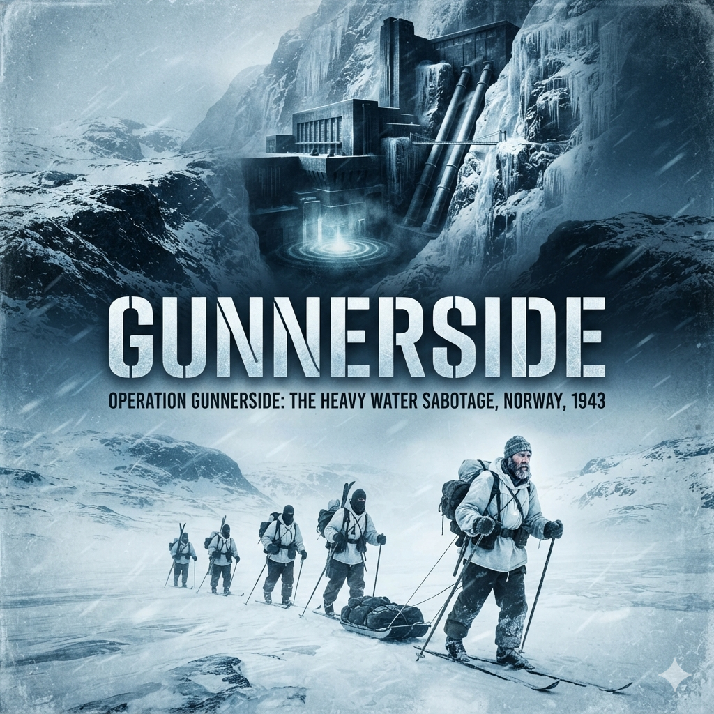

The smell of coal smoke, North Sea salt, and damp wool had not yet left Einar Skinnarland's jacket. He sat on a straight-backed wooden chair beneath the high cornices of the requisitioned flat, blinking against the sharp beam of an electric desk lamp.
Across the mahogany table sat two men. One was in British army khaki with the red-and-blue ribbons of the previous war—Lieutenant Colonel J. S. Wilson, head of the Special Operations Executive's Scandinavian Section. The other wore the dark service dress of the exiled Royal Norwegian Army. His insignia marked him as a captain, but his posture and thin wire-rimmed spectacles belonged to a lecture hall.
Captain Leif Tronstad had a thin dossier open in front of him. He did not look like a soldier; he was the former professor of industrial chemistry at the Norwegian Institute of Technology in Trondheim.
"Let us go over the crossing once more, Skinnarland," Tronstad said in Norwegian. His voice was level, measured, clipped at the consonants. "The Royal Navy intercepted you off Aberdeen on the seventeenth?"
"Yes, Captain," Skinnarland said. His voice was raspy from three days of diesel fumes and sea spray. "Just after dawn. A patrol vessel."
Wilson leaned forward, resting his forearms on the blotter. He spoke Norwegian with the steady, deliberate cadence of a former Boy Scout commissioner who had spent years in the north. "And Odd Starheim took the bridge without gunfire?"
"No shots," Skinnarland replied. "Starheim had six men with pistols. We boarded at Flekkefjord as normal passengers. Once the Galtesund cleared the headland and turned south into the coastal lane, Starheim drew on the captain. We locked the mates in the mess, took the wheelhouse, and altered course due west, straight into the North Sea."
"And the engine room?" Wilson asked.
"The chief engineer was cooperative once he saw the Colt .45. He kept steam up the entire run. We were lucky with the weather. Low cloud, three-meter swell, no Heinkels."
Tronstad turned a leaf of paper in the file. His finger stopped near the bottom of a typed form stamped by the port security officer at Aberdeen.
"Your home address," Tronstad said, eyes lifting. "Møsvatn. Telemark."
"Yes."
"You were born in Vinje?"
"I was. But my family has worked the high dams above Rjukan for years."
Tronstad took off his glasses, set them on the open file, and rubbed the bridge of his nose. He looked at Wilson, then back to Skinnarland. The neutral, interrogative detachment in his face had suddenly vanished.
"What is your profession, Skinnarland?"
"Civil engineer. Surveyor."
"And your brother?"
"Torstein? He is the head dam keeper at Møsvatn. For Norsk Hydro."
Tronstad's hand stilled on the table. Wilson sat up slightly straighter in his chair.
"Your brother controls the water gates at the Møsvatn dam?" Tronstad asked. "The primary reservoir?"
"Yes, Captain. He regulates the flow down the valley to the Vemork power station. Why?"
Tronstad did not answer immediately. He picked up his spectacles, hooked them behind his ears, and leaned across the table. When he spoke, his voice had dropped an octave, tight with controlled intensity.
"How well do you know the terrain around the Vemork plant?"
Skinnarland gave a short, quiet breath that was half a laugh. "I grew up on those crags. I know every rock from the bottom of the Måna ravine to the top of the plateau. I've cross-country skied the Hardangervidda every winter since I was six years old."
Wilson glanced at Tronstad, his eyes narrowing. "He arrived in Aberdeen forty-eight hours ago, Leif. Has his disappearance been reported in Rjukan yet?"
"Einar," Tronstad said, leaning closer, "think carefully. When you boarded the Galtesund with Starheim's men at Flekkefjord, did anyone in Telemark know where you were going?"
"No," Skinnarland said. "I told my family I was heading south along the coast on a survey commission. The police in Rjukan think I am down near Kristiansand. If they check, it will take them weeks to figure out I wasn't just delayed by snow."
"And the Germans?"
"They don't know my name."
Tronstad pushed his chair back and stood up. He walked to the window, parted the heavy blackout curtains an inch to look out into the London rain, and let them drop back into place.
"Colonel," Tronstad said in English, turning to Wilson. "You know what we received from Stockholm last month. We have the production figures. We have the German requisition orders from Berlin. But we have had no eyes in the valley since the Occupation began."
"I am aware," Wilson said quietly.
"We have been sitting here wondering how to insert a man into the Rjukan district without alerting the local Lensmann or the Gestapo garrison," Tronstad continued, gesturing with an open palm toward the young surveyor. "And here is a Telemark skier whose brother controls the water taps above the factory, sitting in our reception flat before the Germans even know he has crossed the county line."
Skinnarland looked between the two officers, the fatigue in his limbs suddenly overridden by a sharp, cold prickle of adrenaline. "What is at Vemork, Captain? The power station?"
Tronstad returned to the desk and leaned both palms on the mahogany, towering over Skinnarland.
"You took the Galtesund across the North Sea to join the Free Norwegian forces, did you not?"
"Yes, sir. I came to enlist in Kompani Linge. I came to fight."
"You will fight," Tronstad said. "But not in Britain. You cannot stay here."
"Sir?"
"If you remain in Scotland, your absence will be noticed in Rjukan. The Lensmann will file a missing persons report. The Germans will cross-reference the Galtesund passenger manifest with the local registries, and by the end of next month your family will be questioned by the Gestapo. Your utility will be entirely destroyed."
"Then what am I to do?"
"You are going back," Tronstad said flatly.
Skinnarland stared at him. "Back to Norway?"
"To Telemark," Wilson said, his English calm and matter-of-fact. "Immediately. We will send you to STS 51 at Dunham House for a crash course in wireless telegraphy, parachute jumping from a static balloon, and cipher security. You will learn it in ten days. Then an RAF bomber will take you back across the North Sea and drop you directly onto the Hardangervidda."
Skinnarland swallowed. "And what am I doing when I hit the snow?"
Tronstad reached into his breast pocket and produced a small, flat brass key. He unlocked the lower drawer of the desk, reached inside, and withdrew a thick manila folder marked with red grease pencil: MOST SECRET – TUBE ALLOYS / NORWAY.
He opened it. On the top lay an eight-by-ten aerial photograph of the sheer, ice-coated wall of the Vestfjord valley. Clipped to the rock shelf, dwarfed by the massive penstocks plunging down from the mountain, stood the fortress-like granite mass of the Vemork hydroelectric plant.
"You are going home to your brother's cabin," Tronstad said, pointing a finger directly at the basement of the long concrete building behind the power station. "You will set up a transmitter in the woods. And you will prepare the ground for the destruction of the world's only heavy water factory."
The room smelled of developer acid and warm projector bulbs. The heavy blackout draperies were drawn tight against the late-afternoon sun over Portman Square. On a bedsheet pinned to the plaster wall, an inverted, glowing negative of an engineering blueprint flickered into focus.
Captain Leif Tronstad held a wooden pointer against the glowing linen. Next to him, Colonel Wilson sat on the corner of the oak table, a lit Player's cigarette held between ink-stained fingers. Standing at the back of the room, leaning against the doorframe, was Dr. Michael Perrin, the scientific liaison for Tube Alloys—the British code name for atomic research.
"The microfilm arrived via Stockholm yesterday morning," Tronstad said, his voice flat and analytical. "Smuggled inside the hollowed barrel of a Montblanc fountain pen. It comes directly from Jomar Brun."
"Your old assistant," Wilson noted.
"My chief engineer," Tronstad corrected. "When I developed the industrial-scale electrolysis method for Norsk Hydro in 1934, Brun and I drafted every pipe, every manifold, and every terminal together. He is still running the plant. If Jomar draws a line on a diagram, that line exists in concrete and steel."
Tronstad touched the tip of the pointer to the bottom tier of the projected blueprint.
"This is the Vassstoffabrikken—the hydrogen plant. It sits on the rock shelf directly in front of the main power station. Seven stories of steel-reinforced concrete built into the granite cliff. The top six floors produce ordinary hydrogen gas for the manufacture of agricultural fertilizer. But here—"
The pointer tapped the subterranean level.
"—in the basement. Floor zero. This is the High Concentration Plant."
Perrin pushed himself off the doorframe, adjusting his spectacles. "The Germans have expanded it?"
"Dramatically," Tronstad said, pulling a slip of paper from his tunic pocket. "Until 1940, Vemork produced approximately ten to twelve kilograms of deuterium oxide per month. A scientific curiosity, nothing more. Brun reports that in January, representatives from I.G. Farben and the Heereswaffenamt arrived from Berlin. They presented Hydro with a forced contract. They demanded production be increased to one hundred kilograms a month immediately, with a final target of four tons per year."
Perrin let out a low whistle through his teeth. "Four tons. Heisenberg doesn't need four tons for laboratory experiments. That is industrial volume. They are calculating a heavy-water moderator for an operational uranium pile."
"Which leaves us with a single question," Wilson said, exhaling a thin stream of gray smoke toward the chandelier. "How do we destroy it?"
Perrin looked between the two officers. "Air Chief Marshal Harris was at the War Cabinet yesterday. Bomber Command wants to put a hundred Lancasters over the Vestfjord valley. Level the mountain."
Tronstad whipped around, his wooden pointer snapping down onto the table with a sharp crack. His knuckles were white.
"Harris is a butcher who does not understand industrial topography," Tronstad snapped, his English razor-sharp. "A mass bombing raid on Vemork is an absurdity. Look at the contour lines, gentlemen."
He swung the projector slide to an aerial reconnaissance photograph taken by an RAF Mosquito at twenty-thousand feet.
"The plant sits on a narrow ledge—scarcely two hundred meters wide—carved into a sheer mountain wall. The valley is a slit. The Måna gorge drops six hundred feet below the foundations; Mount Gausta rises five thousand feet directly behind it. Heavy bombers cannot line up a level run. If they drop from altitude through the updrafts, ninety percent of their ordnance will hit the rock face above or the riverbed below."
"The plant is reinforced concrete," Wilson observed, squinting at the image. "Would a five-hundred-pound bomb penetrate the upper decks?"
"No," Tronstad said flatly. "It would crater the roof of the sixth floor. It would shatter the upper machinery. But the high-concentration cells are underground, sealed beneath six layers of ferro-concrete and resting directly on bedrock. You could drop high explosives on that roof for an hour and fail to crack a single cell in the basement."
Tronstad stepped away from the projector and stood directly in front of Perrin, his face grim.
"And there is a worse consequence. One that Bomber Command cares nothing about. Above the plant, on the northern slope, sit the storage tanks. What do you think is in them, Doctor?"
"Feedstock?" Perrin ventured.
"Liquid ammonia," Tronstad whispered. "Hundreds of tons of liquid synthetic ammonia under pressure. If a stick of high-explosive bombs strays—as it inevitably will in that valley—those tanks will rupture. A cloud of concentrated ammonia gas will pour down the gorge like water. It is heavier than air. It will flow down into the town of Rjukan, three kilometers away."
The room was silent except for the faint hum of the projector's cooling fan.
"There are four thousand Norwegian civilians living in that hollow," Tronstad said, his voice trembling with controlled fury. "Women, children, shopkeepers. Ammonia gas dissolves moisture in the human lung. It creates ammonium hydroxide. It liquidates the respiratory tract. Those people will drown in their own fluids within five minutes. If Harris sends a hundred bombers to Vemork, he will kill thousands of our allies and leave the heavy water cells intact."
Wilson crushed his cigarette out in a ceramic ashtray on the desk. He stood up, towering over the desk, and looked at Tronstad.
"Then the RAF is off the table," Wilson said quietly. "We tell the Chiefs of Staff that bombing is strategically unviable."
"It must be done from the ground," Tronstad insisted. "A surgical strike. Brun has marked the exact vulnerable points on these microfilms. The cascade consists of eighteen cylindrical electrolytic cells, manufactured from nickel and steel. They are connected in a series. If you place shaped explosive charges directly against the casings of those eighteen cells, you drain the entire concentrated inventory into the floor drains, destroy the bespoke diaphragms, and set the German program back by at least a year."
"A raid on the ground," Wilson mused, walking to the wall map of southern Norway. His thumb traced the vast, empty white blotch north of the valley. "Vemork is a natural fortress. The suspension bridge across the gorge is the only road access. The Germans have already stationed troops there since the Galtesund crossed."
"We do not use the roads," Tronstad said, stepping beside him. "We use the Hardangervidda. Skinnarland is already there. He jumped in March. His signals are coming through cleanly from his brother's hut at Møsvatn."
Wilson nodded slowly. "Skinnarland gives us local intelligence and weather. But he is a scout, not a demolition team. If we hit the plant from the plateau, we need a striking force."
"Combined Operations," Perrin suggested. "Royal Engineers. Mountbatten's commandos."
Wilson rubbed his jaw, his eyes fixed on the blank, contourless expanses of the plateau on the map.
"British troops cannot ski," Wilson said bluntly. "You cannot turn a Cockney sapper into an Arctic cross-country skier in six weeks. If Mountbatten takes this on, they will have to fly in by glider. Land the Royal Engineers on the plateau near the factory, guide them to the target, blow the cells, and march them across the border to Sweden."
Tronstad frowned. "Gliders on the Hardangervidda? In the winter?"
"It is the only way to deliver thirty heavily armed sappers in one lift," Wilson replied. "Airspeed Horsas towed by Halifaxes. But the British pilots cannot find a patch of frozen bog in the dark without guidance."
Wilson turned back to Tronstad, his eyes sharpening with purpose.
"We need an advance party, Leif. Men from Telemark. Hunters who know the Hardangervidda in blizzards. They must go in first, survive the autumn on the plateau, scout the plant, and set up a radar beacon to guide Mountbatten's gliders out of the night."
Tronstad took off his glasses, looked at the glowing blueprints on the wall, and nodded slowly.
"I have four men in Kompani Linge," Tronstad said. "Poulsson, Kjelstrup, Haugland, and Helberg. Two of them were born within thirty miles of the factory. If any men alive can hold that plateau through an Arctic winter, it is them."
The library of the Jacobean mansion had been stripped of its family portraits. In their place hung maps of southern Norway, aerial mosaics with target keys, and a blackboard chalked with Morse frequencies. Rain lashed the leaded glass windows, blurring the flat, orderly lawns of the English countryside.
Four Norwegian soldiers stood in a loose semicircle around an oak drafting table. They wore standard British battle dress with the curved cloth slip-on on their shoulders reading: NORWAY.
Captain Leif Tronstad stood opposite them. At his right hand, resting on the table next to a stack of ordnance maps, sat a heavy, olive-drab metal box with dials and an extensible aerial: the "Eureka" radar transponder. Next to it lay four small, dark-brown rubber capsules, each no larger than the tip of a little finger.
Tronstad looked at the four men. He knew their service records down to the millimeter.
Second Lieutenant Jens-Anton Poulsson, twenty-four, the appointed commander: calm, methodical, born in Rjukan, the son of a Hydro director. Sergeant Arne Kjelstrup, twenty-nine, his deputy: a former plumber from Rjukan who had spent his youth shooting ptarmigan in the crags above the valley. Sergeant Claus Helberg, twenty-three: a guide for the Norwegian Touring Association who knew every turf hut, shepherd's path, and boulder field on the plateau. And Sergeant Knut Haugland, twenty-five: a veteran of the fighting at Narvik, one of the sharpest wireless telegraphists Kompani Linge possessed.
"Your operation is code-named Grouse," Tronstad began, his voice dry and steady. "The Royal Air Force will drop you onto the Hardangervidda during the October moon period. You will take skis, pulks, winter survival equipment, and full weaponry. But your primary payload is this."
He placed a gloved hand on the olive-drab box.
"The Eureka beacon," Haugland said, stepping forward to look at the dials. "It works with the Rebecca receiver in the aircraft?"
"Precisely," Tronstad said. "The Halifax bombers towing the British gliders will carry the Rebecca apparatus. The pilots cannot navigate by sight over an unlit, snow-covered plateau in the dead of winter. When they cross the Norwegian coast, Haugland will power this unit. The Eureka will receive their interrogation pulses and transmit a homing signal. It will draw them straight to your flares on the ice."
"And the landing zone?" Poulsson asked. His eyes were fixed on the map of Lake Møsvatn.
"The Skoland marshes, near the southwestern shore of Lake Møsvatn," Tronstad said. "Skinnarland has scouted the ground. You will inspect the bogs and the lake ice, confirm the thickness, clear any large boulders or snowdrifts, and mark a strip with paraffin lamps. Once the two Horsa gliders land, you will place yourselves under the command of the Royal Engineers officer. You will act as their local guides. You will lead them down to the suspension bridge at Vemork, cover their rear, and assist them in blowing the high-concentration cells."
Kjelstrup rubbed his jaw. His hands were broad, calloused from civilian trade. "How many sappers in the gliders, Captain?"
"Thirty-four," Tronstad replied. "All volunteers from the 9th Field Company, Royal Engineers, and the 261st Airborne Field Park Company. They have demolition training, but they do not know the mountains. If a blizzard blows up, they will die if you do not guide them. Their lives depend on your navigation."
Helberg leaned over the map, his finger tapping the high tundra northeast of Rjukan. "October is the worst month on the Vidda, Captain. The ground is freezing, but the deep snow has not yet settled. If the bogs are half-frozen, the lakes won't take the weight of a loaded Horsa. And pulling loaded pulks across bare scree will tear the runners to ribbons."
"Then you will haul the canisters on your backs," Tronstad said without hesitation. "The War Cabinet will not delay. The intelligence from Brun indicates that German production is ramping up every week. The strike must take place during the November moon."
Tronstad shifted his gaze from the maps to the four small rubber capsules resting near his elbow.
The room grew very quiet. Outside, a gust of wind drove rain against the windowpanes with a sharp rattle like gravel.
"These are L-tablets," Tronstad said. His tone remained clinical, as though he were describing a chemical titration. "Inside each rubber skin is a glass phial containing potassium cyanide. Each of you will carry one in your breast pocket. During operations, it is to be kept in the mouth, between the gum and the cheek."
Haugland looked at the brown pellets. "How fast?"
"If bitten, the acid in your saliva reacts with the cyanide within seconds," Tronstad said. "You will lose consciousness in fifteen seconds. Respiratory arrest follows within two minutes. If you swallow it whole without breaking the glass, the rubber coating will protect you long enough to have your stomach pumped—provided you reach medical attention immediately. But if the glass breaks, you are dead."
Poulsson looked directly into Tronstad's eyes. "Is capture considered that certain, Leif?"
Tronstad did not blink. "If you are taken on Norwegian soil, the Gestapo will not grant you the status of regular prisoners of war. You are wearing British uniform, but Terboven's security police in Oslo consider Norwegian nationals in foreign service to be traitors and bandits."
Wilson stepped forward from the shadow of the bookcase, his face grim. "If you are captured, wounded or cornered in a hut, you will be handed over to the Sicherheitsdienst—the Gestapo. There will be no internment camp. There will be no Red Cross parcels."
Wilson reached down, picked up one of the rubber capsules, and held it out to Poulsson.
"The Gestapo will not merely shoot you," Wilson said quietly. "They will take you down to Victoria Terrasse in Oslo. They will use bone-crushers. They will tear out your fingernails. They will use electric terminals on your spine. If you break, you give away Skinnarland. You give away the landing zone at Skoland. You send thirty-four British engineers in wooden gliders directly into an ambush."
Poulsson took the pellet from Wilson's palm. It felt light, insignificant, like a dried pea. He dropped it into his left breast pocket and buttoned the brass flap.
"We won't break," Poulsson said.
Kjelstrup, Helberg, and Haugland stepped forward in turn. Each man picked up a capsule from the drafting table and slipped it into his uniform. None of them spoke.
Tronstad looked at the four young men. For a fleeting second, the detached mask of the professor slipped, revealing the terrible weight of sending four boys from his homeland into a freezing slaughterhouse. He extended his right hand.
"A Halifax of 138 Squadron is waiting at Tempsford," Tronstad said. "The weather over the North Sea is clearing for tomorrow night. God keep you, boys."
Poulsson shook Tronstad's hand, his grip hard and dry.
"We will have the flares lit on the ice, Captain," Poulsson said. "Tell the gliders to follow the beacon."
The slipstream slammed into Jens-Anton Poulsson like a wall of moving ice.
For two seconds there was only the deafening roar of the four Rolls-Royce Merlin engines tearing away into the darkness, the violently whipping parachute risers, and the shock of freezing air after six hours inside the Halifax's unheated bomb bay. Then the nylon canopy snapped open with a violent crack that jerked his harness deep into his groin.
Beneath his dangling boots, there was no flat, snow-covered lake. There was only a vast, black void of jagged rock and swirling gray mist.
Poulsson hit the ground hard. His left ski boot struck a granite slab, his knees buckled, and the wind caught the parachute, dragging him face-first across five yards of frozen moss and razor-sharp scree before he managed to trip the quick-release box on his chest.
The silence that followed was immediate, hollow, and absolute, broken only by the keening of the sub-zero wind across the rocks.
"Arne!" Poulsson called out into the dark, his voice torn away by the gale. "Claus! Knut!"
A low grunt came from twenty yards to his right, among a cluster of black boulders. A shadow detached itself from the stone, spitting blood and dirt.
"Here," Arne Kjelstrup muttered, wiping a cut above his eye with the back of a sodden wool mitten. "I'm in one piece. Dropped straight into a scree bed. Where are the containers?"
Two more shapes emerged from the gloom. Claus Helberg was dragging his collapsed canopy behind him like a dead animal; Knut Haugland followed, clutching his personal haversack, in which the quartz crystals and valves for the Type 3 Mark II wireless were wrapped in oily wool.
"Knut," Poulsson asked, his teeth chattering uncontrollably from the shock of the wind. "The radio?"
"Valves are intact," Haugland breathed, shivering violently. "I carried the transmitter on my chest. But the batteries and the charging dynamo are in the supply canisters."
"We find the canisters first," Poulsson ordered. "Before the drift covers the parachutes."
For the next four hours, working in the pitch-black void under a cloud cover that blotted out the moon, the four men combed the boulder field on foot. There was not enough snow to ski—only a three-inch dusting of powdery rime over jagged, knee-shattering scree and half-frozen peat bogs that broke beneath their boots, soaking their legs to mid-calf in ice water.
By dawn, an ash-gray light seeped over the horizon, revealing a desolate, rolling desert of stone and frozen marsh.
They had located eight of the supply canisters. One pulk had shattered on impact against a boulder, its ash-wood frame split from nose to tail. Another container, packed with tinned pemmican and chocolate rations, had ruptured, scattering small tins into the deep crevices between the rocks. Most critically, the heavy metal canister containing the Eureka radar transponder and its primary accumulators lay wedged between two granite slabs, battered but structurally intact.
Helberg stood atop a low ridge of dark shale, shielding his eyes against the stinging sleet, looking north, then west. His face, normally easygoing and open, had hardened into an anxious mask.
"Jens," Helberg called down. "Come up here."
Poulsson scrambled up the wet stones, his breath coming in ragged white plumes. "What is it? Do you recognize Ugleflott?"
"Ugleflott isn't here," Helberg said quietly.
Poulsson froze. "What do you mean, it isn't here?"
"Look at the drainage," Helberg said, pointing down into the valley below them. A black, half-frozen torrent cut through a canyon of shale. "The bogs at Ugleflott drain east toward Lake Møsvatn. That water down there is flowing southwest. Toward the valleys of Setesdal."
Poulsson unbuttoned his windproof smock, pulled a greaseproof map case and a compass from his tunic, and dropped to his knees behind a boulder to break the wind. Helberg knelt beside him, anchoring the corners of the linen map against the gale.
"Look at that ridge line to the west," Helberg traced a frostbitten thumb across the paper. "That is the high shoulder of Songadalen. We aren't anywhere near Ugleflott. We aren't even near Møsvatn."
"Give me the coordinates, Claus," Poulsson commanded, his voice tight.
"Fjærefit," Helberg said. The word fell like an iron weight between them. "The RAF navigator made his landfall over the coast, took the wrong river valley, and dropped us at the head of Songadalen."
Kjelstrup and Haugland had climbed up the shale bank and stood above them, listening in silence.
"How far off target?" Kjelstrup asked, his voice dead level.
Helberg looked up from the map. "Roughly one hundred kilometers. Sixty English miles. Due southwest of where we need to be."
Haugland cursed under his breath. "One hundred kilometers? Over bare scree? With three hundred kilos of radio batteries and a radar beacon?"
Poulsson stood up. The wind caught his smock, whipping the hem against his thighs. He looked out over the endless, undulating expanse of grey rock, frozen bogs, and scattered snowdrifts. Sixty miles in summer on marked paths was a three-day march. Sixty miles in late October, with broken pulks, three hundred kilograms of dead-weight British radar gear, half-frozen bogs that would swallow a man to the waist, and no snow for skiing, was an operational nightmare.
"The November moon is four weeks away," Poulsson said, looking each of his three companions in the eyes. "The gliders leave England whether we are at Møsvatn or not. If that Eureka beacon isn't powered on the marsh when the Halifaxes cross the coast, thirty-four men will fly blind into a mountain."
Kjelstrup spat onto the dark shale. He bent down and picked up the drag-rope of the nearest undamaged pulk.
"Then we'd better start pulling," Kjelstrup said.
The ash-wood runner of the lead pulk screamed against bare granite, a dry, agonizing shriek of splintering timber that made Arne Kjelstrup drop the harness rope with a curse.
"Stop!" Kjelstrup shouted back into the sleet. "Hold up!"
Behind him, Claus Helberg and Jens-Anton Poulsson halted, their chests heaving, steam pouring from the open collars of their sodden windproof smocks. Knut Haugland caught up moments later, bent double beneath a sixty-pound canvas Bergen rucksack that held the spare accumulator plates and the Eureka's heavy frequency crystals.
Kjelstrup dropped to his knees in the mud. He flipped the sled onto its side. A foot-long sliver of ash had peeled back from the steel-shod runner, jammed with moss and crushed shale.
"Third time today," Kjelstrup panted, running raw, bleeding fingers over the split wood. "The plateau has no skin on it. It's all tooth and claw. Pulling an eighty-kilo sledge across this is like dragging it down a gravel road."
Poulsson leaned on his ash ski poles, looking back across the vast, bleak amphitheater of the Songa basin. The sky was the color of a bruised zinc tub, sagging low over the ridges.
"We are behind schedule," Poulsson said. His lips were split and blackened from windburn. "We have been moving for sixteen days, and we haven't made forty kilometers as the crow flies."
"Because we are walking every kilometer three times," Haugland muttered, letting the Bergen pack slide to the wet stones with a dull metallic clatter. He collapsed onto it, massaging his shoulders where the thin webbing straps had bitten through his wool battle dress into the bruised meat of his collarbones.
The math was inescapable. Four men could not move three hundred kilograms of British military ordnance, radio equipment, accumulators, tools, and rations across snowless boulder fields in a single carry.
They had been forced to adopt the brutal logic of the Arctic relay: load half the gear onto their backs and the surviving pulk, haul it five kilometers through the rocks and knee-deep, half-frozen bogs, dump the canisters under a canvas groundsheet, turn around, walk five kilometers back empty-handed, shoulder the remaining canisters, and drag them forward again.
Ten kilometers of agonizing labor yielded five kilometers of progress. Their boots, soaked through on the first morning, had never dried. At night, inside their two-man silk bivouac tents, they slept with their wet wool socks pressed against their bare chests to keep the fabric from freezing into solid wooden boards before dawn.
Helberg stood on an outcropping of dark slate, scraping gray slush from his gaiters with the point of a hunting knife.
"The wind is veering north-northwest," Helberg said, squinting into the biting air. "Smell it?"
Poulsson lifted his chin. The air had sharpened. The wet, cloying stench of rotting peat and rain-soaked lichen was fading, replaced by the clean, metallic ozone that preceded a hard continental freeze.
"It's turning to dry snow," Helberg said. "Within forty-eight hours, the bogs will freeze solid. Once the lakes carry ice, we can put the runners on snow. We can double our speed."
"We don't have forty-eight hours to spare," Poulsson said, pulling a grease-stained notebook from his tunic. "Look at the calendar. London gave us the moon period: November seventeenth to twentieth. Today is the fourth. If the weather breaks over the North Sea and the RAF launches the gliders on the nineteenth, we must reach the base cabin at Sandvatn and get down to Møsvatn. We need forty-eight hours to scout the Skoland marshes, clear the landing lanes, and lay the wire for the Eureka beacon."
Kjelstrup pulled a heavy roll of friction tape and a length of wire from his pocket. He began binding the cracked pulk runner with vicious, jerking motions.
"Then we abandon the heavy rations," Kjelstrup said between gritted teeth. "We leave the tins of pemmican and biscuits behind. Cache them under rocks."
"We can't," Haugland countered, his voice shaking with cold. "We are already burning five thousand calories a day dragging this kit. If we ditch the rations, what do we eat while we wait for the gliders?"
"We hunt," Helberg said simply. "I've seen fresh tracks in the shale along the ridge. Wild reindeer. If the hard freeze comes, the herds will move down from the high tops toward Møsvatn. Arne and I have our Krag-Jørgensen rifles. We can live on meat."
Poulsson looked down at the Eureka canister lashed to the damaged sled. That single box weighed nearly ninety pounds with its secondary batteries. It was the linchpin of the entire strategic plan. Without it, thirty-four British soldiers would cross the sea in wooden gliders and descend into an unlit, cloud-choked labyrinth of granite peaks.
"The rations stay with us as far as the next cache," Poulsson commanded, his voice leaving no room for argument. "We do not dump a single ounce of food until we reach the shelter at Sandvatn."
He stepped up to the damaged pulk, grabbed the second trace rope, and knotted it around his own waist, sharing the load with Kjelstrup.
"Knut, take the point with Claus," Poulsson ordered. "Follow the spine of the ridge where the shale is flattest. Avoid the peat hollows. If a man breaks an ankle out here, we will have to shoot him—because no one is carrying him back."
Haugland shouldered the Bergen pack again, wincing as the wet canvas bit into raw skin. He picked up his rifle, racking the bolt to clear the rime from the extractor.
"Forward," Poulsson said.
The four men leaned into their harnesses. The damaged runner groaned, scraped against a slab of granite, and then, as the first stinging flakes of dry powder began to whirl out of the northern sky, slid forward onto a widening sheet of white.
The ice beneath Jens-Anton Poulsson's boots groaned with a hollow, subterranean boom—the sound of two feet of lake water contracting under thirty degrees of frost.
Across the flat expanse of the Skoland marshes at Lake Møsvatn, the wind had carved the hard-packed snow into razor-edged waves called skavler. Down the center of the frozen ground, running on a magnetic heading of two-eight-zero into the teeth of the wind, stood eight paraffin flare-pots set three hundred yards apart.
Arne Kjelstrup and Claus Helberg stood five hundred yards out on the ice, unlit storm matches clutched in their thick woolen mitts, their faces wrapped in white camouflage scarves so that only their ice-crusted eyelashes showed against the dark.
Near the marsh edge, crouched inside a knee-high snow wall built to break the gale, Knut Haugland sat hunched over the Eureka transponder. His headset was clamped over his wool balaclava. The green-painted metal casing of the unit was white with rime. Next to it sat the heavy dry-cell battery pack, wrapped in a sheepskin jacket to keep the acid from freezing into sluggish jelly.
Poulsson dropped into the snow trench beside him, checking his luminous pocket watch.
"Twenty-two forty-eight," Poulsson whispered, his breath crystallizing on his collar. "London's window opened at twenty-two thirty. Anything on the sweep?"
Haugland shook his head once, a minute gesture. His mittens were off; his fingers, swollen and blue-white, delicately rotated the fine-tuning knob on the front panel.
"Nothing," Haugland said. "The receiver is live. The valves are warm. If an aircraft carrying a Rebecca set comes within forty miles, the pulse will trip the transponder. The cathode ray tube should flare."
"And if their set fails?"
"Then they are flying on compass and dead reckoning from the Scottish coast through solid cloud."
Poulsson stood up and peered into the sky. Overhead, there were no stars. A ceiling of heavy, greasy cloud hung at barely eight hundred feet, swollen with sleet and supercooled vapor. A vicious temperature inversion was setting in: freezing fog rolling over the ridges, coating every wire, ski pole, and rock in crystalline rime.
"It's an icing trap up there," Helberg muttered, having skied back silently from the flare line. He rested his chin on his ski sticks, listening. "Any aircraft crossing the coast at eight thousand feet will pick up half a ton of clear ice on the wings within ten minutes. Gliders made of plywood and fabric won't survive it."
"Silence," Kjelstrup said from the edge of the snow wall. His arm came up, pointing southeast toward the jagged shoulder of the Gausta peak. "Listen."
The four men froze.
At first, there was only the low hiss of drift-snow scouring the crust of the lake. Then, faint and rhythmic, a heavy, pulsing vibration vibrated not through the air, but through the ice under their boots.
"Four Merlins," Haugland breathed, pressing the headphones hard against his ears. "It's a Halifax."
"Flares!" Poulsson yelled, his voice cracking against the wind. "Light the flare path!"
Kjelstrup and Helberg kicked their ski bindings into motion, poling violently out onto the open ice. Sulphur flared—a sudden hiss of red phosphor—and then the first paraffin pot caught, blooming into a dirty yellow smudge of flame and greasy black smoke. A second flare caught three hundred yards beyond it, then a third, carving a jagged runway of fire out of the black void.
The engine sound was louder now, a deep, syncopated drone that hammered against the clouds: thrum-thrum-thrum-thrum.
"Knut!" Poulsson shouted down into the trench. "Has the Rebecca locked on?"
Haugland was leaning so close to the transponder his breath fogged the dials. He wiped the glass with his thumb.
The needle of the signal-strength meter twitched, kicked violently toward three microvolts, and then fell dead.
"I had an interrogation pulse!" Haugland shouted back, his voice ragged with strain. "One sweep! But it broke—there's no lock! The beacon isn't replying, or their airborne set has iced up!"
The Halifax was directly above them now. The sheer acoustic weight of the four Rolls-Royce engines shook the snow off the turf trench, but the sky remained an impenetrable, churning belly of charcoal fog. The aircraft was flying blind at less than a thousand feet, trapped between the cloud tops and the unseen granite cliffs of the Vestfjord valley.
"Break through, curse you," Kjelstrup snarled, standing by the fifth flare, his arm raised with an unlit torch. "Look down! Look at the fire!"
The sound of the bomber passed directly over the flare path, traveling east toward Vemork. Then the note of the engines changed, rising to a laboring, screaming pitch as the pilot firewall-throttled the engines, clawing for altitude to clear the hidden peaks.
The roar circled once—a desperate, wide sweep through the freezing fog five miles to the north—then the acoustic center shifted.
The heavy drone did not return to Lake Møsvatn. It began to track southwest, heading back toward the coast, its pitch lower, ragged, and fading.
"He's turning away," Helberg said, his voice dropping into the quiet. "He didn't see us."
"Knut!" Poulsson called out. "Try the beacon again! Manual sweep!"
Haugland spun the dials until the stops clicked, his face pale in the faint yellow glow of the flares. "Nothing. The signal is gone. They're moving away at two hundred knots."
The four men stood in the snow, watching the flares spit and hiss against the falling sleet. The sound of the Halifax's engines shrank to a faint, hollow hum, like a bee trapped under glass, and then dissolved into the scouring whistle of the wind.
The silence that reclaimed Lake Møsvatn was vast, suffocating, and absolute.
Kjelstrup walked slowly over the ice, reaching the snow trench. He looked at Poulsson, then down at the burning paraffin pots that marked an empty runway for thirty-four men who had never arrived.
"Where are they, Jens?" Kjelstrup asked quietly.
Poulsson did not answer. He looked into the southwest, where the dark, jagged spine of the mountains vanished into the freezing fog. His hand drifted unconsciously to his left breast pocket, feeling the small, hard outline of the rubber-coated cyanide pill sewn beneath his battle dress.
"Put out the flares," Poulsson said. His voice was hollow. "Put them out before the Germans see the smoke."
The paraffin wick inside the stone hut flickered in the draft between the granite slabs. On a crude bench of pine planks, Knut Haugland sat wrapped in his sleeping bag, his fingers stiff inside woolen mittens with the index tips sheared away.
His hand tapped the brass key of the Type 3 Mark II wireless in rapid, metronomic bursts, sending an urgent, enciphered string of five-letter groups into the ether:
Poulsson stood by the single tiny window, scraping rime from the lower pane with the blade of his jackknife. Arne Kjelstrup was on his knees near the turf hearth, blowing life into a handful of dried mountain birch twigs to boil a pot of meltwater. Claus Helberg was stripping and oiling his Krag-Jørgensen rifle, the clean smell of mineral oil cutting through the damp stench of wet wool and sweat.
Outside, the crunch of ski skins on hard crust broke the wind's hum.
Kjelstrup froze, his hand dropping to the Colt .45 sitting on a ration crate. Helberg's rifle bolt snapped shut with a sharp clack.
"Poulsson," a low voice called from the doorway. "Open up. It's Einar."
Poulsson threw the heavy oak crossbar. The rough door swung inward against a swirl of spindrift, and Einar Skinnarland slipped through, coated from shoulder to boot in white rime. He carried a heavy canvas rucksack and leaned against the timber frame, his breath tearing in ragged, shallow gasps.
"Close it," Skinnarland whispered.
Poulsson shoved the door shut and dropped the timber bar into place. "Einar. You skied up from Møsvatn in the dark?"
"I took the dam trail," Skinnarland said, unbuckling his ski bindings with shaking, frost-numbed hands. He dropped his pack to the dirt floor. It held two loaves of coarse rye bread, a slab of salt mutton, and half a pound of real coffee. "I came the minute the telephone switchboard opened in Rjukan."
Haugland stopped tapping the wireless key. He slipped the headphones down around his neck. "What did London tell you?"
"Not London," Skinnarland said, his face gray beneath windburn and soot. "The local police. The line from Stavanger to the Hydro office was buzzing before dawn. The Germans have put the entire southern coast on maximum alert. Ausnahmezustand."
Poulsson grabbed Skinnarland by the shoulder of his sodden anorak. "The gliders, Einar. Did they make it down?"
"They're down," Skinnarland said. He looked around the cramped, frozen hut, his gaze hollow. "Both of them. And one of the bombers."
The only sound in the room was the spit of the damp birch twigs catching fire under the kettle.
"Where?" Poulsson asked.
"Nowhere near the plateau," Skinnarland said, dropping heavily onto an empty ammunition box. "A hundred and fifty kilometers southwest. In the coastal mountains of Rogaland. They ran into solid cloud and heavy icing as soon as they hit the Norwegian coast. The tow planes were flying on blind instruments."
Skinnarland rubbed his face with his calloused palms, as if trying to scrub away the words.
"The first Halifax—Campbell's aircraft—slammed head-on into the side of Hæstad Mountain, near Helleland. The whole mountain caught fire. All six RAF crew members died in the impact. The tow rope snapped, and its Horsa glider went down five miles away, smashing into the scree near Fylgesdalen by the Lysefjord."
"And the second glider?" Helberg asked, his voice dead level.
"The tow rope broke in the turbulence over Egersund," Skinnarland replied. "The bomber struggled back out to sea, but the glider plummeted into the bogs at Lendemyr, high up in Grytdalen."
Kjelstrup stepped forward, the birch bellows dangling from his hand. "Survivors, Einar? Are there men alive?"
"Yes," Skinnarland said. "That is the horror of it. There are survivors from both gliders."
Poulsson's pulse jumped. "How many?"
"At Lendemyr, fourteen men climbed out of the wreck," Skinnarland said. "Several of them are badly hurt—broken legs, crushed ribs. At Fylgesdalen, thirteen or fourteen more. The local farmers found them at first light. Dr. Søyland from Helleland was called to treat the wounded. The farmers were bringing them hot milk and blankets."
"Then we can move," Poulsson said, his voice rising with sudden, desperate urgency. He turned to Helberg. "Claus, you know the southwest valleys. If we take light packs and ski south along the ridge, can we link up with them? Can we get them onto the plateau?"
"Jens," Skinnarland said, his voice cracking. He reached out and caught Poulsson's sleeve. "Listen to me. You can't reach them."
"Why not? If thirty British sappers are on the ground—"
"The Wehrmacht was on the scene within two hours," Skinnarland whispered. "The crash of the Halifax brought every German garrison from Egersund to Stavanger. They cordoned off the mountains. A detachment of the 214th Infantry Division surrounded the glider at Lendemyr while the doctor was still setting splints."
"Did they fight?" Kjelstrup asked.
"How could they fight?" Skinnarland's voice rose, thin and strained. "Half of them were crippled from the crash. Their Sten guns and rucksacks were crushed in the wreckage. They surrendered as prisoners of war. They marched out under a white flag, believing they were protected by the Geneva Convention."
Haugland stood up from the radio bench, his face pale in the yellow paraffin light. "And the men at Fylgesdalen?"
"Surrounded by a Wehrmacht patrol from Sandnes," Skinnarland said. "The Germans took all of them into custody. The walking wounded were loaded into troop trucks. The men with broken spines were taken to the hospital in Stavanger."
Poulsson stood rigid in the center of the hut. The silence settled back over them, heavier and colder than the stone walls.
"They surrendered," Poulsson muttered to himself. "British soldiers in full uniform."
"The Gestapo took over the convoy at Stavanger," Skinnarland added quietly. "A local clerk in the police station overheard the German district commander. They found the maps, Jens. They recovered the British target files from the wreckage at Hæstad."
Kjelstrup let out a slow, shuddering breath. "They know about Vemork."
"They know everything," Skinnarland said. "The maps of the high-concentration basement. The photos of the suspension bridge. The demolition charges. Within twenty-four hours, the Germans will have a battalion dug in around the plant."
Behind them, the Type 3 Mark II radio began to chirp.
The sound was sharp, metallic, and relentless—the rapid staccato of incoming Morse code cutting through the static.
Haugland lunged for the bench, slamming the headset against his ears. He grabbed an indelible pencil and a pad of gridded cipher paper.
"It's London," Haugland said, his pencil already flying across the gridded lines, scribbling five-letter groups in the dim light. "Priority red. Home Station is replying."
Poulsson, Kjelstrup, Helberg, and Skinnarland crowded around the small table, watching the lead bite into the paper. Nobody spoke. Nobody moved. The only sound was the clicking of the headphones and the distant scream of the wind sweeping across the barren tundra of Lake Sandvatn.
The smell of scorched kerosene hung thick in the cold air.
Knut Haugland sat motionless at the rough plank table, his grease pencil poised over a strip of printed silk. Beside him lay the five-letter groups he had copied from the airwaves two hours earlier. Using his one-time pad, he subtracted the cipher keys letter by letter, spelling out the plaintext onto gridded paper.
Poulsson, Kjelstrup, and Helberg stood behind him, their breath misting over his shoulders. Nobody spoke. The only sound was the lead scratching across the page and the dull, persistent shudder of the turf roof under thirty-knot gusts.
Haugland finished the final line. He set the pencil down. His hand was trembling slightly—not from the sub-zero chill inside the hut, but from the words staring back at him in neat block capitals:
The words sat on the table like shards of broken glass.
Kjelstrup leaned down, his eyes scanning the lines twice, three times, as if willing the pencil marks to rearrange themselves.
"Lethal injection," Kjelstrup whispered. His voice was cracked, raw. "In a hospital bed. British soldiers with broken legs."
"The Commando Order," Helberg said. He stood upright, staring at the rough granite wall. His face was devoid of color. "Tronstad warned us in Essex. No quarter. No Geneva Convention."
Poulsson picked up the paper, his fingers rigid. "Thirty-four men. Sappers who volunteered for a demolition run. Murdered before the wreckage was even cold."
"And the maps," Haugland said, his voice flat with the terrible finality of the cipher. "The Germans have the aerial photographs, Jens. They know the objective was the High Concentration Plant. They know we planned to blow the cells. If we set foot anywhere near the Vestfjord valley now, we are walking into a fortified hornets' nest."
Skinnarland, sitting in the corner with his back to the turf hearth, let out a harsh, dry breath. "The garrison at Vemork has already doubled. A hundred SS troops arrived from Oslo yesterday morning by special train. They've laid barbed wire three coils deep along the railway line. The suspension bridge has two Maxim gun emplacements covering the approaches. You cannot get within four hundred meters of that facility without being cut in half."
Poulsson folded the cipher sheet with deliberate, meticulous care. He held the corner over the yellow flame of the hurricane lamp. The paper curled, browned, and flared into a bright orange tongue of flame, dropping black ash into the empty mess tin on the table.
"Read the last two lines, Arne," Poulsson said, his voice dropping into that deep, cold calm that had earned him the command. "What did Tronstad say?"
"He told us to stay," Kjelstrup replied. "He told us not to go to Sweden."
"To stay," Helberg echoed, a mirthless smile touching the corner of his chapped mouth. "Winter has already closed the passes. The bogs are frozen three feet deep. In two weeks, the temperature on the plateau will hit minus thirty. We have half a sack of coarse rye flour, six tins of pemmican, and two hundred rounds of ammunition. And London is ordering four men to hold an Arctic plateau the size of a small country for three months?"
"That is the order," Poulsson said.
"If the Germans find our tracks—" Haugland began.
"If they find our tracks, we die," Poulsson cut in, turning to face all of them. "You read the cipher. If they take us, there is no internment camp. There is no Red Cross parcel. There is the cellar in Victoria Terrasse in Oslo, and then there is a bullet in the neck behind the barracks."
He reached to his chest, tapping the brass button of his left pocket, where the rubber-coated L-tablet lay nested in wool.
"None of us are going to Sweden," Poulsson said. "If we run to the border, the mission dies. If the mission dies, the Germans get their heavy water. If the Germans get their heavy water, they build the uranium bomb. Is that clear to everyone in this room?"
The three sergeants looked at him. Kjelstrup nodded once, his jaw set like iron. Helberg picked up his Krag rifle and pulled the bolt back, inspecting the brass casing in the chamber.
Haugland sat back down on the crate, pulling the telegraph key back toward his hand. He clicked the power toggle of the Type 3 Mark II; the tiny red indicator bulb glowed in the darkness like a solitary ember.
"What do I tell Home Station, Jens?" Haugland asked quietly.
Poulsson looked down at the telegraphist.
"Tell Tronstad that Grouse is dead," Poulsson said. "Tell him Swallow has taken over the watch. We will hold the plateau until the new team drops."
Haugland's fingers closed over the brass knob. He did not draft a text on paper. In steady, defiant bursts of Morse code, he sent the acknowledgment into the night, the signal climbing through the blizzard toward England:
The smell inside the stone hut was a choking mixture of burning paraffin, seal-oil grease, wet birch smoke, and boiling tripe.
Soots from the Primus stove and the open hearth had coated the granite walls and the timber ceiling poles in a greasy, tar-like lacquer. The four men were blackened with it; their faces, hands, and uniforms were stained an indelible, greasy charcoal. When they sweated or coughed, pale streaks cut through the grime around their eyes and mouths.
Arne Kjelstrup knelt on a frozen canvas tarp in the corner, a skinning knife gripped in his fist. Before him lay the chest cavity of a wild reindeer buck, shot that morning on the slopes of the Bitdal ridge. The carcass was already freezing rock-hard in the drafty room, the crimson muscle rimed with white frost where the skin had been peeled back.
Kjelstrup sliced through the membrane of the belly. A thick, pungent reek—sweet, acidic, and fermented—billowed into the hut.
"Hold the pot, Claus," Kjelstrup grunted.
Claus Helberg stepped forward with a dented aluminum mess tin. With his bare hands, ignoring the slick grease that chilled instantly against his fingers, Kjelstrup reached into the animal's paunch. He slit the green, distended wall of the rumen and scooped out two handfuls of warm, half-digested moss and lichen.
The green paste plopped into the tin.
"A feast for kings," Helberg said, his voice flat with exhaustion. He set the tin on the hearth stones next to a blackened iron pot where reindeer bones boiled in gray water. "Reindeer moss salad. Straight from the second stomach."
From the low bunk of birch twigs, Knut Haugland propped himself up on an elbow. He looked hollowed out; his cheekbones protruded like axe blades beneath his blackened skin. A bout of dysentery had kept him pinned to the sleeping bag for three days, shivering under three wet army blankets and two stiff reindeer hides.
"Don't boil it too hard," Haugland rasped, his throat raw. "Tronstad said the heat destroys the ascorbic acid."
Poulsson looked up from cleaning the bolt of his Krag rifle. "Listen to the radio operator. He's lecturing us on nutritional chemistry."
"Tronstad was right," Helberg said, using an iron spoon to stir the pungent green slurry into the boiling bone broth. "Without this muck, our teeth will start rattling loose in our gums by New Year. We haven't seen an onion, a potato, or a biscuit in three weeks. It's either eat the stomach moss or bleed to death from scurvy."
The British ration tins had run out on the first of December. For seventeen days, their caloric intake had been reduced to a single biological equation: wild reindeer.
They ate the lean meat until their bodies craved fat, then they cracked the long marrow bones with the butt of an axe to suck out the tallow. When the tallow was gone, they boiled the hooves, the head, and the brain. To keep their intestines from seizing entirely on an all-meat diet, they swallowed the sour, fermenting stomach contents, washing down the bitter cud with melted snow.
Helberg ladled the grayish-green stew into four tin cups. He handed one to Haugland, who took it with shaking hands.
"Drink it while it's hot," Helberg said gently. "Once the fat cools, it sticks to the roof of your mouth like candle wax."
Haugland blew on the greasy surface, closed his eyes, and swallowed a mouthful. His face contorted, his throat working hard against the gag reflex before the hot broth went down. He exhaled a long, shuddering breath.
"Delicious," Haugland whispered. "Give my compliments to the chef."
Poulsson took his cup, leaned his back against the cold granite wall, and ate slowly, methodically, treating the foul-tasting mush as fuel. His uniform hung loose on his frame; he had lost twenty pounds since October. Every joint in his shoulders and knees ached from the unending cycle of hunting, chopping frozen birch, and hauling snow to melt for water.
"London's schedule is at nineteen hundred," Poulsson said, glancing at the luminous dial of his wrist compass, which had a watch movement set into the reverse. "How are the secondary cells, Knut?"
Haugland set his tin down on the dirt floor. "Twelve volts. Barely. I took the dry batteries into the sleeping bag last night to thaw them with body heat. If I keep the transmission under ninety seconds, we can clear traffic."
"Keep it tight," Kjelstrup said, wiping his knife blade clean on a patch of reindeer hide. "The Gestapo D/F trucks won't come up onto the Vidda in this weather, but they have listening posts down in Rjukan and Kongsberg. If you hold the key down for two minutes, they will triangulate the valley."
At ten minutes to seven, Haugland dragged himself from the bunk to the radio crate. He draped a heavy woolen blanket over his head and the Type 3 Mark II set, creating a miniature blackout tent so the faint glow of the transmitter dial would not reflect through the door chinks into the night.
He slid the headphones over his ears. Poulsson knelt outside the blanket, watching the seconds tick down on his watch.
"Transmit," Poulsson whispered.
Inside the dark tent, Haugland's thumb moved. The rhythmic click-click-clatter of the brass key was muffled under the heavy wool.
Ninety seconds of silence followed. The wind screamed through the gaps in the stone turf roof, whistling a lonely, discordant note through the flue.
A minute later, the rapid, faint chatter of incoming Morse began buzzing through Haugland's headset. The pencil scribbled blindly in the dark beneath the blanket.
Then the key went dead. Haugland pulled the blanket back, blinking against the paraffin light. His face was tense, but his eyes carried a spark that had been missing for weeks.
"London replied," Haugland breathed.
Poulsson leaned close. "What did they say?"
Haugland read directly from his raw cipher pad:
Kjelstrup let out a slow, ragged whistle. "Norwegians. Kompani Linge boys."
"Who is Rønneberg?" Helberg asked, looking up from the fire.
"Sunnmøre lad," Poulsson said, memory stirring. "Twenty-three years old. Calm. Doesn't waste words. If Tronstad picked him, he knows how to handle plastic explosive."
Poulsson stood up, stepped to the small, heavily frosted window, and scraped a fingernail across the ice. Outside, across the vast, frozen desolation of the plateau, the polar night stretched unbroken to the horizon—four hundred square miles of rock, ice, and howling gale.
"They have to drop in January," Poulsson murmured, looking out into the white dark. "We can hold out on reindeer moss for another four weeks. But not much longer."
The darkness inside the stone barn was absolute. It smelled of damp Highland peat, gun oil, and the sweet, cloying reek of bitter almonds—the unmistakable scent of Nobel 808 plastic explosive.
In the center of the earthen floor stood a full-scale timber-and-canvas mock-up of the high-concentration cellar at Vemork, constructed from Jomar Brun's smuggled microfilms. Eighteen wooden cylinders, built to the exact diameter of the electrolysis cells, stood in two parallel rows. Between them ran wooden duckboards, mimicking the concrete drains where the spilled heavy water would flow.
A mechanical stopwatch clicked in the blackness.
"Time," Second Lieutenant Joachim Rønneberg said. His voice was quiet, even, and entirely devoid of hurry. "Lights."
A hooded paraffin lantern was unshielded by the doorway.
The yellow glow spilled over five young Norwegian men standing around the mock-up, blinking against the sudden glare. They were stripped to their woolen flannel shirts and braces, their sleeves rolled up, their arms glistening with sweat despite the draft blowing off the Atlantic through the barn's stone chinks.
Birger Strømsheim pulled a black silk blindfold from his eyes and let out a long breath. Beside him, Fredrik Kayser and Hans Storhaug lowered their hands from the wooden cylinders.
Rønneberg stood by the doorway in his service dress tunic, his cap tucked under his left arm. He was twenty-three years old, slender, with sharp, clean-cut features and pale, watchful eyes. In his right hand, he held an open pocket ledger and an Omega military stopwatch.
"Two minutes and forty-four seconds," Rønneberg said.
Strømsheim, a master stonemason from Ålesund with massive, square-fingered hands, shook his head. "The detonating cord tangled on the fifth terminal. In the dark, the cordtex feels identical to the Bickford safety fuse."
"Then you learn the difference with your fingertips," Rønneberg said without raising his voice. He stepped onto the wooden floorboards, inspecting the inert wooden cylinders.
Strung between the columns were sausages of plastic explosive wrapped in oilcloth, linked by lengths of primacord into a continuous ring main.
"You have thirty seconds to clear the room once the match strikes," Rønneberg said, touching a dummy charge. "If you take two minutes and forty-four seconds just to clamp the magnets and thread the cord, you will still be fumbling with the detonators when the German relief guard comes down the iron stairs."
From the shadows behind the lantern, Sergeant Knut Haukelid stepped forward. At thirty-one, Haukelid was the eldest of the group, broad-shouldered and thick-necked, his face already lined from pre-war years spent logging and prospecting in the Canadian wilderness.
"The locks on the steel entrance doors are German," Haukelid said, tapping the butt of his Colt .45. "Brun's notes say they keep the primary door to the basement bolted from the inside after eight in the evening. If we have to blow the outer door, the sentries on the suspension bridge will hear the charge before we even reach the cells."
"We will not blow the door," Rønneberg replied. He walked to a section of timber framing at the rear of the mock-up, where a round wooden hoop—scarcely eight inches across—had been set eighteen inches above the floor. "This is the cable conduit. Brun marked it on the structural cross-section. It carries the high-voltage leads from the generator house through the concrete foundation wall into the electrolysis room."
Kayser, lean and wiry, crouched down to peer through the narrow circle. "A man can't get his shoulders through that."
"A man without an overcoat can," Rønneberg said. "You will strip off your rucksacks outside. One man slides through headfirst on his stomach. He unlatches the window or draws the deadbolt from the inside for the second team. If the conduit is blocked, Strømsheim takes an axe to the basement window on the track side."
"And the noise?" asked Kasper Idland, leaning against a stack of sandbags.
"The turbines," Rønneberg said. "Vemork has eleven Pelton turbines generating a hundred and forty thousand kilowatts. The rock shelf vibrates like the engine room of a dreadnought. At fifty paces, you cannot hear a man shout. If you smash a pane of glass on the southern wall, the roar of the water pipes will swallow the sound."
The barn door creaked open. A gust of wet Highland sleet swept across the floorboards as Captain Leif Tronstad stepped inside, accompanied by Lieutenant Colonel Wilson. Both officers shook the rain from their peaked caps and stepped into the lantern light.
Tronstad's eyes went immediately to the wooden cylinders. He walked between the rows, running his fingers over the dummy charges, checking the geometry of the placements.
"The casings of the Pehkranz cells are stainless steel," Tronstad said, turning to Strømsheim. "Three millimeters thick. A generic surface blast will dent them, but it will not guarantee a total rupture. The shaped charge must sit flush against the lowest third of the cylinder—here."
He tapped a wooden stave with his knuckle.
"If the blast does not pierce the bottom reserve," Tronstad explained, "the heavy water will remain pooled in the sump. The Germans will pump it out, put it into carboys, and ship it to Berlin. Every single drop of concentrated electrolyte must drain out into these gutters and mix with the waste water."
"We will crack them from top to bottom, Captain," Strømsheim said quietly. "Every one of the eighteen."
Wilson stood next to Rønneberg, watching the young lieutenant. "You have received the latest intelligence from Swallow?"
"Yes, sir," Rønneberg said. "Poulsson reports minus twenty-five on the Vidda. Deep snow. They have been holding the plateau on reindeer meat."
"And the German garrison?" Wilson asked.
"Skinnarland reports the SS has completed the barbed-wire perimeter around the plant," Rønneberg said, his tone matter-of-fact. "The suspension bridge has a permanent machine-gun guard of four men. Searchlights sweep the northern slope. The railway spur is mined."
Wilson looked around at the six young men. Their faces were taut, stripped of illusion. Every man in the room knew what had happened to the thirty-four Royal Engineers of Operation Freshman six weeks earlier.
"You understand what you are walking into," Wilson said. "The Germans are waiting for a second strike. They know Vemork is the target. If you are cornered, the Commando Order is in full force."
Haukelid gave a short, hard grunt. "We know what happened at Stavanger, Colonel. We have seen the ciphers."
"No man surrenders," Rønneberg said. It was not a boast; it was a simple statement of administrative policy. "We have the L-tablets. Each man carries one in the lapel of his uniform. If a man is wounded so severely that he cannot ski, he will cover the retreat with his Thompson until his ammunition is spent, and then he will bite the capsule."
Tronstad looked at Rønneberg. The older professor's mouth tightened. "You are twenty-three, Joachim."
"Old enough to set a fuse, Captain," Rønneberg replied.
Tronstad pulled an envelope from his greatcoat pocket and handed it to Rønneberg. Inside was a slip of pink teleprinter paper from the Air Ministry.
"The moon period begins on the twentieth," Tronstad said. "Swallow has confirmed that Lake Skryken is frozen two feet thick. A Halifax of 138 Squadron will be ready at Tempsford on the night of the twenty-third."
Rønneberg took the paper, folded it twice, and slid it into his tunic pocket. He turned back to the five men standing in the drafty barn.
"Blindfolds on," Rønneberg commanded quietly. "From the beginning. Infiltrate the conduit, secure the watchman, set the eighteen charges. Two minutes flat."
The men pulled the black silk down over their eyes. The barn plunged into silence, broken only by the cold Highland rain drumming against the slate roof and the steady, relentless ticking of Rønneberg's stopwatch.
The hydrometer floated limp in the glass cylinder, refusing to rise.
Knut Haugland wiped a crust of frost from the glass with his knuckle. The red indicator bead remained sunken at the bottom of the sulfuric acid. Specific gravity: 1.120. In thirty degrees of frost, an accumulator with an electrolyte that weak did not produce twelve volts; it produced ice.
"It's freezing inside the casings," Haugland said. His voice was hoarse, rattling with a dry cough. "The lead plates will buckle. If the paste drops out of the grids, the cell shorts out, and we are deaf and dumb until spring."
The heavy six-volt car battery—smuggled up from the Møsvatn dam workshops by Torstein Skinnarland wrapped in a sacking sack—sat on a flat stone right against the embers of the hearth. Arne Kjelstrup was on his knees with the iron bellows, feeding dry mountain-willow roots to the embers to keep the air around the battery casing just above freezing.
On the other side of the dirt floor, bolted to a heavy pine log that Poulsson and Helberg held down with their boots, sat the hand-driven generator.
"How many ampere-hours do we need to clear traffic?" Poulsson asked.
"Six," Haugland said, his fingers gently tightening the corroded copper terminals. "Six ampere-hours gives the valves four minutes of plate voltage at full power. That is two minutes to establish contact with Grendon Underwood, one minute to send the weather cypher, and sixty seconds to copy the reply."
"Then we turn the crank," Kjelstrup said, standing up and wiping his blackened brow. "Claus. Take the left handle."
The hand generator was a British army Mark II dynamo, known universally in the field as the "coffee grinder." It had two opposing iron crank handles designed to be turned by two men working in tandem at eighty revolutions per minute.
Helberg took the north handle; Kjelstrup took the south.
"Go," Poulsson said, watching the sweep hand of his pocket watch.
The two sergeants threw their weight into the cranks. The internal reduction gears began to whine, a high-pitched, metallic shriek that filled the cramped hut. Inside the heavy iron casing, the armature spun between the field coils, biting into the magnetic resistance.
Within two minutes, the sound of their breathing filled the room—harsh, ragged gasps. The physical strain of turning a geared dynamo against a dead lead-acid load at minus twenty-five was equivalent to chopping frozen oak with a dull axe. Sweat broke out on Helberg's forehead, freezing into beads of rime along his eyebrows.
"Keep the cadence," Haugland commanded, his eyes glued to the moving-coil ammeter wired into the circuit. "Seventy-eight RPM. You're dropping. Two point one amps... two point four... hold it there!"
"The right crank is slipping," Kjelstrup grunted through clenched teeth, his shoulders corded under his wool battle dress. The brass bushings of the generator were seizing in the dry, unlubricated cold. "The grease has turned to tar."
"Don't stop!" Haugland shouted. "If you drop below seventy RPM, the back-EMF from the battery trips the cut-out relay! You lose the charge!"
For twenty minutes, the rhythmic whir-clack-whir-clack of the dynamo went on without pause. When Kjelstrup's grip gave out, his palms blistered and raw from the bare iron handles, Poulsson stepped in without losing a beat, grabbing the spinning grip as Kjelstrup rolled clear.
At thirty minutes, a sharp smell of boiling acid—sulfur and ozone—drifted from the battery on the hearth.
"Voltmeter!" Poulsson gasped, his arms pumping in violent circles.
Haugland touched the test leads to the lead posts. The needle kicked, hovered, and climbed over the red line, settling at eleven point eight volts.
"Break!" Haugland said.
Poulsson and Helberg let go of the handles. Both men slumped against the stone wall, chest-heaving, their hands dangling between their knees, shaking uncontrollably from lactic acid and bitter cold.
Haugland didn't lose five seconds. He lifted the warm accumulator off the hearth stone and placed it beside the green metal case of the Type 3 Mark II wireless. He connected the spade terminals.
He clicked the primary toggle. The tiny filament indicator bulb inside the transmitter flared into a dull, amber life. The glass valves began to warm, driving the condensation off their internal grids.
"Schedule is nineteen hundred," Haugland said, sliding the headphones over his wool cap. "Two minutes to window."
Helberg, still panting, pulled his greaseproof notebook from his smock. "Read the surface report, Jens."
Poulsson leaned over the radio, holding his pocket flashlight shielded by his hand. "Visibility: fifteen kilometers. Wind: north-northwest at six knots, dropping. Cloud cover: two-tenths, base at four thousand feet. Lake Skryken ice: seventy centimeters, hard wind-scoured crust, no drifts over eighteen inches. Ideal for parachute insertion."
Haugland nodded. He opened his one-time pad. The cipher was already encoded into groups of five letters, memorized to save precious seconds of transmission time.
He watched the second hand hit the twelve.
His index finger settled onto the cold brass key. With a light, fluid touch that belied his blackened, frost-bitten knuckles, he began to tap.
Dit-dit-dah-dit... dit-dah...
The frequency was 3,840 kilocycles. Across the North Sea, at the SOE receiving station in Grendon Underwood, Buckinghamshire, a British WRNS operator sat with headphones clamped to her ears, hunting for the faint, fragile carrier wave of a six-watt transmitter buried in the snows of southern Norway.
Haugland sent the callsign three times: SWL - SWL - SWL.
Silence. The headphones hissed with the vast, static crackle of the aurora borealis dancing across the polar sky.
Haugland tapped the key again. SWL V HME K. Swallow from Home Station, go ahead.
A response cracked in the earpieces—faint, thin, like the scratching of a needle on slate, but unmistakable:
HME V SWL... QRK 3... GA... Receiving you strength three. Go ahead.
"They have us," Haugland whispered, a fierce grin cutting through his soot-blackened beard.
His finger danced on the key. The cipher clattered into the air:
He threw the knife-switch to receive.
The transmitter valves hummed. The voltage on the car battery began to sag, the indicator needle trembling down toward ten volts as the cold of the room reasserted itself.
Then the key at Grendon Underwood clicked back. Five letters. Then five more.
Haugland scribbled the decoded letters directly onto the wooden bench top:
The signal cut off. The filament in the transmitter flickered, turned dull orange, and died as the accumulator gave up its last reserve of power.
Haugland pulled off the headphones and looked up. In the dim, smoky light of the turf hut, Poulsson, Kjelstrup, and Helberg were watching him.
"Twenty-third of January," Haugland said. "Eight days."
Poulsson reached for his ski wax and the iron scraper on the bench.
"Eight days to ski across to Lake Skryken," Poulsson said. "Get the packs ready. We meet them on the ice."
The unheated interior of the Handley Page Halifax smelled of raw 100-octane aviation fuel, cold canvas, vomit, and the damp rubber of oxygen masks.
For four hours, the four Rolls-Royce Merlin engines had hammered through the fuselage with a deafening, vibrating roar that rattled the commandos' teeth in their jaws. The six men of Operation Gunnerside sat strapped to canvas bucket seats along the port side of the stripped-down bomber, swallowed by their gear.
They wore white winter smocks over thick woolen battle dress, padded jump helmets, heavy ski boots, and bulky chest-pack parachutes. Between their knees rested their leg-bags, stuffed with Thompson submachine guns, Colt automatics, ammunition, and ski skins. Down the centerline of the fuselage, chained to the deck plates, lay the long metal supply containers loaded with their cross-country skis, pulks, and two hundred pounds of Nobel 808 plastic explosive.
Joachim Rønneberg leaned his head against the cold duralumin rib of the fuselage. Frost had feathered across the rivets next to his ear. Opposite him, Knut Haukelid sat with his head down, clutching a paper sick-bag between his heavy mittens, his face gray from hours of heavy turbulence over the North Sea swell.
The dim red night-light above the dispatch hole flickered.
A crackle sounded in Rønneberg's leather flying helmet. The clipped, nasal voice of the RAF flight lieutenant came through the intercom:
"Skipper to commando leader. We have crossed the Norwegian coast south of Egersund. Altitude nine thousand feet. Oxygen on."
Rønneberg plugged his mask into the bayonet socket, inhaling the sweet, metallic stream of dry oxygen. He tapped Fredrik Kayser on the knee and signaled with two raised fingers: Ten minutes.
Kayser nodded, his eyes bright behind his goggles. He reached across to touch Birger Strømsheim's shoulder. Strømsheim was checking the snap-shackles of the static lines, his fingers steady despite the bitter draft whistling up through the fuselage gaps.
The Halifax banked sharply. The engine note pitched up, screaming into the thin, sub-zero air as the pilot climbed to clear the coastal mountains.
Through the tiny circular perspex window above his seat, Rønneberg looked out into the night.
There was no moonlit expanse of snow. There were no frozen lakes reflecting the stars. There was only a solid, impenetrable floor of white wool: a continuous, churning deck of stratocumulus cloud stretching from horizon to horizon, swallowing the peaks below.
Minutes dragged into half an hour. The Halifax circled, banking port, then starboard, the engines laboring as the aircraft throttled back to hunting speed.
The RAF dispatcher, a young sergeant with a sheepskin collar turned up against his cheeks, slid along the catwalk from the cockpit. He plugged his headset into the wall socket beside Rønneberg and leaned down, shouting over the roar of the airframe:
"Skipper says the soup is solid!" the dispatcher yelled. "Cloud base is down to five hundred feet above the rocks! Tops are at six thousand!"
Rønneberg unhooked one side of his oxygen mask, the freezing air burning his mouth. "Can he find a gap? What about the lead-in from Lake Møsvatn?"
"He's tried three valleys!" the sergeant shouted back, shaking his head. "The navigator can't get a visual fix on a single landmark! If we drop below three thousand feet to find the deck, we'll fly straight into a granite wall!"
Haukelid lifted his head, his goggles pushed up onto his helmet. "Tell him to drop us blind! If he has the DR position for Lake Skryken, we'll jump through the soup!"
The dispatcher spoke into his mask, listened for twenty seconds, then looked back at Haukelid with hollow eyes.
"Pilot says absolutely not," the dispatcher said. "Orders from Group. After what happened to the gliders on Freshman, no blind drops in mountainous terrain. If we drop you through six thousand feet of solid cloud, you'll scatter over thirty miles. Half of you will break your necks in the scree before your canopies even deploy."
Rønneberg stared at the circular floor hatch. The red warning bulb remained stubbornly lit.
Beneath them, hidden under three thousand feet of freezing fog, lay the vast, empty wastes of the Hardangervidda, where Poulsson, Kjelstrup, Haugland, and Helberg were waiting on the ice of Lake Skryken, freezing in their snow trenches, watching the empty sky.
The aircraft banked violently once more. The engine pitch changed, settling into a flat, steady drone as the nose swung one hundred and eighty degrees.
The voice of the pilot came through the intercom, tired and flat:
"Nav to crew. Setting course two-seven-zero. We're heading home."
Haukelid slammed an armored fist against the metal fuselage wall. The hollow boom was swallowed instantly by the Merlins. He ripped his mask from his face and swore—a vicious, guttural stream of Norwegian that was drowned by the slipstream.
Strømsheim slowly unhooked his static line and slumped back against the canvas seat. Kayser, Idland, and Storhaug sat motionless, their bodies rigid beneath their heavy harness webbing.
Nobody spoke for the next four hours.
The Halifax droned westward back across the black, empty swells of the North Sea. The bitter cold soaked through their three layers of wool, chilling their limbs to a dull, aching torpor. The realization settled over them with the weight of lead: they had failed before they had even unlatched a weapon.
At 06:30 on the morning of 24 January, the Halifax's tires shrieked against the wet concrete runway of RAF Tempsford.
The bomber taxied to a dispersed hardstanding, the engines coughing, sputtering, and cutting out one by one until only the tick of cooling metal remained.
The ground crew swung the ventral crew door open. A rush of damp, mild Bedfordshire air—smelling of wet grass and coal soot—flooded the frozen cabin.
Rønneberg was the first man down the metal ladder. His jump boots hit the English mud with a heavy squelch. He unbuckled his parachute harness, let it drop into the puddle at his feet, and looked up at the gray morning sky over the English countryside.
Captain Leif Tronstad stood twenty yards away on the perimeter track, wrapped in a dark trench coat, his hands shoved deep into his pockets. He didn't ask what had happened; the unbroken wire seals on the aircraft's bomb-bay release levers told the entire story.
Tronstad walked over, his shoes splashing in the rain.
"Zero visibility?" Tronstad asked quietly.
"Solid cloud from the coast to the plateau," Rønneberg said, his voice flat, his face stiff with dried sweat and exhaustion. "Not a break in the ceiling."
Tronstad looked toward the east, where the winter sun was struggling through the English mist.
"The moon period ends tomorrow, Joachim," Tronstad said, his voice heavy with the quiet devastation of the calendar. "The RAF will not fly the route in total darkness."
Rønneberg looked back at his five men climbing down the bomber's ladder, their shoulders slumped beneath the dead weight of their kit bags.
"Then how long do we wait?" Rønneberg asked.
"Three weeks," Tronstad said. "The February moon. Swallow will have to survive on that plateau until the middle of next month."
The six men were quarantined in the west wing of the red-brick Georgian manor, cut off from all contact with the outside world. Outside, the Cambridgeshire fog hung cold and wet over the dormant barley fields. Inside, a coal grate spat sulfurous sparks into a room stripped of everything except iron cots, a bare deal table, and weapons.
On the table lay six rubber-encased pellets of potassium cyanide, lined up next to six opened silk escape maps of the Telemark plateau and the Swedish border.
Kasper Idland sat on the edge of his cot, rolling one of the rubber pellets between his thumb and forefinger. It was dark brown, oval, no larger than an olive pit, firm to the touch.
"Tronstad says if you bite it, the glass vial inside shatters instantly," Idland said, his voice quiet in the room. "Fifteen seconds. That is what he told Poulsson's boys."
Knut Haukelid stood by the mantle, a patch of flannel soaked in Rangoon oil running through the stripped receiver of his Thompson submachine gun. The sharp, mechanical clack-clack of the bolt was the only other sound.
"Do not rely on fifteen seconds," Haukelid said, not looking up. "If you bite crooked and only crack the tip, the acid leaks slowly. You will vomit, your lungs will spasm, and you will stay conscious for two minutes while the Gestapo has you by the wrists."
Fredrik Kayser looked up from waxing the bindings of his splitkein skis. "What do you suggest, Knut?"
"I suggest you put a forty-five through the roof of your mouth," Haukelid said, slapping the Thompson bolt home. "The bullet is faster than potassium cyanide. But if your hands are pinned, or if you are lying in the snow with a shattered hip and can't clear your holster—then you bite the rubber. Hard. Down with the molars."
Birger Strømsheim was seated at the far end of the table, using an ordinary sewing needle and waxed surgical thread to secure his pellet into the underside of his left battle-dress lapel. He worked with the steady, measured precision of a stonemason dressing a block of granite.
"Stitch it twice," Strømsheim said, pointing the needle at Kayser. "If you take a tumble on skis and hit a birch stump, you don't want the capsule tearing loose and vanishing into the snowdrifts. When the time comes, you reach up with your teeth, rip the wool, and take it into your mouth. You don't want to be fumbling with numb fingers inside an unbuttoned tunic."
Hans Storhaug, massive and taciturn, picked up his pellet and held it to the light of the electric bulb. "And if a man is unconscious? Stunned by a grenade?"
The room went dead still.
Haukelid set the submachine gun down on the mantelpiece. He looked across the room at Joachim Rønneberg, who stood by the window with a set of operational tables in his hands.
"Joachim?" Haukelid asked. "What are the standing orders?"
Rønneberg lowered the papers. At twenty-three, his face had the hard, set stillness of carved ash.
"The orders are the same as they were in Scotland," Rønneberg said. "No man is taken alive. Under no circumstance do we leave a wounded man behind for the Sicherheitsdienst."
"And if he cannot swallow the pill himself?" Storhaug pressed.
"Then the man closest to him does it," Rønneberg replied without flinching. "You break the ampoule in his teeth. If that is impossible, you use your Colt. One round through the temple. We have seen what happened to the sappers at Stavanger. We know what the Gestapo did to them in the hospital cellars before they pushed the poison into their veins. No man from this company goes into their hands. Ever."
He stepped up to the table and picked up his own L-tablet, slipping it into the slit he had already cut behind his collar.
"We have lived on English beef and hot tea for three weeks while Swallow is eating frozen tripe on the Vidda," Rønneberg continued, his voice tightening. "Poulsson and his team have been holding that stone hut since October. Their batteries are down to their last volts. If we sit here debating whether we have the stomach to die, we have no business boarding the aircraft."
A rap sounded on the oak door.
Rønneberg walked over and unbolted it. Captain Leif Tronstad stepped into the room, his greatcoat wet with mist, accompanied by Colonel Wilson.
Tronstad closed the door firmly behind him. He looked at the six young men standing by their stripped weapons and silk maps. The strain of the past three weeks showed in the hollows beneath his spectacles; Tronstad had slept scarcely four hours a night since the aborted January run, waiting for the weather to break.
"Haugland came up on the air two hours ago," Tronstad said, pulling a decoded signal slip from his tunic. "A three-minute burst. The barometer over southern Norway is climbing sharply. High pressure moving in from Finland. The Arctic front has pushed the low-pressure troughs out into the Baltic."
Wilson stepped forward, his expression severe. "The RAF has assigned an elite crew from 138 Squadron. Flight Lieutenant John Forster. He has flown three supply drops into France and knows how to hedge-hop in mountain valleys."
"The date, Captain?" Rønneberg asked.
"Sixteenth of February," Tronstad said. "The moon is at three-quarters. Lake Skryken has eighty centimeters of blue ice, swept clean of powder by a four-day gale. Swallow has cleared the drop zone and will lay the reception lights."
Tronstad looked down at the six small brown pellets on the table, then up at Rønneberg.
"This is the final window for the winter, Joachim," Tronstad said, his voice dropping low, heavy with the full weight of the Norwegian government-in-exile. "If you cannot drop on the sixteenth, the operation is scrubbed. Vemork will go to Bomber Command. Harris will put two hundred Lancasters over the Vestfjord valley, and our people in Rjukan will pay the bill."
Rønneberg turned to his five companions.
Haukelid picked up his assembled Thompson, snapping a thirty-round stick magazine into the housing with an iron click. Kayser pulled his woolen ski cap down over his ears. Strømsheim knot-tied the thread on his lapel, biting the excess off with his teeth.
Rønneberg looked back at Tronstad.
"Tell Tempsford to fuel the aircraft," Rønneberg said. "We drop on the sixteenth."
The hatch in the floor of the Halifax was an open black mouth, framing two thousand feet of empty air and the ghost-white glare of the moonlit wilderness below.
The red warning light on the bulkhead flashed off. The green light flared.
"Action front!" the RAF dispatcher roared over the deafening slipstream. "Number one, go!"
Joachim Rønneberg did not hesitate. He swung his legs into the hole, gripped the edge of the rim with his gloved hands, and dropped into the propwash.
The shock of the sub-zero air hit him like a physical blow, knocking the breath from his ribs. The slipstream snatched him, spinning him violently in the roar of the four Merlins, until the static line snapped the twenty-eight-foot silk canopy open with an explosive thwack.
Rønneberg looked down between the tips of his ski boots.
Below him lay the vast, blinding sheet of Lake Skryken. Under the three-quarters moon, the wind-scoured ice gleamed like a polished steel shield, bordered by the jagged black shadows of the ridge lines. Floating beneath him were five other white canopies, and tumbling past them were the colored supply parachutes carrying their skis, pulks, and two hundred pounds of Nobel 808 explosive.
The ground rushed up with terrifying speed.
Rønneberg hit the lake at thirty miles an hour. His heels struck the wind-scoured ice, driving his knees into his chest. The heavy silk canopy caught the twenty-knot gale, inflating like a sail, and yanked him onto his back. He was dragged across thirty yards of bare, slick ice—spindrift blinding him, the harness digging into his shoulders—before he struck the release box on his chest with a clenched fist.
The harness fell away. Rønneberg rolled onto his stomach, sliding to a halt against a snow drift at the lake's edge.
He spat ice from his lips and dragged himself to his knees. The Halifax was already banking hard to the west, climbing toward the North Sea, its four engines sinking to a hollow drone that vanished into the whistle of the wind.
Silence rushed in—vast, hostile, and freezing. The temperature was minus twenty-two degrees.
Rønneberg pulled an Acme Thunderer whistle from his smock, jammed the frozen brass between his teeth, and blew three sharp, piercing blasts.
The sound was instantly torn apart by the gale. He waited five seconds, his hand on the cold butt of his Colt .45.
From three hundred yards out on the ice, two answering whistle blasts cut through the drifting snow. Then another from the western shore.
Rønneberg kicked his boots into the hard crust, moving toward the sound.
A white shape detached itself from the gloom. Knut Haukelid stood hunched against the drift, sawing through the shroud lines of a collapsed parachute with his Fairbairn-Sykes fighting knife.
"Joachim?" Haukelid shouted through his wool scarf.
"Here," Rønneberg called back. "Are you in one piece?"
"Bruised ribs, nothing broken," Haukelid panted, his breath freezing instantly on his wool balaclava. "The ice is bare. It's like landing on a sheet of plate glass."
Within ten minutes, guided by whistle signals and flashlight blinks, the six men gathered in the lee of a granite pressure ridge near the lake's northern shore.
Fredrik Kayser arrived dragging his leg-bag. Birger Strømsheim and Hans Storhaug were helping Kasper Idland, who was limping from a twisted ankle where his ski boot had caught an ice crack on touchdown.
Rønneberg counted heads in the pale moonlight.
"Six," Rønneberg said, his eyes scanning their faces. "Everyone on their feet?"
"Ankle will hold once I bind it," Idland grunted through clenched teeth, leaning on Storhaug's shoulder. "Where are the containers?"
"Scattered across two miles of ice," Kayser said, pointing out across the blinding white expanse. "The wind took the heavy canisters toward the southern shore. If the drift covers them before we haul them in, we will never find the plastic."
"Look at the moon," Strømsheim said, pointing north.
A greasy, yellowish ring had formed around the moon. Across the high northern ridges of the Vidda, a towering wall of slate-gray cloud was rolling south at forty knots. The wind was backing from the west into the northwest, carrying the dry, screaming hiss of an Arctic gale.
"A front," Haukelid said, his voice dropping into hard urgency. "A true uvær. In twenty minutes, we will be in a full whiteout."
"We find the canisters now," Rønneberg ordered. "Split into pairs. Haukelid and Storhaug take the southern ice. Kayser and Strømsheim take the east. Kasper, you stay with me and search the northern shore. Look for the yellow supply parachutes. Skis and pulks first. The moment you secure a canister, drag it to the timber line."
For the next ninety minutes, working in the teeth of a rapidly deteriorating gale, the six men combed the ice of Lake Skryken.
The physical labor was savage. Moving across bare ice in heavy jump boots without crampons, they fought wind gusts that repeatedly blew them off their feet. They found the first long metal container wedged into an ice crevice: inside were their Splitkein cross-country skis, hickory poles, and three collapsed canvas pulks.
They hauled the canisters across the slick ice using tow ropes looped around their waists.
By the time they located the final container—the heavily padded canister containing eighteen shaped charges of Nobel 808, detonating cord, and thirty-round magazines for their Thompsons—the moon had vanished. The wind had risen to a sustained fifty miles per hour, driving needle-sharp ice particles that stripped the skin from their cheeks and reduced visibility to five paces.
"We can't stay on the open lake!" Haukelid screamed over the howling storm, grabbing Rønneberg's arm. "A man will freeze solid out here in an hour!"
Rønneberg pulled Helberg's reconnaissance sketch from inside his smock, shielding the paper with his chest against the drift.
"Helberg marked a fisherman's hut," Rønneberg yelled back. "Three hundred yards north of the outlet stream. A turf shack called Jansbu!"
"Form up on the tow ropes!" Rønneberg shouted to the others. "Single file! Hans, keep a hand on Kasper's belt! Do not lose contact!"
Lashing the heavy metal supply canisters to the three pulks, the six men threw their shoulders into the chest harnesses. They leaned forward at forty-five-degree angles, dragging two hundred kilograms of military equipment off the lake and up the snow-covered moraine into the howling darkness.
Through the shrieking whiteout, a low, rectangular hump emerged from the drift—a tiny stone-and-turf hut, buried nearly to its eaves in hard-packed snow.
Strømsheim dropped his harness and attacked the doorway with an entrenching tool, hacking through four inches of solid ice that had frozen the rough pine door into its frame.
He threw his massive shoulder against the wood.
With a loud crack, the latch gave way. The door swung inward, and the six commandos tumbled through the opening into the dark, dragging their pulks, weapons, and canisters behind them.
Haukelid slammed the door shut and jammed the heavy timber bar into the iron brackets.
Outside, the full fury of the Arctic gale struck the roof with the roar of an express train, shaking the turf sods and piling a three-foot drift of snow against the sealed door.
The match flickered with a pale, sickly yellow flame, sputtered twice, and died.
Fredrik Kayser struck a second Swedish safety match against the box. The phosphor flared, gave off a thin trail of sulfur smoke, and went out before the sulfur reached the pine splint.
"Don't waste another," Joachim Rønneberg said from his sleeping bag in the lower bunk. His voice was heavy, dragged down by an insidious, leaden headache. "Look at the candle."
On the rough floorboards in the center of the hut, the stub of a tallow candle was burning with a flame no larger than an orange seed. It did not dance; it sat suffocated in a pool of grease, struggling for air.
"The snow has sealed the turf," Birger Strømsheim said, swinging his legs out of the upper berth. He tried to draw a full breath, but his chest met a strange, hollow resistance. "There's no draft. The air is going."
It was the third day of the storm. Outside, five feet of wind-packed drift had buried the small wooden herdsman's shack to its sod roof, turning it into a lightless tomb. The roaring of the fifty-knot Arctic gale, which on the first morning had sounded like the engines of a battleship, was now completely muffled—reduced to a dull, rhythmic vibration that pulsed through the frozen timbers.
Strømsheim picked up an ash ski pole. He unscrewed the leather basket from the tip, stood on the wooden bench, and drove the steel point directly into the clogged flue of the sheet-iron stove.
He pushed upward through three feet of dense, hard-packed snow. The pole met heavy resistance, tore through a crust of ice, and suddenly punched into open air.
With a sharp hiss, a vacuum collapsed. A column of razor-cold, needle-sharp fresh air—smelling of pure frost and ozone—plummeted down the shaft into the stagnant room.
The tallow candle instantly flared into a bright, spitting white flame. The six men simultaneously sucked in deep, ragged breaths, their lungs stinging with the sudden rush of oxygen.
"Keep that shaft reamed out every three hours," Rønneberg ordered, massaging his temples. "Hans, take the shovel up later if the drift packs over it."
"The drift won't stop packing until the gale breaks," Knut Haukelid said, pacing the three paces of floor space between the pulks and the bunks. He had been pacing for thirty-six hours, like a caged wolf, his wool cap pulled down to his eyes. "We have been pinned in this hole since the night of the sixteenth. That is three days of the moon window burned. If we sit here until the moon goes dark, the raid is dead."
"We move when the wind drops below thirty knots," Rønneberg said, his tone entirely level. "Not before."
"We could navigate by compass," Haukelid countered, stopping dead and staring at the lieutenant. "We have the greaseproof maps. We know the bearing to Sandvatn."
Rønneberg looked up at him. "In a sixty-mile-an-hour whiteout, Knut? Over unknown moraines? With Kasper's ankle?"
In the bottom bunk opposite Rønneberg, Kasper Idland was sitting with his left boot off. His ankle was swollen to twice its normal thickness, bruised an ugly plum-purple where the ligaments had torn during the hard landing on the lake ice. Storhaug was wrapping it with tight, overlapping turns of heavy elastic crepe bandage, pulling the webbing taut until Idland's jaw muscles bunched with pain.
"I can ski, Joachim," Idland grunted through his teeth. "Bind it tight enough, the leather boot will act as a splint. I can keep the cadence."
"You will ski when the storm clears," Rønneberg said, holding Haukelid's gaze. "If we go out onto the plateau in this gale, we will lose a man in the first five hundred yards. A broken ski out there is a death sentence. And if we arrive at Swallow's base with half our team scattered or crippled from frostbite, how do we cross the Måna ravine?"
Haukelid exhaled through his nose, turned on his heel, and resumed his three-pace march. He knew the lieutenant was right, which only deepened the bitter frustration of the silence.
The room smelled of wet sheepskin, damp canvas, and paraffin. Along the back wall, stacked with military precision, lay their supplies: eighteen shaped charges of Nobel 808 wrapped in yellow oilcloth, coils of red cordtex, tins of Bickford fuse, three Sten guns, two Thompsons, boxes of .45 ACP ammunition, and their food containers.
Every morning and evening, they strictly rationed their British compo tins: half a biscuit, a spoonful of greasy pemmican, and a square of dark chocolate melted into warm snow water. The extreme cold burned calories at an alarming rate; even lying motionless in their sleeping bags, their bodies shivered constantly, consuming their fat reserves.
"Hans," Rønneberg called softly. "Check the weapons again."
Storhaug set aside the bandage, picked up his Thompson submachine gun, and slid the bolt back.
He had already dismantled it three times, stripping away every trace of British service oil. In thirty degrees of frost, petroleum-based lubricants solidified into a glue-like sludge that caused the firing pin to strike with insufficient force to detonate the primer. Every moving part had been degreased with pure aviation spirit and rubbed down with dry graphite powder.
"Dry as bone," Storhaug said, letting the heavy bolt snap forward with a dry, metallic clack. "It will cycle on the first round."
"The detonators?" Rønneberg asked Strømsheim.
"Kept them in my inner tunic pocket against my ribs," Strømsheim replied, tapping his woolen chest. "The fulminate of mercury inside the copper sleeves sweats if it freezes and thaws repeatedly. Body heat keeps the powder dry."
Silence settled back over the turf hut, punctuated only by the faint, muffled whistling of the storm above the chimney hole.
For forty-eight more hours, through the twentieth and twenty-first of February, the six commandos remained entombed. They spoke little. They slept in shifts to keep the breathing shaft open through the ever-thickening drift. The reality of their mission—the memories of Freshman, the sixty-mile march ahead of them, the fortified bridge at Vemork—hung over them, not as a source of terror, but as a cold, technical task waiting on the other side of the snow wall.
At 04:00 on the morning of 22 February, Rønneberg woke suddenly.
The hut was dead still.
The dull, heavy vibration in the ceiling timbers had ceased. The rhythmic hum of the air shaft was gone.
Rønneberg kicked his way out of his sleeping bag, pulled on his thick fur-lined mittens, and reached for the entrenching tool leaning against the door frame.
"Birger," Rønneberg whispered. "Hans. Up."
The commandos sat up in the darkness.
Strømsheim joined Rønneberg at the door. Together, working in silence with the short spade and an iron cooking pot, they began hacking away at the frozen wall of drift that had backed up against the entrance. Slabs of blue, hard-packed snow broke away, clattering onto the floorboards.
After digging through four feet of compacted drift, Strømsheim drove the shovel upward at an angle.
The blade broke through.
A shaft of dazzling, crystalline light struck down into the dark room. It was not the gray gloom of a blizzard, but the blinding, diamond glare of direct sunlight reflecting off virgin snow.
Rønneberg pulled himself up through the opening and stood waist-deep on the surface of the plateau.
The storm was entirely gone.
Above him stretched an immense, cloudless vault of cobalt-blue Arctic sky. The morning sun was just clearing the eastern peaks, washing the endless rolling plains of the Hardangervidda in brilliant shades of pink and gold. The air was razor-sharp, absolutely still, and freezing cold—minus twenty-six degrees.
North to south, for sixty miles, the white wilderness lay undisturbed, carved into sweeping waves of wind-crust that gleamed like porcelain.
Rønneberg looked south, toward the invisible notch in the horizon where Lake Sandvatn and the Vestfjord valley lay hidden.
He leaned back down into the opening.
"Get the pulks up," Rønneberg said, his breath rising in a crisp white plume. "The weather has broken. We ski for Swallow."
The Splitkein skis hissed over the hard wind-crust, rhythmically cutting a double groove across the blinding white tundra.
For eighteen hours, the six men of Gunnerside had pushed south from Lake Skryken. They took thirty-minute turns at the front breaking trail, followed by the three heavily laden pulks that rocked and bounced behind them like wooden dinghies on a frozen swell. In the rear, Kasper Idland skied with his jaw locked in a white line, his left ankle lashed into the stiff leather boot with six yards of elastic bandage. He didn't drop a yard of the pace.
At four in the afternoon, the low winter sun was already dipping behind the western peaks, throwing long, razor-edged blue shadows across the snow.
Joachim Rønneberg stopped on the crest of a low moraine. He lifted his ski poles and raised a clenched left fist.
Behind him, Haukelid, Kayser, and Strømsheim halted instantly, dropping into the snow to lower their profiles.
Four hundred yards ahead, sheltered under the lee of a black shale bluff at the edge of Lake Sandvatn, sat the low hump of a stone-and-turf hut. A faint, almost imperceptible wisp of blue woodsmoke drifted from the stone chimney, torn away immediately by the wind.
"Is that Svensbu?" Kayser whispered, sliding up beside Rønneberg with his Thompson unslung across his chest.
"Matches Helberg's sketch," Rønneberg said quietly. "Look at the roof. The snow has melted along the eaves. Someone is inside."
Haukelid skied up on the flank, his thumb resting on the safety catch of his submachine gun. His eyes swept the perimeter, looking for ski tracks or signs of German encirclement.
"The tracks around the door are old," Haukelid observed, squinting against the glare. "Two days at least. Wind has scoured them flat. If the Gestapo had taken the place, there would be telephone wire run to the road or snowshoe ruts from a patrol."
"We don't gamble," Rønneberg said. "Haukelid, take Storhaug and loop around the south side of the bluff. Cut off the back door. Kayser and Strømsheim, cover the front from seventy yards behind the boulders. If Germans come out, shoot to kill. If it's Swallow, hold fire until we identify."
Rønneberg kicked his bindings forward, descending the slope in a wide, sweeping telemark turn. He carried his ski sticks in his left hand; his right hand rested inside the breast of his white smock, fingers wrapped around the checkered grip of his Colt .45.
At fifty paces from the hut, the heavy pine door swung open.
A figure stepped out onto the packed drift.
Rønneberg threw his weight onto his uphill ski, sliding to a stop in a spray of powder, his right hand drawing the automatic half an inch from the holster.
The man in the doorway looked like a creature that had crawled out of a pre-human cave.
He was emaciated, his cheekbones jutting through skin that was blackened like coal from months of burning blubber and kerosene. A ragged, soot-crusted beard reached his collarbone. His British army battle dress was torn, patched with raw, un-tanned reindeer hide, and stiff with dried blood and grease. Over his shoulder hung a battered Krag-Jørgensen rifle, its bluing worn down to gray steel.
The wild man lowered the rifle slightly. He stared at Rønneberg—clean-shaven, dressed in pristine white windproof silk, carrying new British kit—as though he were staring at an apparition from another planet.
"Halt," the bearded man rasped. His voice was cracked, hollowed out by months of sub-zero air. "Who are you?"
Rønneberg looked into the soot-stained face, searching the features beneath the grime. The eyes—sharp, pale gray, and unyielding—were familiar.
"Are you Jens-Anton Poulsson?" Rønneberg asked in clear Sunnmøre Norwegian.
The bearded man's shoulders dropped half an inch. The tension went out of his frame, replaced by a fatigue so deep it seemed to hollow his knees.
"I am," Poulsson whispered. He leaned on the timber doorframe, his breath rising in a weak cloud. "Goodnight!... you took your time, Joachim."
From behind the boulders, Haukelid, Storhaug, Kayser, and Strømsheim rose from the snow and skied down to the hut.
Inside the doorway, two more apparitions appeared: Arne Kjelstrup and Claus Helberg. In the dark interior behind them, sitting on an overturned crate next to the faint amber glow of the Type 3 Mark II transmitter, sat Knut Haugland. He was shivering under three dirty blankets, his hands wrapped in torn woolen rags.
The six fresh commandos ducked through the low lintel into the gloom.
The stench inside the hut was overwhelming: an eye-watering reek of rancid reindeer fat, ammonia, wet wool, and human filth that had fermented in thirty degrees of frost since October.
Nobody spoke for several seconds. The two groups simply stared at each other—the six clean, well-fed soldiers from England, and the four feral, starving survivors of the winter plateau.
"You look like ghosts," Haukelid said, his deep voice breaking the quiet.
"We feel like corpses," Kjelstrup grunted. A faint, white grin split his blackened beard. "You have food?"
Rønneberg didn't answer with words. He unbuckled his Bergen pack, dropped it onto the rough table, and tore open the canvas flaps.
From the pack he pulled four tins of British corned beef, two packages of Navy Cut tobacco, three tins of condensed milk, a bag of white cube sugar, and six slabs of dark Cadbury's chocolate. From the pulks outside, Strømsheim brought in an unopened container of tea leaves and two loaves of vacuum-sealed white bread.
Helberg's hand reached out, touching the paper wrapper of a chocolate bar as if it were spun gold.
"Real tobacco," Kjelstrup murmured, his voice shaking. He grabbed a pouch of Navy Cut, buried his nose in the shredded leaves, and closed his eyes. "Wow! Real Virginia tobacco."
Within ten minutes, the Primus stove was roaring with fresh petrol brought from England. A pot of strong, sugary black tea boiled on the flame.
The Swallow men ate in near-total silence, chewing the corned beef slowly, their starved stomachs struggling to accept rich animal fat without cramping. Haugland held a mug of hot tea between his trembling hands, letting the steam thaw his frostbitten eyelids.
Poulsson wiped a smear of fat from his beard with the sleeve of his tattered smock. He set down his empty tin and looked across the table at Rønneberg.
"We have been on this rock for one hundred and twenty-eight days," Poulsson said, his voice regaining its military firmness. "The gliders broke our hearts, Joachim. We thought the War Cabinet would scrub the mission."
"London considered it," Rønneberg said, leaning across the table. "Tronstad fought them off. He told Wilson that if Gunnerside didn't drop, Harris would drop two hundred bombers on Rjukan."
"Then Tronstad saved the town," Poulsson said. He sat upright on the bench, squaring his thin shoulders. "You have the operational directive?"
Rønneberg pulled the folded oilcloth folder from his tunic and laid it on the greasy table. He placed his finger on the red seal of the Norwegian High Command.
"Second Lieutenant Rønneberg commanding Operation Gunnerside," Poulsson read from the preamble. He looked up at Rønneberg.
Without a trace of hesitation or wounded pride, Poulsson extended his blackened, calloused hand.
"Operation Swallow places itself under your command, Lieutenant," Poulsson said formally. "We are four men, four rifles, three Stens, and forty rounds per weapon. The wireless is operational. We are ready."
Rønneberg gripped Poulsson's hand, his fingers sinking into the rough, scarred skin.
"We are ten now," Rønneberg said.
He unfolded the large-scale map of the Vestfjord valley, weighting the four corners with empty ration tins. Beside it, he unrolled the crisp, clean blueprints of the high-concentration cellar that Jomar Brun had smuggled across the North Sea.
The ten men—six in white silk, four in grease-blackened rags—leaned together over the table, their breath mingling in the cold air as the lamp flickered between them.
"Tell me about the bridge, Jens," Rønneberg said, his finger tapping the thin line crossing the Måna ravine. "How bad is it?"
Poulsson leaned in close, his face hardening in the yellow lamplight.
"The bridge is impassable," Poulsson said. "If you try to cross that plank, you will die before you reach the midpoint."
The yellow light of the hurricane lamp reflected off the greaseproof map case. Jens-Anton Poulsson's calloused index finger dragged across the ink lines representing the Vestfjord valley, stopping at the narrowest constriction of the Måna gorge.
"The suspension bridge is seventy-five feet long," Poulsson said, his voice flat and steady. "It hangs six hundred and fifty feet above the riverbed. Two men can barely pass abreast on the timber deck. On the Vemork side, the Germans have built a concrete guardhouse with an MG34 covering the planks."
Knut Haukelid leaned over the table, his elbows resting on an ammunition box. "How many sentries on the deck?"
"Two permanently on the bridge," Claus Helberg said, blowing a thin plume of Virginia tobacco smoke toward the timber rafters. "Two in the guardhouse. A relief squad of twenty men sleeps in the barracks two hundred yards further in. They change the guard every two hours on the even hour."
"And if we rush the bridge with silenced Stens?" Fredrik Kayser asked.
"You won't get twenty paces," Poulsson said. "The approach is flanked by two sixty-foot cliffs. It's an acoustic sounding board. The moment a boot strikes those wooden planks, the vibration carries into the guardhouse. If the sentry hits the siren button, the floodlights illuminate the bridge like a stage. You will be caught in a crossfire between the machine-gun post and the barracks before you can draw a bead."
Joachim Rønneberg did not speak. His eyes were fixed on the contour lines circling the factory complex.
"What about the pipeline?" Rønneberg asked. "Dropping down the penstocks from the reservoir above?"
"Mined," Kjelstrup said, shaking his head. "Einar checked with the Hydro maintenance crews. Three days after the gliders crashed in November, an engineering battalion from Oslo arrived with truckloads of Schützenminen. They sowed the entire slope above the power station. Tripwires are strung through the scrub pine under six inches of snow. If a ski tip snags one wire, the whole face goes up."
The ten men sat in silence. The fire in the hearth snapped, a dry knot of birch splitting with a sharp crack that sounded like a pistol shot in the cramped room.
Every conventional military avenue had been examined and closed. The British Chiefs of Staff had envisioned thirty-four Royal Engineers storming the suspension bridge in a coup de main. But thirty-four men would have been slaughtered on the planks.
Rønneberg's finger left the bridge. It moved south, following the tight, overlapping contour lines that dropped precipitously from the mountain road straight into the bottom of the gorge, and then climbed the vertical cliff on the northern side.
"What is the gradient here?" Rønneberg asked, looking up at Helberg.
Helberg squinted at the map. "The gorge of the Måna River. It drops six hundred feet from the road to the water. The southern slope is seventy degrees—dense birch scrub, loose scree, and ice shelves. At the bottom, the river is partially frozen, but the center is open water and rapids."
"And the northern wall?"
"A sheer rock cliff," Helberg said. "Five hundred feet of vertical granite. But there is a narrow bench two-thirds of the way up. An old railway spur that Hydro used thirty years ago when they were hauling the heavy turbine casings into the valley."
Haukelid let out a low whistle. "A railway line?"
"A dead track," Helberg nodded. "It runs along the shelf, cuts across the perimeter fence, and leads straight into the rear yards behind the High Concentration Plant. Hydro doesn't use it in winter because of rockfalls. The Germans don't guard it because they believe the gorge is impossible to climb."
"Is it climbable?" Rønneberg asked.
Helberg paused. His eyes moved between Rønneberg and the map.
"In summer, with rock shoes and a light pack, a mountaineer could do it," Helberg said. "In winter, with sixty pounds of plastic explosive on your back, Sten guns, and jump boots on wet ice? If a man slips, he drops three hundred feet into the boulders. But there are clefts. There are stunted birch trees anchored in the fissures. If we find the right gulley, we can climb it."
Rønneberg tapped the paper once, hard.
"We take the ravine," Rønneberg said.
The men looked at the young lieutenant. The audacity of the plan hung in the cold air. They would bypass the bridge, ignore the mined mountain, descend into a freezing chasm that the German high command had dismissed as a natural barrier, and scale an ice-coated rock face straight into the factory's backyard.
"We divide into two parties," Rønneberg continued, pulling his notebook forward. "Nine men will go down into the gorge. Knut Haugland stays here at the base."
Haugland looked up from his wireless bench, his jaw tightening. "Joachim—"
"You stay, Knut," Rønneberg said, his voice brooking no debate. "If we are cut off and wiped out in that cellar, someone must hold the wireless to notify London. If the mission fails, you are the link that tells Tronstad to send Bomber Command. You keep the radio alive."
Haugland lowered his eyes, then gave a single, reluctant nod. "Understood."
"Nine men on the assault," Rønneberg said. "Party One: the Covering Party. Five men. Haukelid in command, with Poulsson, Kjelstrup, Helberg, and Storhaug. You carry the Thompsons, Stens, and spare magazines. Once we breach the railway gate, you fan out across the yard. Your task is to seal the German barracks and cover the suspension bridge. If the German relief guard comes out of the guardhouse, you eliminate them. But you do not fire a shot until the explosives go off, unless our lives depend on it."
"And the Demolition Party?" Haukelid asked.
"Four men," Rønneberg said. "Myself, Kayser, Strømsheim, and Idland. We take the eighteen Nobel 808 charges, the detonating cord, the fuses, and the bolt-cutters. We enter through the cable conduit or break a basement window. We place the charges, light the safety fuses, and extract."
"And what happens to the town?" Kjelstrup asked quietly. "If the Germans believe the local resistance did this, Terboven will execute a hundred hostages in Rjukan before noon."
Rønneberg reached into his haversack, pulled out a British-manufactured Thompson submachine gun, and laid it squarely across the map.
"We leave this behind," Rønneberg said. "Right in the middle of the high-concentration room. Next to the shattered cells."
The men stared at the heavy American weapon stamped with the British War Department broad arrow.
"We wear full British battle dress beneath our snow smocks," Rønneberg explained. "When we reach the railway gate, we strip off the white smocks. We go in wearing British khaki, British webbing, and British berets. And we leave the Tommy gun on the concrete floor. Even the Gestapo cannot claim it was a local partisan strike when they find a British army submachine gun sitting in the rubble."
Poulsson leaned back against the stone wall, a slow, grim smile touching his bearded face. "Tronstad would be proud of that, Joachim."
"What is the date?" Haukelid asked, checking the action of his Colt .45.
Rønneberg looked toward the small frosted window. Outside, the moon was rising over the eastern peaks—clear, cold, and luminous. The weather forecast from Haugland's latest intercept was stable: clear skies, freezing temperatures, and dropping winds.
"Tomorrow night," Rønneberg said. "Saturday, the twenty-seventh of February. We ski to the advance cabin at Fjøsbudalen at dusk. When the clock strikes midnight, we drop into the ravine."
The cabin was little more than a hunter's shack perched on the mountain shelf high above the Vestfjord valley, four miles northwest of the plant. Inside, nine men moved with the quiet, ritualized efficiency of men preparing for an execution or their own funerals.
On the pine bunks lay the discarded equipment of survival: heavy canvas pulks, sleeping bags, spare sweaters, emergency rations, and cooking pots. Everything non-essential to killing and demolition was stripped away.
Each man was cutting his load down to fighting weight: weapons, ammunition, knives, toggle ropes, and high explosives.
Arne Kjelstrup sat on an overturned firewood crate, working the jaws of a thirty-inch industrial bolt-cutter. He tested the tempered steel blades against a strand of heavy fence wire. With a dry, brittle snip, the steel snapped cleanly and fell to the floorboards.
"Blades are true," Kjelstrup said, wiping the pivot with an oily rag. "It will go through a German padlock like butter."
Beside him, Birger Strømsheim and Kasper Idland packed the demolition charges into two canvas haversacks. Eighteen shaped charges of Nobel 808, each encased in yellow oilcloth, each pre-fitted with a brass detonator tube. Strømsheim coiled forty feet of red instantaneous cordtex between the packs, wrapping the explosive cord in greasy butcher's paper to protect it from moisture.
Joachim Rønneberg stood by the cabin's single oil lamp, checking the chamber of his Colt .45 automatic. He slapped the seven-round magazine into the butt, racked the slide to chamber a round, and thumbed the safety catch down.
"Check your uniforms," Rønneberg said, his voice quiet in the room.
The nine men unbuttoned the collars of their thin white windproof smocks. Beneath the white camouflage, every man wore standard British Army battle dress—heavy khaki wool with the red-and-blue NORWAY slip-ons on the shoulders and British rank chevrons sewn to the sleeves. On their heads they wore dark British wool commando caps or berets tucked beneath white hoods.
"If you are cut off and forced to fight in the open," Rønneberg said, "you strip off your white smocks immediately. Let the Germans see the khaki. Let them see British infantry insignia. If a single German officer suspects this was done by locals, the Gestapo will burn Rjukan to the ground before morning."
He looked at Fredrik Kayser, who was wrapping a British-issue Thompson submachine gun in dry canvas.
"The sacrificial gun, Fredrik?"
"Here," Kayser said, holding up the Thompson. It was stamped with the British broad arrow. "One thirty-round box magazine loaded. Clean receiver. No serial numbers filed off. The Germans will find it lying right across the main drain."
Knut Haukelid stepped to the center of the cabin. His white smock was belted tightly with British webbing, holding four thirty-round magazines for his own Thompson, two Mills No. 36 grenades, and a Fairbairn-Sykes fighting knife sheathed along his left thigh.
"The Covering Party," Haukelid said, looking at Poulsson, Kjelstrup, Helberg, and Storhaug. "Let us review the assignments. The moment Kjelstrup cuts the railway gate, we move into the factory yard. Poulsson and Kjelstrup take the high ground along the railway embankment, covering the German barracks. Helberg and Storhaug cover the suspension bridge from sixty yards out behind the transformer blast walls. I take the main railway line to intercept any foot patrol from the guardhouse."
"Under what conditions do you fire, Knut?" Rønneberg asked, his eyes locked on his second-in-command.
"Only under two," Haukelid said without hesitation. "One: if the demolition team is discovered and attacked inside the plant. Two: if the explosion goes off and the German garrison tries to cross the yard to cut off your withdrawal. Otherwise, we do not shoot. Even if a German sentry walks within five paces of our barrels, we let him pass or we take him with the knife."
Rønneberg nodded. "The noise of the turbines is our cover. Use it. If a single shot is fired before the charges are primed, the entire garrison will be on the rail spur within ninety seconds."
He paused, his gaze moving across each of the eight men.
"One final matter," Rønneberg said. His tone remained clinical, cold, and steady. "The retreat."
The room grew very still. The wind hissed softly against the exterior timber shingles.
"If a man takes a bullet in the leg," Rønneberg said, "we haul him up the ravine if we have the strength. If we are pursued and the Covering Party is broken, every man is on his own. You have your L-tablets."
He touched the left lapel of his uniform beneath the smock, where the hard rubber pellet was sewn.
"No man is to be taken alive," Rønneberg repeated. "There are no exceptions. If you are cornered and out of ammunition, you take the pill. If you are incapacitated and cannot swallow, the man nearest to you is under operational orders to put a bullet through your head. We all know what happened to the men of Freshman. None of us will undergo what they endured in the cellar at Stavanger."
Poulsson leaned on his ski poles, his bearded, soot-blackened face grim in the lamplight. "Understood, Lieutenant."
"Synchronize watches," Rønneberg said, pulling out his pocket watch.
The nine men checked their wrist dials against Rønneberg's sweep hand.
"Nineteen forty-five," Rønneberg announced. "We have four miles of skiing through the birch woods to reach the road above the gorge. We leave our skis in the timber at the highway level. At midnight, we drop down the cliff."
Strømsheim shouldered the first pack of Nobel 808. Idland took the second. Kjelstrup took the heavy bolt-cutters, slinging them by a leather strap across his back.
Rønneberg turned down the wick of the oil lamp.
The flame curled, sputtered, and died, plunging the cabin into blackness.
A moment later, the pine door swung outward into the sub-zero night. The nine commandos stepped out into the crisp, hard-packed snow. Above them, the stars were sharp and cold, wheeling over the black silhouette of Mount Gausta. Below, hidden in the pitch-black slit of the gorge three miles to the south, lay the faint, humming presence of Vemork.
They clicked their boot toes into their ski bindings, threw their weight onto their poles, and glided silently down through the dwarf birch into the dark.
The timberline ended abruptly at the edge of the Rjukan road.
Joachim Rønneberg crouched behind a snow-laden spruce, his hand raised. Behind him, the eight commandos sank into the deep powder, their white smocks vanishing against the bank.
Below them ran the narrow ribbon of the mountain highway. Fifty yards to the west, where the road curved toward the suspension bridge, a high-voltage pylon stood etched against the night sky, its heavy transmission lines humming with a steady, low-frequency buzz.
Rønneberg watched the road for three minutes. Nothing moved. There were no headlights, no exhaust plumes, no foot patrols.
"The cache," Rønneberg whispered over his shoulder.
The nine men unfastened their ski bindings. Working in pairs with practiced, silent speed, they carried the nine pairs of Splitkein skis and poles into the dense spruce thicket forty yards above the ditch. They stood the skis upright in the deep drift beneath the low-hanging evergreen boughs, covering the tips with fresh powder.
If they survived the raid, these skis were their only lifeline across four hundred kilometers of Arctic plateau to the Swedish border. If they failed to find them in the dark, they would be hunted down on foot within forty-eight hours.
One by one, the men crossed the hard-packed gravel of the road, stepping lightly in their rubber-soled British jump boots. They slipped over the low snowbank on the northern verge and dropped into the shadow of the southern rim.
Before them, the earth simply ceased to exist.
The southern wall of the Måna ravine dropped six hundred feet into an ink-black chasm. Through the darkness, rising from the floor of the gorge, came the muffled, resonant roar of the Måna River crashing through ice shelves, accompanied by the immense, seismic drone of the eleven Pelton turbines spinning inside the granite foundations across the gap.
Arne Kjelstrup knelt at the lip, unhooking the strap of the thirty-inch bolt-cutters to adjust its position across his shoulder. He looked down into the black void.
"This is the drop," Kjelstrup muttered, his breath curling in the frost. "Sixty to seventy degrees. Scree, rotten ice, and dwarf birch."
"No ropes," Rønneberg said, crouching beside him. "If we fix lines, the recovery takes too long. We climb down on our boots. Use the birch scrub for handholds. If you slip, dig your heels into the scree and throw your chest toward the slope. Kasper, Birger—protect the charges."
"The plastic is padded with felt," Strømsheim whispered. "It won't detonate from a bump. Just don't drop a haversack into the river."
"Haukelid," Rønneberg said, turning to his second-in-command. "Take the Covering Party down first. Establish a rally point at the river ice. Demolition Party follows fifty yards behind. Kasper, how is the ankle?"
Idland, leaning his back against a granite boulder, tested his weight on his wrapped left foot. The pain pulled his lips tight against his teeth, but he gave a single, curt nod. "It's strapped solid, Joachim. I'm going down."
"Forward," Rønneberg said.
Knut Haukelid swung over the edge.
His boots immediately broke through the fragile crust of snow, plunging knee-deep into loose shale and rotting winter leaves. The scree gave way with a sharp, slithering rush. Haukelid threw himself forward, grabbing the twisted, ice-crusted root of a mountain birch with his left hand, arresting his slide after ten feet.
Behind him came Poulsson, Helberg, Kjelstrup, and Storhaug.
The descent was an unglamorous, agonizing battle of friction. The temperature in the valley was slightly warmer than on the high plateau—around minus ten—which made the snow wet, heavy, and slick. Beneath the three-foot snow layer lay a treacherous matrix of loose shale, wet moss, and black sheets of verglas coating the granite slabs.
Every step was a calculated risk. A man would plant his heel, feel the crust hold for half a second, and then plunge downward as the rock beneath sheared away. They slid on their buttocks, braked with the thick ash hafts of their fighting knives, and swung from stunted tree trunk to stunted tree trunk.
The weight of their combat kit was brutal. With forty pounds of weapons, drum magazines, and steel cutters strapped to their backs, their center of gravity was constantly thrown forward toward the abyss.
Halfway down the southern wall, Kjelstrup's foot struck a hidden sheet of smooth rock.
His boots flew out from beneath him. He shot down the slope, sliding twenty yards through the brush, shale clattering wildly in his wake.
Helberg, twenty feet lower, dropped flat across a narrow rock ledge, thrusting his right leg out into the darkness. Kjelstrup slammed into Helberg's body with a dull, wet thud, his descent violently checked just above a thirty-foot sheer drop.
The two men lay tangled in the snow for ten seconds, their chests heaving, their ears straining against the night.
Far above them, the gorge remained black and silent. The continuous, thunderous roar of the power station's water pipes and the rushing torrent below swallowed the noise of the sliding shale entirely.
"You broken?" Helberg breathed into Kjelstrup's ear.
"Bolt-cutters jammed into my ribs," Kjelstrup panted, rolling off him into the brush. "Nothing shattered. Move on."
Twenty yards behind, Rønneberg, Kayser, Strømsheim, and Idland came down through the birch clefts, moving like four white spiders across the face of the slope. Idland held the canvas pack containing the secondary shaped charges tight against his ribs with one arm, his teeth clenched against the pain in his ankle, using his free hand to lower himself from ledge to ledge.
At 23:25, Haukelid's boots hit flat ground.
He stumbled out of the brush and stood on a shelf of water-scoured gravel and boulders at the bottom of the gorge.
The air was dense with cold spray. Ten yards ahead, the Måna River surged through a black, broken channel of granite and ice. Across the chasm, towering above them like the ramparts of a medieval fortress, rose the sheer, five-hundred-foot northern cliff. Perched atop that rock wall, its illuminated concrete windows gleaming through the winter mist, stood the seven-story mass of the Vemork plant.
One by one, the commandos reached the gravel bed, sliding out of the southern timber. They sank onto the boulders, their white smocks plastered with wet snow, their wool mittens soaked, their breath coming in ragged white clouds.
Rønneberg dropped beside Haukelid, wiping river spray from his eyes. He looked up at the northern cliff face.
From the riverbed, the rock wall looked entirely vertical—a massive, monolithic sheet of dark granite, glazed with blue ice from the valley's condensation, rising into the shadows beneath the railway spur.
Haukelid wiped sweat from his blackened brow, his chest heaving under his heavy webbing.
"That was the easy half, Joachim," Haukelid whispered, nodding toward the icy rock face towering over them.
Rønneberg unbuttoned his holster, checking the Colt .45.
"We cross the water," Rønneberg said. "Then we climb."
The Måna was black water rushing between ledges of white ice.
Claus Helberg crouched at the water's edge, using the wooden butt of his Krag rifle to sound the ice shelf extending into the torrent. The wood struck with a dull, solid thunk.
"Here," Helberg whispered over the roar of the river. "The spray has frozen over the gravel bar. There is an ice bridge twenty yards wide, but the center is flooded with overflow."
Knut Haukelid was already at his shoulder. He stepped onto the ice without hesitation.
His boots broke through the top three inches of crust, sinking into freezing, knee-deep slush that flooded over his gaiters. The current dragged at his shins, black water swirling around the wool of his trousers, but the solid ice underneath held his weight.
One by one, spaced ten yards apart, the nine commandos crossed the Måna.
The cold water was a shocking, physical agony after the sweat of the descent. It soaked through their socks, freezing instantly against their skin as they hauled themselves out onto the northern bank. Nobody stopped to wring out wool. To stop moving now meant their wet trousers would freeze into rigid sheets of ice within five minutes.
Before them rose the northern wall.
From the riverbed, the cliff looked like the hull of a colossal ironclad ship, rising five hundred vertical feet into the mist. The lower third was broken scree choked with dwarf alder; the upper two-thirds was a sheer, terraced wall of dark granite, fractured by vertical fissures where frozen waterfalls hung like columns of green glass.
Rønneberg tilted his head back. High above, dwarfed by the immense black shoulder of the mountain, the lighted windows of the Vemork plant cast a faint, greenish glow onto the upper ledges.
"The chimney," Helberg said, pointing with his mittened hand toward a diagonal crack cutting across the rock face thirty yards to their right. "A water gully. It's filled with scrub and loose shale, but the rock has stepped ledges. It leads directly up to the railway terrace."
"No weapons on the back," Rønneberg ordered quietly, his voice tight with adrenaline. "Slung across the chest. If you fall backward, the weapon won't snap your spine."
He turned to Birger Strømsheim. "Pass the charge packs up in relays if the ledges narrow. Do not risk a man's balance to save a haversack."
"The plastic stays with me," Strømsheim replied, tightening the webbing around his massive chest until the canvas dug into his ribs.
Rønneberg swung himself onto the first rock shelf.
The climb was a continuous, brutal act of will. In the sub-zero air, the wet soles of their British jump boots found treacherous purchase on the smooth, water-worn granite. They climbed with their fingers hooked into frozen moss, jamming their rubber boot-toes into narrow cracks, hauling their dead-weight kit upward foot by foot.
The acoustic cover was absolute.
Directly above them, the massive steel penstocks—six pipes, each over five feet in diameter—plunged sixteen hundred feet down the mountain into the turbine hall. Hundreds of thousands of gallons of water per second were roaring through the steel tubes at catastrophic pressure. The bedrock beneath their fingernails vibrated with a continuous, seismic shudder. The sound was a physical wall—a deafening, hollow thunder that drowned every scraped boot, every broken branch, and every gasping breath.
Twenty feet above the river, Kasper Idland's injured ankle gave way.
His left boot slipped from a frozen lichen ledge. He fell toward the void, his fingers tearing through dead brush, his teeth sinking into his lip to strangle a scream.
Hans Storhaug, climbing two feet below him, lunged upward with his right arm. Storhaug's massive fist clamped onto the webbing of Idland's harness, arresting the fall with a violent, jarring jerk that wrenched Storhaug's shoulder into the rock.
For five seconds, the two men hung suspended over the black canyon.
Storhaug's face was pressed against the wet granite, his teeth bared in an animal snarl of exertion. Slowly, inch by inch, he hauled Idland's dead weight upward until Idland's right knee found a shelf of shale.
"Got you," Storhaug hissed through his teeth, the veins bulging in his neck.
Idland dragged himself onto the ledge, his breath coming in ragged, silent sobs of pain. He looked down at Storhaug, nodded once, and reached for the next birch root.
By five hundred feet, the vertical granite began to lean back slightly. The gully widened, choked with snow-covered boulders and twisted dwarf pine.
Fredrik Kayser reached the upper rim first.
He pulled himself over a rough stone retaining wall, rolled onto his back, and unslung his Thompson, his eyes sweeping the darkness.
He was lying on a bed of crushed rock ballast. Directly in front of him, half-buried under six inches of crusty snow, ran the twin steel ribbons of the industrial railway track.
Rønneberg pulled himself up beside him, followed by Haukelid, Poulsson, and the rest of the team.
One by one, the nine men crawled over the retaining wall and collapsed into the deep shadow of the railway cutting. Their wool uniforms were plastered with frozen mud; their mittens were torn, exposing bleeding, raw knuckles; their chests heaved in the sub-zero air.
Rønneberg pulled his luminous pocket watch from his tunic, shielding the dial with his thumb.
The glowing green hands read 00:30.
Sunday, the twenty-eighth of February 1943.
Rønneberg looked along the curve of the railway spur. Two hundred yards ahead, the tracks passed through a gap in the rock and vanished into the rear yards of the Vemork facility.
High above them, perched on the concrete ledge, the seven-story monolith of the Vassstoffabrikken rose into the night, its massive concrete pillars silhouetted against the winter stars.
Rønneberg wiped the sweat and river ice from his eyes. He turned his head toward Arne Kjelstrup, who lay in the snow beside him, unclipping the thirty-inch bolt-cutters from his pack.
"Kjelstrup," Rønneberg whispered.
Kjelstrup lifted the heavy steel jaws into the moonlight.
"Let's cut the gate," Kjelstrup said.
The railway tracks curved through a deep cutting blasted into the granite. Here, out of the wind, the silence between the rhythmic pulses of the turbine house was suffocating.
Joachim Rønneberg crept along the wooden railway ties, his body low, his white camouflage smock stark against the dark ballast stone.
Twenty yards ahead, blocking the railway cutting from cliff wall to cliff wall, stood a ten-foot chain-link security fence topped with three strands of outward-canted barbed wire. Across the double iron gates in the center hung a heavy, galvanized logging chain, secured with an iron padlock the size of a man's fist.
Rønneberg raised a fist and sank onto one knee.
Behind him, Arne Kjelstrup dropped into the snow, the long handles of the thirty-inch bolt-cutters held flat against his thighs. Knut Haukelid crawled up on Rønneberg's left, the muzzle of his Thompson pointed through the dark toward the open factory yards beyond the wire.
Through the diamond mesh of the gate, the industrial complex spread out across the terraced rock shelf.
Two hundred yards to the north, perched over the sheer abyss of the gorge, stood the illuminated bulk of the power station. Directly behind it, rising seven sheer stories of ferro-concrete, stood the Vassstoffabrikken. Between the railway gate and the factory stretched an open yard of crushed shale and snow, crisscrossed by high-voltage conduits and transformer banks. Farther west, near the foot of the suspension bridge, the lighted windows of the German guardhouse glowed yellow through the trees.
There was no sound of footsteps. No searchlight beam swept the cutting.
Rønneberg gestured toward the padlock.
Kjelstrup moved forward on his stomach, sliding the heavy steel cutters ahead of him across the snow. He reached the gate, rose to his knees, and carefully worked the tool's hardened jaws around the middle link of the chain, avoiding the lock itself.
He gripped the two ash-wood handles, one against his hip, the other braced against both hands.
Kjelstrup looked back over his shoulder. Rønneberg nodded.
Kjelstrup threw the entire weight of his upper body forward.
The tempered steel jaws bit into the iron link. For a second, the metal resisted, groaning under the mechanical leverage. Then, with a sharp, dry snap—like the crack of an axe on dry pine—the link sheared through.
Kjelstrup caught the loose ends of the chain with his woolen mittens before the iron could clatter against the gate framing.
The nine commandos froze.
For thirty agonizing seconds, nobody drew a breath. Kjelstrup knelt motionless at the gate, holding the severed chain in his hands. Haukelid's finger tightened on the trigger of his submachine gun, his eyes raking the lighted windows of the German guardhouse two hundred yards to the west.
Nothing moved.
The colossal, rhythmic roar of the penstocks plunging down from the plateau above and the hum of the transformer coils swallowed the sound of the sheared link completely.
Kjelstrup gently swung the right gate inward on its greased hinges. A gap three feet wide opened in the wire.
Rønneberg tapped Haukelid on the shoulder, leaning so close his lips touched the wool of Haukelid's balaclava.
"Deploy," Rønneberg whispered.
Haukelid nodded once. He turned to the Covering Party: Poulsson, Kjelstrup, Helberg, and Storhaug.
Without a word, the five men slipped through the opening and fanned out into the factory yard like shadows.
Poulsson and Kjelstrup sprinted silently in their rubber-soled boots along the retaining wall toward the railway siding, slipping behind a stack of industrial timber that directly overlooked the German barracks. Helberg and Storhaug slid into the deep shadow of the transformer blast walls, their Stens leveled at the approach road that led to the suspension bridge.
Haukelid took up his position in the center of the railway bed, thirty yards inside the gate, dropping behind a metal junction box. He had clear lines of sight to the factory door, the guardhouse road, and the barracks. If a German sentry walked into the yard, Haukelid's Thompson was positioned to sweep the ground before the alarm could be sounded.
Rønneberg turned to the Demolition Party.
"Fredrik. Birger. Kasper," Rønneberg breathed. "With me."
The four men moved along the southern foundation of the Vassstoffabrikken, staying inside the pitch-black shadow thrown by the massive concrete buttresses.
They reached the primary entrance to the basement on the railway terrace: a heavy, reinforced steel door set into a concrete archway.
Rønneberg laid his bare hand on the heavy iron latch. He pressed down slowly.
The handle did not budge. The deadbolt was thrown from the inside.
Rønneberg stepped back, gesturing to Kayser. Kayser tried the heavy hasp of a secondary maintenance door twenty feet farther along the wall. It was locked with an internal iron bar, immovable as the cliff itself.
"Locked solid," Kayser hissed, his breath freezing against Rønneberg's ear. "Every service entrance is barred."
Rønneberg's mind raced through the microfilms Jomar Brun had smuggled to London.
The blueprints. The basement cross-section.
Floor zero. The cable conduit.
Rønneberg turned to the southwest corner of the building, where the bedrock met the concrete foundations. Halfway up the retaining wall, nestled behind a cluster of high-voltage insulator coils, a circular opening showed dark against the pale gray cement—scarcely eight inches in diameter, carrying a thick bundle of lead-sheathed cables and water pipes into the bedrock cellar.
"There," Rønneberg pointed. "The conduit."
He turned to signal Strømsheim and Idland, who were carrying the secondary pack of Nobel 808 charges.
The shadow behind them was empty.
In the pitch-black maze of concrete pillars, steam pipes, and transformer cages, Strømsheim and Idland had lost contact. They had rounded a different abutment on the terrace, searching for a basement window along the southern facade, and vanished into the darkness.
Kayser looked at Rønneberg, his eyes wide in the gloom. "Where are they?"
"Searching the south windows," Rønneberg whispered, his voice icy and controlled. "There is no time to hunt for them."
He unslung his haversack containing the primary charges, unhooked his Colt .45 holster, and pulled his white camouflage smock tight around his ribs.
"We go through the hole," Rønneberg said. "Now."
He dropped flat onto the frozen ballast stone, reached his arms forward into the narrow concrete conduit, and dragged himself into the wall.
The concrete conduit was eight inches of raw, jagged aggregate.
Joachim Rønneberg pulled himself through the pipe on his elbows, dragging his chest across high-voltage cables and iron conduits. The rough stone tore at the shoulders of his battle dress. Behind him, pushing his haversack ahead with his boots, crawled Fredrik Kayser, his breath rasping in the suffocating darkness of the wall.
Rønneberg's fingers found empty air.
He emerged through the interior wall two feet above the floor, dropped onto the concrete deck, and rolled into a crouch, his Colt .45 drawn. Kayser tumbled out behind him, his boots hitting the floor with a soft rubber squeak.
The room was vast, brightly lit by electric bulbs, and astonishingly warm.
The air was heavy with the smell of warm machine oil, ozone, and steam. Standing in the center of the hall, gleaming in the electric glare, were two parallel rows of cylindrical stainless-steel tanks—the eighteen Pehkranz electrolysis cells. Heavy copper busbars hummed with direct current; glass sight-tubes showed the colorless, precious fluid pulsing through the manifolds.
At a wooden desk twenty paces away, his back to the conduit, sat a solitary man in blue overalls.
Kristian Johansen, the civilian Norwegian night watchman, had a technical logbook open before him, his pencil resting on a column of temperature readings.
Kayser moved across the concrete with terrifying, silent speed.
Before the watchman could turn his head, Kayser was standing over the desk, the blackened muzzle of his Colt .45 pressed firmly against the center of Johansen's forehead.
"Quiet," Kayser whispered in flat, dialect-free Norwegian. "Not a sound. We are British soldiers. No harm will come to you."
Johansen's eyes bugged wide. The pencil dropped from his fingers, rolling off the blotting paper onto the floor. His hands went up, trembling violently, his knuckles white against his blue denim trousers. He stared at Kayser's white-hooded head, then down at the British army insignia visible through the open collar of Kayser's smock.
"Don't... don't shoot," Johansen stammered, his voice thin with terror.
"Keep your hands on the wood," Kayser commanded softly. "Sit perfectly still."
Rønneberg swept the perimeter of the room, his eyes scanning the iron catwalks and the heavy fire doors. Everything matched the blueprints Tronstad and Brun had drafted in London.
A sudden, sharp metallic latch clicked near the northern doorway.
Kayser pivoted on his heel, weapon dropping to center mass. The inner maintenance door opened, and a second Norwegian workman—a plant stoker in heavy boots carrying an iron wrench—stepped through from the turbine house.
The stoker froze mid-step, his jaw falling slack.
Rønneberg crossed the space in two long strides, his Colt leveling with the man's breastbone.
"Step inside," Rønneberg ordered in a deadly whisper. "Close the door behind you. Gently."
The stoker obeyed with the jerky, wooden motions of a man in a dream. He closed the latch with agonizing slowness, his eyes darting between Rønneberg's weapon and Johansen sitting petrified at the desk.
"Stand beside the watchman," Rønneberg told the stoker. "Do not move a muscle and you will go home to your family."
Suddenly, Johansen began to pat his chest pockets with trembling hands, a whimper rising in his throat.
"My spectacles," the watchman whispered frantically, his eyes darting across the desk. "Sir... my glasses! Where are my glasses?"
Kayser's brow furrowed. "Be quiet, man."
"You don't understand!" Johansen pleaded, tears of pure panic welling in his eyes. "Under rationing, you cannot buy new spectacles in Norway! The Germans control all the optical glass! If they are lost, I am blind! I won't be able to work! My family—"
Rønneberg holstered his pistol.
In the middle of the most critical commando raid of the war, surrounded by high-voltage busbars and two hundred pounds of plastic explosive, the twenty-three-year-old lieutenant stopped.
He leaned over the desk, pushing aside the logbook and a stack of inspection cards. Beneath an empty coffee cup lay a black vulcanite spectacle case.
Rønneberg picked it up, opened the hinge, and confirmed the wire-rimmed lenses were intact. He snapped the case shut and placed it directly into Johansen's open hand.
"Here," Rønneberg said quietly. "Put them in your inner pocket. Button the flap."
Johansen clutched the case to his chest, his breath shuddering with relief. "Thank you... God bless you..."
A violent, shattering crash of breaking glass cut through the hum of the turbines.
From the southern wall along the railway siding, the wire-reinforced panes of a basement window imploded. Slabs of heavy glass fell inward, smashing onto the concrete floor with a deafening racket.
Kayser threw himself behind a transformer column, weapon raised.
A pair of heavy British jump boots thrust through the shattered iron window frame, followed by a thick woolen sleeve. Birger Strømsheim hauled his massive torso through the narrow opening, rolling onto the glass-strewn floor. He clutched his left forearm, where a jagged shard of glass had sliced through his smock and wool tunic, blood dripping onto the concrete.
Behind him in the breach, Kasper Idland pushed the secondary canvas haversacks of Nobel 808 through the shattered pane. Idland tumbled through the opening, dropping hard to the floor and wincing as his bandaged left ankle took the shock, his Sten gun gripped tightly in his right fist.
"Conduit was blocked on our side," Strømsheim panted, getting to his knees, heedless of the cut on his arm. "Had to take an entrenching tool to the window. Where are the charges?"
"On the deck," Rønneberg said, already kneeling beside the heavy canvas bags.
Rønneberg ripped open the flaps. He pulled out the first of the eighteen sausage-shaped packs of Nobel 808.
The room was instantly filled with the sharp, sweet stench of marzipan.
"Birger, take the northern row," Rønneberg commanded. "I take the south. Base third of every cylinder. Make sure the lead faces sit flush against the steel. Kasper, cover that corridor door."
The two demolition men moved down the lines of cells. Working with the fluid, mechanical speed they had drilled blindfolded in the dark barn at Arisaig, they clamped the shaped charges directly around the base of each Pehkranz cell.
Strømsheim worked like a master mason, his thick fingers threading forty feet of red cordtex between the eighteen charges, looping the detonating cord tight around each primer tube, joining the entire cascade into a continuous ring main.
Every cell was wired. If the primary cord flared, eighteen shaped blasts would detonate within a single microsecond, punching eighteen holes through the stainless-steel casings and emptying hundreds of liters of concentrated heavy water directly into the concrete floor drains.
Rønneberg reached the final cell. He tied the knot on the ring main, pulled a coil of safety fuse from his inner pocket, and looked up at the clock on the wall.
01:05.
He stood up, his face pale, his fingers reaching for his pocket knife.
It was time to set the fuses.
The black, tarred coil of Bickford safety fuse felt stiff and greasy in Joachim Rønneberg's bare hands.
In London, the SOE ordnance instructors at STS 17 had provided fuses cut precisely to ten feet. At thirty seconds per foot, a ten-foot line burned for five minutes; two coils linked together gave ten full minutes. Ten minutes was calculated to allow the demolition party to crawl out through the conduit, slip through the railway gate, cross the factory terrace, and reach the floor of the gorge before the shockwave ruptured the foundation.
Rønneberg knelt on the concrete deck beside the terminal block. He pulled his Swedish folding knife from his pocket, opened the carbon-steel blade, and measured off two feet of black fuse against his forearm.
He pinched the cord between his thumb and the knife edge.
Birger Strømsheim stepped up beside him, his breath misting in the warmth of the room, his bloody left sleeve held tight against his ribs. He looked down at the knife.
"Joachim," Strømsheim hissed. "What are you doing?"
"Cutting it," Rønneberg said, his voice flat and steady.
"Two feet?" Strømsheim's eyes widened. "Two feet of Bickford gives you sixty to ninety seconds. Two minutes at the absolute limit."
"Ten minutes gives a German sentry time to smell the powder," Rønneberg said without looking up. His thumb pressed down; the sharp blade sliced cleanly through the bitumen casing and the core of black powder. "If a guard comes down those stairs to relieve Johansen, he sees the smoke. He traces the cord. He snips the detonator with a pair of pliers. Ten minutes gives the enemy a chance to save the plant."
"And two minutes barely gets our boots through the broken window," Strømsheim countered.
Rønneberg sliced the second safety fuse—the redundant backup line—to the exact same two-foot length.
"We are not here to ensure our own comfort, Birger," Rønneberg said, looking up into the older stonemason's eyes. "We are here to ensure the cells die. Sixty seconds after the match strikes, this room goes. We run."
Strømsheim stared at the two short lengths of black cord. He wiped a streak of blood from his jaw with his sleeve, nodded once, and knelt beside the terminal block to crimp the copper detonator sleeves onto the fresh cuts.
"Understood," Strømsheim muttered. "Set the redundancy."
Rønneberg turned to Fredrik Kayser, who was still covering the two Norwegian workmen near the desk.
"Fredrik," Rønneberg commanded. "The Tommy gun."
Kayser picked up the clean, oiled Thompson submachine gun stamped with the British broad arrow. He laid it flat across the center of Kristian Johansen's desk, resting directly atop the open production log. Next to it, he placed a thirty-round stick magazine.
Rønneberg stepped over to Johansen and the trembling stoker.
"Listen to me carefully," Rønneberg said in a low, intense whisper. "We are lighting the fuses now. You have two minutes. Run out that door, take the iron stairs to the top floor of the building, and throw yourselves flat on the concrete."
Johansen clutched his spectacle case against his chest with both hands, nodding frantically. "Yes... yes, sir."
"Keep your mouths open when the blast hits," Rønneberg instructed them. "If your mouths are closed, the air pressure will shatter your eardrums. Do not come down until the Germans arrive. Tell them British commandos dropped from the sky. Tell them they wore khaki. Show them that gun."
The stoker grabbed Johansen by the arm. "God keep you boys," the stoker whispered.
"Run!" Kayser snapped.
The two civilians bolted through the inner door into the stairwell, their heavy boots clattering wildly up the iron steps.
Rønneberg and Strømsheim knelt over the two independent fuse leads running into the ring main. Each man held a brass friction igniter slipped over the bare powder tip of the Bickford cord.
Rønneberg looked across the eighteen stainless-steel cylinders. The yellow oilcloth sausages of Nobel 808 clung like collars around the base of each cell, woven together by forty feet of red detonating cord.
"Birger?" Rønneberg asked.
"Ready," Strømsheim said.
"Pull."
Both men jerked the brass wire rings.
The friction primers cracked like pistol caps. From the severed ends of the Bickford fuses, two vicious, spitting jets of blue-white fire hissed into the room. A dense, pungent cloud of sulfuric black smoke billowed upward, instantly choking out the smell of machine oil and ozone.
The black powder was burning. The countdown had begun.
"Out!" Rønneberg shouted.
Kayser dove through the shattered basement window first, his hands and knees landing in the glass-strewn snow of the railway terrace. Idland followed immediately, thrusting his Sten gun through the frame, Kayser grabbing Idland's webbing harness and hauling him and his crippled ankle clear of the jagged glass.
Strømsheim hoisted his heavy frame up through the opening, shards of wire-glass biting into his woolen trousers, and rolled out onto the ballast rock.
Rønneberg was the last man out. He gripped the iron sill, threw his boots through the breach, and dropped into the freezing snow beside the railway siding.
"Run!" Rønneberg breathed, staying low beneath the concrete retaining wall.
The four men sprinted along the ballast stone in their rubber-soled boots, their heads down, their weapons held across their chests. The wind struck their faces—a searing, sub-zero shock after the warmth of the cellar.
They had covered forty yards along the dark railway spur toward the perimeter gate when the ground beneath their boots suddenly lifted.
It was not a roar. It was not a fiery, Hollywood flash.
Enclosed beneath six floors of ferro-concrete and anchored directly into the solid granite bedrock of the mountain, the eighteen shaped charges of Nobel 808 detonated simultaneously in an enclosed vacuum.
The mountain simply shuddered.
A dull, subterranean thump—heavy, muffled, and immense—vibrated through the soles of their boots, vibrating through their shins and teeth like a seismic shock. A split second later, a sharp gust of hot, sulfurous air spat through the shattered basement window behind them, showering a handful of broken glass out onto the snow.
Then, through the vibrating stone, came a new sound: the sharp, metallic screech of eighteen stainless-steel casings splitting open, followed instantly by the hollow, rushing roar of hundreds of gallons of concentrated heavy water cascading across the cellar floor and gushing into the drains.
Rønneberg skidded to a halt in the snow by the transformer cages, his back pressed against the corrugated iron. He looked at his watch.
01:12.
He exhaled a long plume of white steam into the night.
"The cells are gone," Rønneberg whispered.
Knut Haukelid pressed his chest flat against the freezing ballast stone beside the metal junction box.
Through the soles of his jump boots, he had felt the subterranean jolt—a heavy, muffled shock that rattled his ribcage against the granite.
Then the heavy pine door of the German guardhouse, fifty yards to the west near the suspension bridge, swung open.
A German soldier stepped out into the yard.
He was bareheaded, wearing a gray Wehrmacht field tunic unbuttoned at the neck, trousers tucked into marching boots. In his right hand, he carried a heavy battery torch. He took three casual paces into the snow, yawned, and played the white beam of the flashlight across the open space.
Haukelid did not blink. His finger rested on the trigger of his Thompson, the safety catch already clicked to full-automatic. Twenty yards behind him, concealed in the shadow of the railway cutting, Poulsson and Kjelstrup held their Stens leveled at the German's torso. If the sentry took ten more paces toward the high-concentration building, Haukelid would stitch a three-round burst across his sternum.
The cone of yellow-white light swept across the snow, flickered over the transformer blast wall, and tilted upward.
The sentry played the beam along the eaves of the Vassstoffabrikken roof, looking for fallen snow. The blast had produced no fireball, no smoke out of the roof vents, no shatter of outer masonry. To a man standing in the yard, drowned by the colossal drone of the turbines and the rushing torrent below, the muffled thud sounded like nothing more than an overloaded snowdrift shearing off the corrugated iron roof and falling into the gorge.
The sentry shivered, pulled his collar against the sub-zero draft, and lowered the torch.
He turned on his heel, walked back into the warmth of the guardhouse, and pulled the door shut behind him. The latch clicked into place.
Haukelid let out a slow, silent stream of breath through his wool balaclava.
He rose to a low crouch and signaled toward the railway siding.
Out of the deep shadows beside the high-concentration building came four white shapes, moving low and fast across the ballast. Rønneberg led them, his face pale and smeared with carbon, smelling of burnt Bickford fuse and cordite. Kayser, Strømsheim, and Idland followed in tight formation.
"Charges fired?" Haukelid whispered as Rønneberg reached the gate.
"Eighteen cells split," Rønneberg breathed. "Concentrate is in the drains. Sentry?"
"Thought it was snow sliding off the roof," Haukelid said, gesturing toward the opening in the wire. "He went back inside to his coffee."
"Covering party withdraws," Rønneberg ordered. "Single file through the breach. Kjelstrup, leave the gate swung open. Don't touch the chain."
The nine commandos slipped through the severed wire gate like smoke.
They did not run. Running on snow created rhythmic crunching sounds that could carry across the gorge. They moved with the long, gliding stride of trained woodsmen, their jump boots absorbing the shock of the ballast, retreating down the railway cutting to the retaining wall above the cliff.
They reached the lip of the northern wall.
One by one, they lowered themselves over the granite bench, scrambling down the frozen diagonal chimney toward the river. Going down was faster than climbing up, but far more dangerous; in the dark, with adrenaline draining from their muscles, an uncalculated step on an ice shelf could send a man plunging into the black torrent.
They hit the river ice at 01:45.
The slush was freezing into hard rime around their bootlaces. They crossed the ice bridge in thirty seconds, leapt the open water channel, and threw themselves at the southern wall of the ravine.
The re-ascent of the six-hundred-foot southern slope was pure physical agony.
Their wool uniforms, soaked during the river crossing, had frozen into stiff armor that chafed the skin raw at their groins and knees. Every breath burned their throats like inhaled glass. Strømsheim's forearm, cut by the basement window, was bleeding through his bandage, the crimson stain freezing black against his white smock. Kasper Idland crawled on his hands and right knee, dragging his mangled left ankle behind him, his teeth clamped into his wool mitten to keep from crying out.
Storhaug and Kjelstrup flanked Idland, each hauling on his webbing harness, physically dragging him up the seventy-degree shale slope through the dwarf birch.
At 02:35, Rønneberg hauled himself over the snowbank on the southern verge of the Rjukan road.
He rolled into the ditch, chest heaving, his heart hammering against his ribs.
Beside him, one by one, the eight men pulled themselves out of the abyss. They lay flat in the snow for sixty seconds, staring up at the cold, indifferent stars wheeling over Mount Gausta.
Suddenly, from three miles down the Vestfjord valley, a sound tore the polar silence to shreds.
It began as a low, mechanical moan—rising through the register until it reached a high, undulating, banshee wail that echoed off the sheer granite cliffs of the gorge.
The sirens of Vemork and Rjukan had finally awakened.
A second later, the twin beams of two massive anti-aircraft searchlights stabbed up from the plant terrace into the empty sky, sweeping the mountain tops for Allied bombers that were not there. Across the valley, the high-pitched clatter of vehicle engines turning over and the shouting of German officers carried through the sub-zero air.
Haukelid lay on his back in the ditch, looking down at the frantic searchlights sweeping the clouds. A fierce, wolfish grin split his blackened face.
"They finally smelled the water," Haukelid whispered.
Rønneberg pushed himself up onto his knees, unbuttoning his smock to check his compass.
"The skis," Rønneberg commanded. "Move."
They scrambled across the road into the spruce thicket. Working by touch beneath the low, snow-weighted evergreen branches, they pulled the nine pairs of Splitkein skis and ash poles from the drift.
Boot toes snapped into the steel rat-trap bindings with dull, synchronized clicks.
Rønneberg looked back over his shoulder. Down in the black gorge, Vemork was illuminated by its own desperate flares, but between the factory and the mountain road lay six hundred vertical feet of trackless, impassable ravine.
The nine commandos planted their poles in the crust. With powerful, rhythmic thrusts of their arms, they turned their skis uphill, gliding away into the mountain timber just as the first heavy, gray flakes of a fresh Arctic storm began to fall from the northern sky.
Dawn broke across the Hardangervidda not with light, but with a thickening, suffocating gray twilight.
By 06:00, the wind had veered into the north-northwest, rising to a screaming, forty-knot gale. The temperature plummeted to minus twenty degrees. Horizontal needles of dry, wind-driven ice scoured the tundra, stripping the breath from the commandos' throats and reducing visibility to twenty feet.
Joachim Rønneberg stopped on the crest of a barren ridge five miles north of the Vestfjord valley. He turned his head and looked back over his shoulder.
Fifty yards behind them, the double grooves carved by their nine pairs of Splitkein skis had already ceased to exist.
The gale was a physical eraser. The wind caught the dry, powdery snow, lifting it in churning white waves six feet off the ground, packing the drift into every depression, every hollow, and every track. Within ten minutes of their passing, the surface of the plateau was smoothed back into hard, polished wind-crust.
"Look at that," Fredrik Kayser panted, leaning on his poles beside Rønneberg, his eyebrows crusted with thick rime. "The tracks are gone."
Knut Haukelid skied up to their side, a white apparition caked in spindrift. "By noon, the Wehrmacht will have two regiments combing the valley roads. They will bring bloodhounds from Oslo. But a dog cannot smell cordite through three feet of drift, and a Storch cannot fly in a forty-knot gale. The mountain is closing the door behind us."
By midday, fighting their way through the deepening whiteout, the nine raiders reached the remote stone shelter at Sandvatn where Knut Haugland had held the watch.
The door flew open. Haugland stood in the entrance, his woolen balaclava pulled up, a cocked Colt .45 in his hand. When he saw the nine white-smocked figures emerge from the blinding drift, he lowered the hammer and stepped back into the dark interior.
"Did it go?" Haugland rasped, his voice tight with four months of agony.
Rønneberg ducked through the low doorway, pulled off his frozen mittens, and let his haversack drop to the dirt floor.
"Eighteen cells split from top to bottom," Rønneberg said, his voice quiet, flat, and definitive. "The heavy water is in the river."
Haugland closed his eyes. He leaned his forehead against the rough granite wall of the hut, his shoulders shaking once before he pulled himself upright. He turned to the Type 3 Mark II wireless sitting on the crate, where the warm valves were already humming against a fresh battery.
"Home Station has been listening on the hour since midnight," Haugland said. "What is the message?"
Rønneberg pulled a scrap of cipher paper from his inner tunic. "Send this to Tronstad: High concentration plant at Vemork completely destroyed night 27–28 February. Gunnerside and Swallow entirely intact. No casualties. Long live the King."
Haugland's fingers settled onto the brass key. The rapid, sharp clatter of Morse cut through the howl of the storm outside, sending the seven words across the North Sea to Buckinghamshire.
While the transmitter hummed, Rønneberg unrolled the master map of southern Norway on the plank table.
"Now we split," Rønneberg announced.
The ten men gathered around the table. The time for joint operations was finished; ten armed men moving together across occupied Norway were an impossible target for German air reconnaissance.
"The orders from London are precise," Rønneberg said, looking across at Haukelid and Poulsson. "Swallow remains in Telemark. Poulsson, Kjelstrup, Helberg, and Haukelid—you will scatter into the high huts, maintain local contacts, and begin organizing the Milorg underground military cells in the district. Knut, you take command of the local resistance network."
Haukelid nodded, his jaw set. "We know every cave and turf shack between here and the Møsvatn dam. We can stay underground for a year if we have to."
Rønneberg turned to his own four men: Fredrik Kayser, Birger Strømsheim, Hans Storhaug, and Kasper Idland.
"Gunnerside goes to Sweden," Rønneberg said, his finger tracing a line from the Hardangervidda eastward across the great mountain spines of central Norway, across the Hallingdal and Gudbrandsdal valleys, straight to the Swedish frontier.
"Four hundred kilometers," Kayser murmured. "Two hundred and fifty miles."
"In full British uniform," Rønneberg emphasized, tapping the table. "Under the white smocks, we wear khaki battle dress. We carry our Thompsons, our Colt automatics, and our fighting knives. If the Wehrmacht corners us at a road crossing, we fight as British soldiers. If we are overwhelmed, we take the L-tablets."
He looked down at Kasper Idland, whose left ankle was swollen to the size of a pine knot, the leather of his ski boot straining against the laces.
"Can you do four hundred kilometers on that foot, Kasper?"
Idland looked Rønneberg dead in the eye. "I skied down into the ravine and climbed out with that foot, Joachim. I will ski to Sweden, or you can shoot me here."
Rønneberg nodded. He turned to the Swallow men.
From his pack, Rønneberg pulled the remaining British supplies: five thousand kroner in Norwegian banknotes, emergency rations, spare compasses, and hundreds of rounds of .45 ACP ammunition. He divided the gear with clinical fairness.
At 14:00 on the afternoon of 1 March, the five men of the Sweden party stood outside the stone hut, leaning into the teeth of the blinding blizzard.
Their Splitkein skis were waxed with hard blue Swix for dry sub-zero powder. Their hoods were drawn tight around their goggles.
Haukelid stepped up to Rønneberg, his broad hand gripping the young lieutenant's shoulder.
"Good skiing, Joachim," Haukelid said over the roar of the wind. "Give my regards to the King in London."
"Hold the valley, Knut," Rønneberg replied. "Keep your head down until the Germans exhaust their sweeps."
Poulsson, Kjelstrup, and Helberg stood by the doorway, raising their ski poles in silent salute.
Rønneberg turned his back to the hut, adjusted his compass to eighty-five degrees east, and planted his poles in the fresh drift.
"Forward," Rønneberg commanded.
The five white-smocked figures thrust forward into the storm. Within twenty paces, the screaming wall of white closed behind them, swallowing them whole as they began their four-hundred-kilometer march across the frozen roof of Norway.
The blizzard had settled into a sullen, leaden mist that clung to the birch slopes above Lake Møsvatn.
Inside the small dugout carved into the peat bank, Knut Haukelid sat cleaning his Colt .45 by the blue flame of a Primus stove. Across from him, Jens-Anton Poulsson and Arne Kjelstrup were scraping hard paraffin wax from their ski bases, while Claus Helberg stood by the turf chimney, peering through a slit in the sod at the road two miles below in the valley.
The low drone of a truck convoy carrying German infantry had been grinding along the southern shore of the lake since first light.
The low sod door creaked open. Einar Skinnarland ducked inside, shaking wet sleet from his canvas anorak. He unslung a canvas rucksack and dropped heavily onto an empty butter firkin.
Haukelid looked up, an oily rag paused over the pistol slide. "What is happening in Rjukan, Einar?"
Skinnarland pulled off his soaked woolen cap and blew on his hands. "The valley is crawling with field-gray. Two thousand eight hundred troops arrived by special trains from Oslo and Kongsberg yesterday. The 214th Infantry Division, SS police battalions, Gestapo squads under Kriminalrat Fehmer. They've thrown a cordon around every road from Geilo to the Telemark line."
Poulsson leaned forward, his face tight. "And the town? Did Terboven order executions?"
Skinnarland shook his head slowly. A faint, grim smile broke through his exhaustion. "Not a single man shot."
Kjelstrup let out a long, ragged breath, his hands slumping to his knees. "No way! How did Tronstad's gamble hold?"
"The Tommy gun," Skinnarland said. "It worked exactly as Joachim designed it."
He leaned closer to the Primus flame, speaking in a low, rapid whisper.
"The plant guards found Kristian Johansen and the stoker on the top floor twenty minutes after the blast," Skinnarland explained. "The Gestapo dragged Johansen down to the basement for interrogation before the water had even stopped draining into the river. They found the high-concentration room wrecked. All eighteen cells split open like ripe peas. Five hundred kilograms of heavy water and concentrated electrolyte had washed down the drains into the Måna."
"And the gun?" Haukelid asked.
"Lying right on Johansen's desk," Skinnarland said. "Beside the production log. A factory-new British Thompson submachine gun stamped with the War Department broad arrow, with a full thirty-round stick magazine beside it. Johansen stuck to the story to the letter. He told Fehmer that four British commandos had entered through the conduit, held him at gunpoint, and told him in English and broken Norwegian that they were His Majesty's forces."
"Did Fehmer believe him?"
"He had no choice," Skinnarland replied. "The boot-prints on the concrete were British military commando soles—the heavy cleated rubber. And then, at noon yesterday, the Commander-in-Chief arrived."
Poulsson raised an eyebrow. "Falkenhorst?"
"Generaloberst Nikolaus von Falkenhorst himself," Skinnarland said. "Flew in from Oslo by Fieseler Storch and drove straight to Vemork with his general staff. Hydro's managing director, Bjarne Nilssen, was present during the inspection. Nilssen told my brother Torstein everything that happened."
Skinnarland paused, looking at the four men in the dim light of the turf hut.
"Falkenhorst walked into the cellar, looked at the wrecked cells, and picked up the British Thompson," Skinnarland continued. "Then he went outside and walked along the railway spur to the severed chain at the gate. He stood at the edge of the terrace and looked six hundred feet straight down into the Måna ravine, where our tracks came up the cliff."
"What did he say?" Helberg asked.
"Nilssen said the General stood there for five minutes in silence, looking down that impossible rock wall," Skinnarland whispered. "Then he turned to the Gestapo officers and the garrison commander and said: 'Dies ist der beste Handstreich, den ich in diesem Kriege gesehen habe.'"
Haukelid gave a low, sharp grunt. "The finest coup I have seen in this war."
"Word for word," Skinnarland said. "Falkenhorst was so impressed by the professional military execution that he flatly refused Terboven's demand for civilian reprisals. He told the Reichskommissar that this was an act of war carried out by uniform-wearing Allied soldiers, not local partisans. He told Terboven that if he began hanging Hydro workers in Rjukan, the civilian labor force would strike, and every aluminum and nitrate factory in Norway would grind to a halt."
"So the town is safe," Poulsson said, looking up at the turf roof.
"The town is safe," Skinnarland said, his tone darkening. "But the plateau is not. Falkenhorst ordered the largest manhunt in the history of the Occupation. He has committed every ski company in the region. German patrols are sweeping across the Hardangervidda in skirmish lines. They have tracking dogs, spotter aircraft, and motorized Wehrmacht units blocking every mountain road."
Haukelid picked up his assembled Colt, racking the slide. "Rønneberg and his five men have a two-day head start. If they keep moving through the blizzard, they will be fifty miles east before the Germans even figure out which direction they took."
"What about us?" Kjelstrup asked. "We can't stay in this hole with two thousand troops in the valley."
"We disperse," Haukelid said, looking at the three Swallow veterans. "Poulsson and Kjelstrup, take the southern trail toward Rauland. Blend in with the forestry huts. Einar goes back to the dam to keep the intelligence line open. I will stay on the northern plateau to coordinate the Milorg networks."
Claus Helberg stood up from the chimney slit. His Krag-Jørgensen rifle was slung across his back; his rucksack was packed.
"I need to make a run north first," Helberg said quietly.
Haukelid frowned. "North? Into the teeth of the German sweep?"
"The secondary radio cache at the cabin by Lake Langesjø," Helberg said. "Haugland left spare accumulators, receiver valves, and cipher silk there in January. If a Wehrmacht ski patrol stumbles onto that hut and finds British military radio components, they will know Swallow is still operating on the plateau. I have to get there, pack the gear into a pulk, and sink it through the lake ice."
Haukelid looked at the young guide. Helberg was lean, hard-muscled, and intimately familiar with every rock on the Vidda, but the plateau was now an armed trap.
"Go alone, Claus," Haukelid said, his voice dropping into hard authority. "Travel light. Take your Krag and two bandoliers. If you see gray tunics on the skyline, do not engage. Run."
Helberg pulled his white camouflage hood over his head, tightening the drawstring until only his pale, steady eyes showed behind his goggles.
"They can try to catch me, Knut," Helberg said, a cold, reckless grin touching his mouth. "On skis, no German in Norway has the legs."
He pushed open the sod door, stepped out into the freezing fog, and vanished into the white silence of the high plateau.
The cabin at Lake Langesjø sat half-buried beneath the lee of a black shale crag.
Claus Helberg had spent the three weeks following the raid in Oslo, re-establishing severed courier lines with the Milorg central leadership. Now he was back on the high plateau, moving alone through the white waste, tasked with clearing the secondary radio cache before German search sweeps stumbled across the quartz crystals and receiver valves.
He stepped through the cabin door, a canvas haversack over his shoulder, and stopped dead.
A mile to the north, silhouetted against the blinding glare of the horizon, three figures on skis were cutting across the ridge.
They wore field-gray windproof smocks: a ski reconnaissance patrol of Gebirgsjäger. Through his field glasses, Helberg saw the lead scout raise a pole, pointing directly down at the cabin. The three men dropped into a crouch, descending the slope in sweeping, synchronized telemark turns.
Helberg kicked his boots into the Splitkein bindings, snapped the toe-irons shut, and drove his poles into the crust.
He swung south into the teeth of the wind: pole, glide, kick, glide.
For an hour, Helberg pushed across the plateau, his lungs searing in the sub-zero air. Two of the German pursuers fell back, slowed by heavy military kit and clumsy turns in the wind-scoured drifts.
The third man did not.
He was an expert—a Tyrolean skier who had stripped to his woolen tunic and discarded his rucksack. He skied with long, terrifyingly efficient strides, cutting through Helberg's tracks, shaving fifty yards off the lead with every kilometer.
The gap shrank from four hundred yards to two hundred, then to eighty.
Ahead, the terrain leveled into an open, featureless expanse of frozen marsh. There was no dead ground, no boulder field, no cover. If Helberg kept skiing, the German would run him down from behind, put a bullet in his back, or take him alive.
Helberg made his calculation.
He reached the crest of a low drift, jammed his poles deep into the crust, and threw his weight into a sharp, skidding Christiania stop, spraying a fan of white powder into the wind.
He spat his right mitten from his hand. His bare fingers plunged inside his windproof smock, drawing his small Colt .32 pocket automatic, thumbing the safety catch down.
Eighty yards away, the German saw him turn. The soldier kicked his skis sideways to check his speed, his right hand whipping a service pistol from his waist holster.
The two men stood alone on the vast, blinding sheet of the Hardangervidda, sliding toward each other across the crust with handguns leveled.
The German fired first.
Crack!
The 9mm slug whistled past Helberg's shoulder with a sharp hiss, throwing up a spray of ice forty paces behind him.
Helberg raised his right arm, bracing his wrist with his left hand, and centered the small iron sights on the center of the gray tunic. He waited until the slide was steady, controlling his breath in the biting wind.
He squeezed the trigger twice.
Pop-pop.
The recoil of the .32 was light in his bare grip. The first round kicked up snow at the German's ski tips; the second struck the soldier square in the chest.
The German lurched sideways, his ski tips crossing in the crust. He tumbled forward into the snow, his pistol flying from his grip, dark crimson spattering the white drift as he collapsed motionless over his poles.
Helberg did not fire another shot. He turned on his heel, drove his poles into the crust, and skied hard into the south.
By dusk, the weather collapsed into an impenetrable, black fog.
The wind died, leaving a lightless void where earth and sky merged into a seamless wall of gray. Helberg was skiing blind through unfamiliar terrain near the southern edge of the plateau, navigating solely by the compass held in his left palm.
Suddenly, the snow beneath his skis vanished.
He had skied over the lip of an unmapped forty-foot cornice.
For two seconds, Helberg plummeted through empty air. Then he slammed violently into the bottom of a ravine, burying himself four feet deep in a soft drift.
The impact was catastrophic. His left ski shattered at the binding; his body cartwheeled through the snow; and his right shoulder struck a hidden granite boulder with a sickening, hollow crunch.
Helberg lay in the pitch-black drift, paralyzed by agony.
A red wave of nausea rushed over his vision. When he tried to move his right arm, nothing responded—only a blinding, white-hot fire radiating from his collarbone. The humerus had been driven violently backward, dislocating the shoulder joint and tearing the tendons.
He lay in the snow for ten minutes, his cheek pressed against the ice, listening to his own shallow, ragged gasps.
If I stay here, I freeze.
With his working left hand, Helberg dragged himself out of the drift. He found the severed half of his broken ski, used his knife to cut away the binding, and strapped the splintered plank to his boot with leather thongs. Leaning on his single surviving ski pole with his left arm, clutching his paralyzed right wrist to his belt, he began to limp down the mountain through the darkness.
At dawn, half-delirious from pain and exposure, Helberg staggered out of the timberline above the village of Rauland.
He did not hide. He couldn't. With a dislocated shoulder, a broken ski, and no food, he would die in the woods.
He walked directly up the front steps of the Rauland tourist hotel, pushed open the heavy wooden door, and collapsed into the warm vestibule.
Sitting by the tiled stove in the lobby were five German soldiers—a patrol from the 214th Division.
The German sergeant jumped to his feet, submachine gun raised. "Halt! Wer da?"
Helberg slumped against the doorframe, his face white with shock and pain, his right arm dangling uselessly at his side. He forced his eyes to widen with the theatrical, pathetic terror of a civilian.
"Help me..." Helberg stammered in broken German, tears of genuine agony running through the grime on his cheeks. "I am a surveyor from the Forestry Department... I was skiing down from the ridge in the fog... I fell off a rock ledge..."
The German sergeant lowered his weapon, stepping closer to inspect the battered, blood-stained man.
"Papers," the sergeant barked.
With his left hand, Helberg reached into his inner pocket and produced his forged identity card—the flawless papers prepared by the SOE forgery section in London, identifying him as a local forestry surveyor exempt from military labor.
The German officer examined the official stamps, looked at the jagged angle of Helberg's displaced shoulder, and shook his head with disgust at another clumsy Norwegian civilian.
"Stupid peasant," the officer muttered. He shouted down the hallway: "Sanitäter! Kommen Sie hier!"
A German army medical orderly hurried into the lobby with a canvas medical bag.
They laid Helberg on a wooden bench. The orderly cut away the sleeve of his outer smock—Helberg holding his breath, praying they would not notice the British khaki battle dress beneath—and gripped Helberg's upper arm.
"Hold him," the doctor ordered two soldiers, who pinned Helberg's legs to the timber.
The orderly braced his boot against Helberg's armpit, seized the forearm, and threw his weight backward with a violent, wrenching twist.
A sickening pop echoed through the quiet lobby as the ball of the bone snapped back into its socket.
Helberg blacked out for three seconds, his teeth grinding so hard a molar cracked. When his vision cleared, the German was wrapping his shoulder in tight, immaculately white military gauze.
"Two days rest," the medical officer said, wiping his hands. "You stay in the room upstairs. Tomorrow, the military police will take your formal deposition."
"Thank you, Captain," Helberg whispered, his head slumping back against the wood. "Thank you."
That night, at 02:00, while the German sentry dozed in the lobby below, Claus Helberg quietly unlatched the second-floor window of his room.
With his right arm strapped tightly across his chest, he lowered himself out into the freezing garden, dropped ten feet into a snowbank, and slipped away into the dark toward the eastern woods—heading for the Swedish border.
The sound of the march was reduced to three notes: the dry scrape of ash skis on wind-crust, the rhythmic clack-drag of ski poles, and the harsh, whistling breath of five starving men.
For seven days and seven nights, Joachim Rønneberg's team had skied eastward across the spine of central Norway.
They had crossed seventy miles of the Hardangervidda, skirted the frozen northern reaches of Lake Numedalslågen, and were now pushing across the barren, wind-blasted ridges that divided the valleys of Buskerud.
Behind them, the German manhunt had mobilized two divisions, but the commandos had vanished into the uninhabited white desert of the high fells, where no roads ran and where no German infantry company dared venture without local guides.
At midday, beneath a pale, watery sun that gave off no heat, Rønneberg halted on the crest of a barren ridge.
He leaned heavily on his poles, his head drooping between his shoulders until his breath fogged the frozen wool of his chest.
Every joint in his body ached with a dull, throbbing sickness. Beneath his white camouflage smock, his British wool battle dress hung loose on his frame; in seven days of relentless cross-country skiing, burning six thousand calories a day in sub-zero cold, his body had begun consuming its own muscle tissue.
Behind him, Hans Storhaug slid to a halt. Storhaug had broken trail through deep powder for the last four hours, his massive chest heaving like a bellows, his beard encrusted with a solid bib of ice.
Fredrik Kayser and Birger Strømsheim followed, dropping their poles and collapsing onto their knees in the snow.
In the rear, thirty paces back, Kasper Idland dragged himself up the final rise.
Idland's face was the color of skimmed milk, his jaw clenched so hard his cheek muscles twitched. Every time his left ski kicked forward, a sharp, involuntary hiss of air escaped through his teeth.
Strømsheim crawled over to Idland, pulling a knife from his belt.
"Sit, Kasper," Strømsheim said, his voice cracked with thirst. "Let me look at the laces."
Idland slumped into the drift. Strømsheim used the point of the blade to chip away the solid ball of ice that had frozen over the brass eyelets of Idland's left boot. He loosened the leather thongs.
When the boot tongue pulled back, the sight made Kayser look away.
Idland's ankle and calf were swollen to nearly twice their normal circumference, pressed against the stiff leather until the skin had turned a mottled, necrotic purple. Black blood had seeped from burst blisters around the heel, freezing into dark crusts against his gray army socks.
"The bone isn't broken," Idland rasped, his eyes sunken deep in black hollows. "It's just torn. Bind it tighter, Birger. If you leave slack, the ankle rolls on the crust."
Strømsheim rewound the heavy elastic crepe bandage, pulling the webbing with both hands, using his teeth to hold the tension. Idland's head fell back into the snow, his eyes squeezing shut, his fists bunching into the drift, but not a single sound passed his split lips.
"Done," Strømsheim muttered, knotting the ends. He slid the foot back into the boot and hammered the laces tight with the wooden handle of his knife. "A wooden leg would feel better than that."
"A wooden leg can't ski," Idland whispered.
Rønneberg knelt in the snow between them. He unbuckled his haversack and pulled out their remaining provisions.
On a white canvas cloth, he laid out the entirety of their food supply: five hard British army biscuits and a two-inch block of dark, greasy pemmican, frozen rock-solid.
"Rations for the day," Rønneberg said, his voice flat and clinical.
He used his heavy folding knife to shave the pemmican block into five equal slivers, each no larger than a domino. He gave one sliver and one biscuit to each man.
Kayser took his portion, placed the frozen fat on his tongue, and closed his eyes, letting the salt and tallow dissolve slowly into his saliva.
"My mother is making roast pork in Bergen today," Kayser said softly, a faint, delirious smile touching his lips. "Crackling. Red cabbage. Boiled potatoes with parsley butter."
"Shut up, Fredrik," Storhaug grunted, chewing his hard biscuit with slow, mechanical jaws. "Talk about pork again and I'll eat your ski wax."
Strømsheim lifted his left arm, inspecting the dirty field dressing that bound his forearm where the basement window at Vemork had torn his flesh. The blood had dried brown, but a faint, yellowish ring of infection had begun to stain the edge of the gauze.
"How does the arm feel, Birger?" Rønneberg asked.
"Throbs like a toothache," Strømsheim said. "The cold keeps the swelling down. As long as the gangrene doesn't start smelling sweet, it will carry me to Sweden."
Rønneberg looked down at the greaseproof map spread across his knee. His frostbitten thumb traced their position: they were approaching the edge of the high fells.
Ahead of them, running north to south, lay the Hallingdal valley.
"We have covered two hundred kilometers," Rønneberg said, looking at each of the four men. "Halfway. But the open plateau ends today."
Kayser opened his eyes, the humor fading from his face. "The roads?"
"The Hallingdal valley," Rønneberg nodded. "It has the Bergen-Oslo railway line, the main highway, and six towns. The valley is narrow, populated, and garrisoned. Falkenhorst will have roadblocks on every bridge. The Gestapo will have listening posts at every railway siding."
"And the uniforms?" Storhaug asked, tapping the khaki shoulder of his British battle dress through the gap in his white smock.
"The orders do not change," Rønneberg said firmly. "We keep the British battle dress on. If we cross that valley in civilian clothes, any Quisling policeman who stops us can hang us as spies from the nearest pine tree. In British uniform, if we are trapped, we fight a pitched battle as regular soldiers."
He folded the map and slid it back into his tunic, next to the rubber-coated cyanide pill sewn into his lapel.
"We rest until dark," Rønneberg ordered. "We do not drop into the valley while the sun is up. When midnight hits, we cross the road, we cross the railway, and we climb the eastern wall before dawn."
The five men pulled their white hoods low over their faces, leaned their backs against their rucksacks in the snowdrift, and closed their eyes in the sub-zero wind, waiting for the dark.
The smell of the high plateau was clean snow and stone. The smell of the valley was woodsmoke, horse manure, and diesel exhaust.
Joachim Rønneberg crouched behind the trunk of a massive Scots pine on the western slope of Hallingdal. Fifty yards below, running along the valley floor like a dark scar through the white timber, lay the plowed highway. Just beyond it ran the single-track embankment of the Bergen-to-Oslo railway.
The five men had stripped off their skis. Storhaug and Kayser held the five pairs bundled under their arms, bound with leather straps so the steel edges would not click against each other in the dark.
On their feet, their rubber-soled British jump boots sank six inches into the soft, wet snow of the lower elevation.
Rønneberg raised a hand.
From around the southern bend of the road came the low, grinding whine of a heavy truck engine running in low gear.
"Ditch," Rønneberg hissed.
The five commandos dropped flat into the snowdrift on the upper verge of the highway, pulling their white camouflage hoods down to their eyebrows. Rønneberg drew his Colt .45, resting the barrel on the crest of the snowbank. Beside him, Fredrik Kayser slipped his thumb over the safety catch of his Thompson. In his left hand, tucked into his woolen glove, Birger Strømsheim felt for the rubber cyanide pill sewn into his lapel.
Two beams of dim, blue-slit blackout light cut through the falling sleet.
An open Wehrmacht Opel Blitz three-ton truck rolled past at twenty miles an hour.
Sitting in the cab were two soldiers wearing steel helmets and heavy sheepskin coats. In the open flatbed behind them, six German infantrymen sat back-to-back, Mauser rifles held between their knees, their collars turned up against the damp cold. A wooden roadblock barrier—striped in red and white—lay strapped to the truck's tailgate.
The truck passed within fifteen yards of where Rønneberg lay in the snow.
The hot, greasy stench of its synthetic diesel exhaust washed over the commandos' faces, followed by the wet crunch of tire chains grinding into crushed stone. The red taillight flickered through the birch trees, curved around the northern bluff, and was gone.
The engine noise faded into the steady murmur of the Hallingdalselva river flowing through the bottom of the valley.
Rønneberg pushed himself up onto his knees.
"Now," he whispered. "Before the relief patrol cycles."
They scrambled down the snowbank onto the cleared road.
Crossing the road was a delicate, perilous operation. The asphalt had been plowed down to hard gravel and road salt. If five men walked across in cleated combat boots, their wet rubber would leave unmistakable tracks in the grit.
Rønneberg crossed first, stepping only on patches of roadside slush. Storhaug followed, carrying the bundled skis, passing them across to Kayser on the eastern shoulder. Strømsheim and Idland came last. Strømsheim dragged a dense branch of fresh pine behind him, brushing out every scuff mark and boot print in the roadside slush until the verge looked untouched by human feet.
They scrambled up the opposite snowbank and dropped into the deep shadow of the railway embankment.
Here, the danger multiplied. The Bergensbanen was the strategic artery of occupied Norway; every bridge, tunnel mouth, and switch was guarded by the Bahnschutz—the German railway security police.
Rønneberg peered over the steel rail.
Three hundred yards to the north, the yellow light of an oil lamp burned in the window of a track-walker's wooden hut. Outside the shack, leaning against a telegraph pole, a sentry stood smoking a cigarette, the glowing red tip pulsing in the darkness.
"Keep low," Rønneberg ordered. "Cross between the ties. Do not step on the iron."
One by one, moving in a low, crawling stalk on their hands and knees, the five commandos slipped across the railway line. Their wool battle dress scraped against the creosote-soaked pine ties; their knuckles brushed the freezing steel of the rails.
Idland dragged his crippled left leg over the second rail, his face pale, his breath catching in his throat as the iron pinched his boot, but he did not make a sound.
They cleared the tracks, scrambled down the eastern drainage culvert, and vanished into the dense, unmanaged spruce woods of the valley's eastern wall.
They did not stop to rest.
The eastern slope of Hallingdal rose fifteen hundred vertical feet—a steep, tangled labyrinth of deadfall, granite ledges, and deep, uncrusted powder.
They strapped into their skis once more, herringbone-stepping up through the dark timber. Every hundred vertical feet brought them out of the mild, damp air of the valley floor back into the razor-sharp frost of the high fells.
By 04:30, the lights of Hallingdal were far below them—a handful of tiny, flickering yellow sparks scattered along the black thread of the river.
Rønneberg stopped beneath a high shelf of granite just below the timberline.
He leaned against his ski poles, his chest heaving, his heart pounding a slow, heavy rhythm against his ribs. He unbuttoned his smock, pulling the greaseproof map case from his tunic.
Fredrik Kayser shielded the map with his body while Rønneberg clicked a small pocket torch shielded with blue paper.
The pencil line on the map had crossed the valley. Ahead of them lay the rolling, forested wilderness of Hedmark and the border plateau of Trysil.
"The valleys are behind us," Rønneberg whispered, the beam of blue light reflecting off the map's contour lines.
Kayser looked at the pencil track, then up into the eastern sky, where the first faint, gray sliver of dawn was beginning to outline the distant mountain ridges.
"How far to the frontier, Joachim?" Kayser asked, his voice cracked with exhaustion.
Rønneberg folded the map and snapped the torch off, plunging them back into the cold starlight.
"Forty miles," Rønneberg said. "Two nights of skiing. The next ridge line we cross is the Kingdom of Sweden."
The pine forest came to an abrupt, unnatural end.
Carved through the dense, snow-laden spruce trees, running north to south in an unbroken straight line as far as the eye could see, was a cleared lane thirty yards wide. Down the center of the clearing stood a waist-high stone cairn, its granite blocks mortared together and painted bright yellow, flanked by a wooden timber post banded in red.
Joachim Rønneberg stopped five yards short of the clearing.
He leaned forward on his ash ski poles, his head bowed, listening to the vast, unbroken silence of the forest. The wind had died entirely. Sunlight filtered through the spruce boughs, casting long, clean blue shadows across the virgin snow.
Behind him, Fredrik Kayser, Birger Strømsheim, Hans Storhaug, and Kasper Idland slid to a halt.
They were unrecognizable as the clean-shaven soldiers who had trained at Arisaig. Their cheeks were hollowed, blackened with frostbite and weeks of pine-smoke grime. Their white windproof smocks were torn at the knees and elbows, encrusted with dried mud from the Måna ravine and rust from the railway ties of Hallingdal.
"Is that the Riksrøys?" Kayser asked, his voice a dry, rasping whisper.
"Marker two hundred and twenty-four," Rønneberg said, pulling the greaseproof map case from his tunic for the last time. "That cleared lane is the frontier."
Rønneberg unbuttoned the throat of his white smock. With deliberate, measured movements, he stripped the white camouflage garment over his head, rolling it into a tight bundle and sliding it into his rucksack.
Beneath the smock, his British Army khaki battle dress emerged into the sunlight. The woolen fabric was faded, stiff with salt and sweat, but the curved red-and-blue slip-ons on his shoulders read clearly: NORWAY. On his collar were the two bronze stars of a Norwegian second lieutenant.
The other four men followed his lead.
One by one, they stripped off their white camouflage, revealing their British military uniforms. They adjusted their dark woolen berets, pulled their shoulders straight, and slung their Thompson submachine guns muzzle-down over their right shoulders in the formal marching carry of regular infantry.
"Remember the procedure," Rønneberg told them. "Sweden is a neutral power. Under the Hague Convention, belligerent troops crossing the frontier are subject to immediate disarmament and internment. We do not resist. We hand over our weapons to the first Swedish military post we find."
He looked at Kasper Idland. Idland stood leaning on both poles, his weight balanced almost entirely on his right leg. His left boot was a frozen, shapeless block of leather and dried blood.
"Can you cross on your own feet, Kasper?" Rønneberg asked.
Idland looked at the red-and-yellow post fifteen feet ahead. A faint, cracked smile touched his beard.
"I didn't ski four hundred kilometers to be carried over the line, Joachim," Idland said.
He planted his poles in the snow, kicked his left ski forward, and glided across the boundary.
One by one, the five commandos crossed the clearing. As Rønneberg's skis passed the stone cairn, entering the Kingdom of Sweden, the crushing, continuous weight of the past eighteen days seemed to lift from his shoulders—not with a rush of euphoria, but with a profound, hollow stillness.
A hundred yards into the Swedish woods, where a timber road ran between the pines, two men on skis stepped out from behind a woodpile.
They wore gray Swedish army tunics, sheepskin caps with the blue-and-gold cockade of the Swedish Crown, and carried Mauser rifles slung across their backs.
The two Swedish frontier guards stopped dead, staring in disbelief at the five skeletal figures gliding out of the forest in full British combat dress. The lead Swedish corporal reached for the sling of his rifle, his voice cracking with astonishment:
"Halt! Vem där?"
Rønneberg skied forward three paces, halted, and planted his poles in the snow. He did not reach for his holster.
"Second Lieutenant Joachim Rønneberg, Royal Norwegian Army, attached to His Britannic Majesty's Forces," Rønneberg said in clear, formal Norwegian. "We have crossed from occupied Norway. We request internment under international law."
The Swedish corporal stared at Rønneberg's rank stars, then down at the heavy American Thompsons slung across the men's chests. Slowly, his hand fell away from his rifle sling.
"Where... where have you come from?" the Swede asked.
"Telemark," Rønneberg replied simply.
The corporal's eyes widened. "On skis? From Telemark?"
"From Vemork," Kayser added quietly.
The Swedish guards stepped forward, their posture softening instantly from hostility to shock. The second guard took the bundled weapons as the Norwegians unslung them: the five Thompsons, the Colt automatics, and the fighting knives laid neatly across the snow.
When Idland sank onto a pine log, the Swedish corporal knelt beside his left leg. The Swede pulled out a clasp knife and gently slit the frozen laces of Idland's boot from ankle to toe.
When the leather peeled back, the Swedish soldier drew in a sharp breath. The flesh of the foot was swollen into a blackened, mottled mass, the toes rigid with frost.
"How did you walk on this?" the Swedish soldier whispered, looking up at Idland in horror.
"We had an appointment in Sweden," Idland said softly, his head resting back against the bark of the pine.
The telegram lay on the green blotter of Captain Leif Tronstad's desk.
The spring rain of London was drumming against the window overlooking Portman Square. Beside Tronstad stood Lieutenant Colonel J. S. Wilson, his uniform tunic unbuttoned, a smoldering cigarette held between his fingers.
The message had been transmitted in high-grade cipher from the British Legation in Stockholm, routed through the Foreign Office, and delivered to the Norwegian Section by an SOE motorcycle courier ten minutes earlier.
Tronstad held the slip of yellow teleprinter paper in both hands. He had read the text three times, but his eyes remained fixed on the typed letters:
Wilson looked at Tronstad. The British colonel slowly shook his head, a smile of pure reverence touching his lined face.
"Not a single casualty," Wilson whispered. "After Freshman... after the gliders... they went into that fortress, leveled the facility, and walked four hundred kilometers to Sweden without losing a man."
Tronstad did not answer immediately. He took off his wire-rimmed spectacles, set them on the edge of the desk, and pressed his fingers against his eyes.
He thought of the freezing stone hut at Svensbu, where Poulsson and his men had chewed reindeer moss in thirty degrees of frost. He thought of the forty-foot drop through the blizzard onto Lake Skryken; the six-hundred-foot vertical ice wall of the Måna ravine; the young watchman Johansen clutching his spectacle case in the warm basement; and twenty-three-year-old Joachim Rønneberg cutting two feet of Bickford fuse with a pocket knife while the turbines thundered in the bedrock.
Tronstad looked up at the large-scale map of Norway pinned to the wall, his gaze settling on the tiny, ink-drawn circle around Vemork.
"It was not luck, Colonel," Tronstad said, his voice quiet, steady, and clear in the London room. "It was the best skiing in the world."
The photograph lay on the mahogany table beneath a round brass magnifying glass.
Captain Leif Tronstad did not touch it. He sat with his hands resting flat on the green blotting pad, staring through his thin wire-rimmed spectacles at the grainy aerial mosaic taken forty-eight hours earlier by an RAF Mosquito flying over the Vestfjord valley.
From the roof of the seven-story Vassstoffabrikken, six thin plumes of white water vapor were rising into the summer air over Vemork.
Across the desk, Colonel J. S. Wilson struck a match, holding the flame to the tip of his Player's cigarette until the tobacco glowed. Next to him, Dr. Michael Perrin from Tube Alloys adjusted his tie, his face tight with controlled anxiety.
"Production resumed on the first of July," Tronstad said. His voice was clipped, dry, and hollowed out by months of bureaucratic warfare. "It took them precisely four months."
Perrin leaned over the table, peering through the lens. "How? Rønneberg's team split all eighteen cells. Five hundred kilograms of concentrate went down the drains."
"The casings were ruptured, Doctor," Tronstad replied coldly. "The bespoke diaphragms were ruined. But the foundation was bedrock, the penstocks were untouched, and the Pelton turbines never lost a single kilowatt of power. In April, representatives from I.G. Farben and Bamag-Meguin arrived from Berlin with replacement cells fabricated in Germany. They re-plumbed the manifolds, lined the cellar with two feet of reinforced steel armor plate, and turned the water gates back on."
Wilson blew a stream of gray smoke toward the chandelier. "Current output?"
Tronstad pulled an enciphered teleprinter strip from his tunic pocket—the latest transmission from Einar Skinnarland, whose clandestine transmitter in the woods above Lake Møsvatn had never gone silent.
"Skinnarland reports eighty kilograms of heavy water produced in June," Tronstad said. "By September, they will hit one hundred and fifty kilograms a month. They are working three shifts a day under armed SS guard. General von Falkenhorst has turned the rock shelf into an armed redoubt: light flak towers on the roof, anti-tank guns on the bridge, and smoke canisters installed along the gorge to lay down a chemical blind within ninety seconds of an air raid siren."
Perrin pushed himself away from the table, his shoes clicking against the oak floorboards as he paced toward the blackout curtains.
"We had a meeting at the Cabinet War Rooms yesterday morning," Perrin said, looking back at the two officers. "General Leslie Groves spoke directly to the Prime Minister from Washington via secure scramble. The Americans have poured hundreds of millions of dollars into the Manhattan Project. They are building industrial enrichment plants in Tennessee and plutonium piles in Washington State. Groves' intelligence section is convinced Heisenberg's experimental reactor in Leipzig is waiting only on this inventory."
"Heisenberg cannot run a pile without tons of heavy water," Tronstad argued, his knuckles whitening against the edge of the desk. "Vemork cannot produce tons before 1945."
"Groves will not accept that risk, Leif," Wilson said gently. "Nor will Churchill. The Americans do not understand the Hardangervidda. They do not understand cross-country skiing, and they do not believe a ground raid can succeed twice in the same cellar."
Tronstad rose from his chair, his eyes flashing behind his spectacles.
"They intend to bomb it."
Perrin nodded once, reluctantly. "Major General Ira Eaker of the US Eighth Air Force has been given the target folder. High-altitude daylight precision bombing. B-17 Flying Fortresses."
"It will not be precision!" Tronstad's voice rose, cracking through the quiet flat. "I have explained this to the Air Ministry three times! A high-altitude bomb run over a six-hundred-foot ravine flanked by five-thousand-foot mountains is an impossibility! If they drop from twenty thousand feet, their patterns will scatter for miles! They will crater the mountain, they will rupture the ammonia tanks, and they will slaughter hundreds of civilians in Rjukan!"
"The Chiefs of Staff have already approved the directive, Leif," Wilson said quietly, his voice heavy with resignation. "The order came from the Prime Minister's desk this morning. Vemork is designated Target Number One for the Eighth Air Force's autumn offensive."
Tronstad stood motionless in the London rain-light, staring down at the aerial photograph of his home valley.
"God help our people," Tronstad whispered.
The air raid sirens in the Vestfjord valley did not wail; they screamed.
High above the snow-dusted spruce forests, the frozen granite dome of Mount Gausta reflected a sky of hard, porcelain blue. Through that crystal air, vibrating through the bedrock long before the eye could find them, came a sound the valley had never heard: the deep, synchronized drone of more than five hundred Wright Cyclone radial engines.
Standing on the wooden porch of his keeper's cottage at the Møsvatn dam, Torstein Skinnarland looked east.
Steaming out of the southwest at twenty-two thousand feet, stepping across the sky in tight combat boxes of eighteen, came one hundred and forty B-17 Flying Fortresses of the United States Eighth Air Force. Behind their silver wings stretched long, white vapor trails that feathered into the slipstream like colossal horse tails.
Four miles down the gorge, the German garrison at Vemork reacted within thirty seconds.
Along the rock terrace and on the catwalks above the penstocks, German soldiers turned the valves on eighty chemical smoke canisters. Dense, oily clouds of zinc chloride smoke hissed into the freezing air, tumbling down the vertical granite walls into the Måna ravine, creating an artificial white fog bank that swallowed the factory, the suspension bridge, and the riverbed in an impenetrable shroud.
In the lead B-17 of the 390th Bombardment Group, the bombardier peered through the rubber eyepiece of his Sperry-coupled Norden bombsight.
The valley was a narrow, twisting slit. The updrafts boiling off the southern rock face hammered the aircraft, rolling the wings four degrees to port, then starboard. Through the optics, there was no factory ledge—only a boiling, white carpet of smoke trapped between two five-thousand-foot walls of stone.
"Target obscured," the bombardier called into his throat microphone. "Dropping on lead coordinates."
At 11:58, the bomb-bay doors groaned open into the sub-zero slipstream.
From the bellies of the bombers tumbled hundreds of olive-drab cylinders: five-hundred-pound and one-thousand-pound high-explosive ordnance, their arming vanes spinning in the rush of air, glittering like dull coins against the sun.
More than seven hundred bombs plummeted toward the Vestfjord valley.
The catastrophe that followed was precisely the mathematical nightmare Leif Tronstad had mapped in London.
The vast majority of the ordnance never touched the factory shelf. Falling through the chaotic thermal currents of the chasm, sticks of heavy bombs struck the sheer granite face of Mount Gausta, shearing off thousands of tons of rock and triggering massive avalanches of shale and snow. Others plummeted six hundred feet past the terrace, exploding in the dry riverbed and sending pillars of pulverised ice and black water roaring toward the valley floor.
On the rock terrace, two bombs struck the upper machinery decks of the Vassstoffabrikken.
The structural steel groaned; concrete shattered on the sixth floor, showering rubble across the generator rooms. High-voltage lines snapped with blue, incandescent arcs of electricity, killing the power to the electrolysis cascade.
Yet, beneath six levels of ferro-concrete, nestled deep within the solid granite foundation of the mountain, the High Concentration Plant remained intact. Not a single Pehkranz cell was cracked. The heavy steel armor plates the Germans had installed over the ceiling held firm against the falling debris.
Two miles down the valley, the horror unfolded.
A stray stick of one-thousand-pound bombs, blown off course by the high-altitude crosswinds, walked down the mountain slope directly into the civilian residential quarters of Rjukan.
A blast struck an air raid shelter dug into the earth near the Hydro workers' barracks. The shockwave collapsed the timber shoring, burying the occupants beneath tons of rock and freezing mud. Shrapnel tore through the timber walls of family cottages; black smoke and pulverized plaster billowed into the narrow streets where shopkeepers and mothers had scrambled for cover.
When the last drone of the American radial engines faded westward toward the North Sea, an eerie, suffocating silence settled over the devastated hollow.
Twenty-one Norwegian civilians lay dead, including women and children. One German soldier had been killed on the road.
Three hours later, Generaloberst Nikolaus von Falkenhorst stepped out of a staff car onto the glass-strewn terrace of Vemork. He picked his way through the severed cables, his gray greatcoat dusted with concrete powder. He looked up at the shattered sixth-floor facade, then down into the intact basement where the Pehkranz cells hummed on emergency generators.
He did not call for repairs. He turned to the Hydro director and the regional Gestapo commander, his expression grim and exhausted.
"The Americans will come back," Falkenhorst said flatly. "And next time they will bring two hundred bombers, then three hundred, until this entire mountain is ground to dust."
He reached into his pocket and produced a sealed dispatch from the Heereswaffenamt in Berlin.
"The plant is finished," the General announced. "Hitler has ordered the immediate dismantling of the High Concentration Plant. Every cell, every manifold, and every liter of heavy water inventory currently in storage will be loaded onto railway cars and transported under maximum armed escort to Germany."
Five miles away, in his turf-roofed cabin above the dam, Einar Skinnarland watched the black smoke drift down the valley.
With shaking fingers, he sat down at his telegraph key, connected the battery terminals, and tapped out the urgent cipher that would reach Tronstad's desk before nightfall:
The wind howling down from the Gausta crags brought the sour smell of wet slate and thawing slush.
Inside an unheated timber woodshed overlooking the railway marshaling yards at Rjukan, Knut Haukelid lowered his brass field glasses. Beside him crouched Rolf Sørlie, a twenty-seven-year-old surveyor and local Milorg resistance leader whose family knew every curve of the Telemark tracks.
Below them in the gray twilight, steam hissed from an engine's relief valve.
A detachment of thirty German soldiers wearing steel helmets and black rubberized greatcoats formed a tight perimeter around the freight siding. In the center sat two flatbed rail wagons loaded with wooden crates. Stenciled in black paint on the slatted timber was the address of the recipient in the Reich:
Inside those timber crates, packed in sawdust, rested thirty-nine bespoke galvanized steel drums. They contained the entirety of Vemork's remaining stock: six hundred and fourteen kilograms of high-concentration heavy water, accompanied by barrels of partially concentrated potassium hydroxide electrolyte—every drop the Germans had managed to distill or salvage since Gunnerside.
"They move on Sunday morning," Sørlie whispered, his breath fogging the broken windowpane. "February twentieth. The train pulls out of Rjukan at nine sharp."
Haukelid slid the binoculars into his canvas haversack, his face dark with five days of beard growth and lack of sleep.
For eleven months following the raid on the plant, Haukelid had lived in the high turf dugouts above the valley. While Rønneberg and the others had escaped to Sweden, Haukelid had stayed behind on Tronstad's orders, building the clandestine underground army of Telemark.
Now, London had radioed him the final, terrible directive: The shipment must not reach Germany. At all costs.
"Can we derail the train between Rjukan and the lake?" Haukelid asked.
Sørlie shook his head. "We considered it. The line hugs the riverbed for ten miles down to Mælen. If we blow the tracks, the cars roll into the gravel. Half the drums might split, but the Germans will throw a cordon around the wreckage within fifteen minutes. They have three hundred recovery troops in the town. They will bring cranes, salvage the steel carboys, and have them on a train to Oslo forty-eight hours later."
"And at the port?"
"Mælen is crawling with Wehrmacht sentries," Sørlie said. "Machine-gun nests on the quayside. You cannot plant a demolition charge on the flatcars without starting a pitched battle against an infantry company."
Haukelid turned his back to the window, pulling his collar against the damp draft. His hand moved across the map case pinned to the wooden boards.
From the freight yards at Rjukan, the railway did not continue to the coast. It ended abruptly at the mountain wall surrounding Lake Tinn—a massive, fjord-like glacial chasm twenty miles long and scarcely a mile wide.
To bridge the gap to the southern rail network at Tinnoset, the trains were loaded directly onto the timber decks of two coal-fired railway ferries: the D/F Rjukanfoss and the S/F Hydro.
Haukelid's thumb pressed into the blue contour line in the center of the lake.
"What is the depth here?" Haukelid asked. "Two miles south of Mælen?"
Sørlie looked at the map, his jaw tightening. "Fourteen hundred feet. It is an abyss. The deepest freshwater trench in northern Europe. The water in the center is four degrees above freezing, black as ink, with sheer granite walls on both shores."
"If a ship goes down in fourteen hundred feet," Haukelid murmured, "can the Germans salvage the cargo?"
"Not with all the diving equipment in the Reich," Sørlie said flatly. "In fourteen hundred feet, the pressure is forty atmospheres. A steel barrel that reaches the bottom stays there until the end of time."
The two men stood in the dark shed, the implication of the geography settling over them like a frozen sheet.
"The Sunday crossing," Haukelid said. "Which boat takes the cars?"
"The Hydro," Sørlie replied. "Captain Erling Rambekk has the morning watch. The train rolls onto the deck at nine-thirty. The ferry casts off for Tinnoset at ten."
Haukelid pulled a crumpled, decoded cipher strip from his tunic pocket.
It was the response he had received from London forty-eight hours earlier, signed personally by Tronstad and Colonel Wilson. Haukelid had drafted a desperate inquiry to High Command, asking if the strike was authorized given the civilian presence.
The reply was absolute, carved in the cold, remorseless logic of global war:
"Rolf," Haukelid said, his voice dropping low, rough with an anguish he could not hide. "There will be civilian passengers on that ferry. Sunday is church day. Mothers with children visiting relatives down in Notodden. The ship's crew. Norwegian deckhands."
Sørlie stared at the floorboards, his hands clenched into knots inside his woolen pockets.
"I know the deckhands," Sørlie whispered. "I went to school with the stoker. Half the town will be down at the slip to watch the train roll on."
"If the Germans get that water, Rolf," Haukelid said, stepping close, his hand gripping the younger man's shoulder with brutal firmness, "they build the uranium bomb. If they build the uranium bomb, they burn London. They burn New York. They win the war, and Norway never breathes again."
Sørlie closed his eyes. When he opened them, the indecision was gone, replaced by a cold, dreadful resolve.
"What do we need?" Sørlie asked.
"Plastic explosive," Haukelid said. "Nineteen pounds of Nobel 808. Detonators, primacord, and two ordinary alarm clocks. And we need Knut Lier-Hansen."
"The bus driver?"
"He has the company truck," Haukelid said. "He knows the night watchman on the slip at Mælen. We need to be inside the bilge of the Hydro before midnight on Saturday."
The wooden hull of the rowboat bumped against the black, tarred pilings of the railway slip at Mælen.
Knut Haukelid caught the timber with a gloved hand, holding the boat steady against the lake's icy swell. Behind him in the stern sheets, Knut Lier-Hansen rested his oars, breathing in shallow, rhythmic gasps to keep his frost-plumes from catching the yellow perimeter lights on the quay.
Fifty feet above them, tied to the timber fenders, loomed the dark iron bulk of the railway ferry S/F Hydro.
She was a twin-screw steamer of four hundred and ninety tons, her broad wooden deck fitted with parallel steel railway tracks. At the slip head, two German sentries in heavy sheepskin coats stood beneath an electric lamp, their Mausers slung muzzle-down against the sleet. Between the guards and the ferry's stern lay seventy feet of open, crushed-rock ballast.
Haukelid slung a heavy canvas postal sack across his chest. Inside lay nineteen pounds of Nobel 808 plastic explosive, molded into an eight-foot sausage, wrapped in greaseproof burlap. Lashed to his webbing belt were two brass pocket alarm clocks, two dry-cell torch batteries, and three detonators crimped to five inches of red instantaneous cordtex.
"Remember the story, Knut," Haukelid whispered to Lier-Hansen. "You are looking for a place to stow black-market tobacco. If a guard challenges us on the companionway, I am your cousin from Kongsberg."
"And if he doesn't buy it?" Lier-Hansen asked softly.
Haukelid touched the checkered grip of the silenced Colt .45 resting in his right pocket. "Then he doesn't leave the hold."
The two men scrambled up the iron maintenance ladder bolted to the quay piling, timing their movements to the scrape of the sentries' boots turning on the gravel. They slipped over the ferry's timber bulwark and dropped silently onto the starboard car deck.
The ferry was dead quiet, smelling of cold coal smoke, bilge grease, and damp pine.
They moved forward along the port rail until they reached the hatchway leading to the forward holds. Lier-Hansen lifted the iron dog-latch. It groaned on its pivot—a dry, screeching complaint of rusted iron that made both men freeze for ten seconds, their backs pressed against the cabin bulkhead.
No alarm sounded.
They slipped down the steep iron ladder into the lightless belly of the ship.
At the bottom of the companionway, a door cracked open. The yellow beam of a kerosene lantern cut through the dark, framing a middle-aged Norwegian man in greasy engineer's denims—the vessel's night watchman.
The watchman's eyes widened. His hand dropped toward a heavy brass spanner resting on a workbench.
"Hold your hands, brother," Lier-Hansen said smoothly in local Telemark dialect, stepping into the lantern light with his hands open. "It's Lier-Hansen. From the bus company."
The watchman blinked, his posture loosening slightly. "Knut? What in the world are you doing down here at midnight? The Gestapo has three patrols on the slip."
"We need a favor, Johan," Lier-Hansen whispered, leaning close, his voice thick with conspiratorial urgency. "My companion here is in trouble with the Statspolitiet. We have two sacks of black-market meat and tobacco we need to shift south to Skien before the inspectors raid the depot. We just need to drop the sacks into the bottom hold until the morning crossing."
The watchman looked between Lier-Hansen and the broad-shouldered stranger in the dark cap. He looked at the heavy canvas sack, then toward the hatch leading to the lower bilge.
"If the Germans find you down there, Knut," the watchman muttered, wiping his brow with an oily rag, "they will put me against the wall before breakfast."
"They won't look twice at the bilge," Lier-Hansen urged. "Give us twenty minutes to stow the gear, and there's two kilos of real coffee in it for you."
The watchman hesitated, then blew a long breath through his teeth. "Ten minutes. I'm going back to the mess to drink tea. If I hear an officer's boot on the ladder, I'm locking the companionway."
He turned on his heel and disappeared down the crew passage.
Haukelid wasted no time. He pulled a shielded blue-lens torch from his tunic and dropped through the narrow manhole into the vessel's unventilated bottom hold.
The air here was foul—stagnant bilge water, coal dust, and raw fuel oil sloshing three inches deep over the iron frames. Haukelid crawled forward on his hands and knees through the dark, dragging the sack of Nobel 808 along the damp floor plates until he reached the vessel's extreme bow.
He laid the eight-foot roll of plastic explosive flat against the curved iron plates of the forward hull, four feet below the loaded waterline.
If the charge detonated amidships, the engine room bulkheads might contain the flooding long enough for the crew to beach her on the eastern rocks. But if the bottom was torn out of the extreme bow, the vessel would scoop hundreds of tons of water with every yard of forward momentum. The weight of the flooded forecastle would drag the stern out of the water, disabling the rudders and propellers, pulling the ship nose-first into the deep.
Haukelid knelt in the greasy bilge water, his fingers steady despite the bitter chill.
He unclipped the two civilian alarm clocks. He had unscrewed the backings and soldered two small brass contact screws directly into the paper dial faces at the ten-forty-five position.
The ferry was scheduled to cast off at ten sharp. At ten-forty-five, she would be four miles down the lake, passing over the deepest submarine trench in Lake Tinn—fourteen hundred feet of black, freezing water.
Working by the dim blue glow of the torch, Haukelid connected the battery leads. When the hour hand struck the brass screw, the circuit would close, firing the electric detonators and the cordtex ring-main.
He set the second clock three minutes behind the first as a redundant backup.
He pressed the detonators into the soft, almond-scented dough of the Nobel 808, looped the cordtex tight, and taped the alarm clocks to a wooden timber rib six inches above the bilge water.
Tick... tick... tick...
The rhythmic, tinny clatter of the two cheap escapements echoed hollowly inside the steel hull.
Haukelid wiped the cold sweat from his face, made the sign of the cross across the burlap, and crawled backward through the frames.
The morning was cold, clear, and deceptive.
The S/F Hydro chugged steadily south through the glassy, ice-streaked waters of Lake Tinn, her tall black funnel trailing a thick pennant of bituminous coal smoke. On her broad timber railway deck rested the two flatcars loaded with the heavy water containers, guarded by four Wehrmacht sentries leaning against the timber crates.
Up on the promenade deck, fifty-three people were aboard. Families sat in the passenger lounge, eating Sunday sandwiches and watching the snow-covered pine forests slide past. In the wheelhouse, Captain Erling Rambekk adjusted the brass helm three degrees to port, aligning the ship's prow with the southern narrows.
Beneath his feet, hidden under four decks of iron and coal, the hour hand of the first alarm clock touched the brass screw.
The explosion did not throw a towering column of fire into the morning sky.
Enclosed beneath the waterline, the nineteen pounds of plastic explosive punched an eight-foot hole through the vessel's forward hull plates with a sharp, iron crack that sounded on the passenger deck like the snap of a breaking rail.
Instantly, a wall of freezing green lake water roared through the breached plates, filling the forward hold at thousands of gallons per minute.
The effect was catastrophic.
Within ninety seconds, the Hydro's bow plunged five feet into the water, her stern lifting until the brass propeller blades broke the surface, thrashing uselessly against the foam. Furniture, cargo, and screaming passengers slid forward across the tilted linoleum decks.
Down on the rail siding, the massive flatbed wagons loaded with the heavy water carboys broke their chain lashings with iron shrieks, rolling forward down the tilted track, crashing into the forward bulwark and pinning the bow even deeper into the abyss.
Captain Rambekk sounded the distress siren—a long, agonizing wail that echoed off the sheer granite cliffs flanking the lake.
"Lifeboats!" the mate screamed across the deck. "Abandon ship!"
There was no time. Four minutes after the charge fired, the S/F Hydro's bow slipped beneath the surface. Her stern rose ninety degrees into the air—screws dripping black oil against the gray sky—and then, with a colossal, sucking roar of displaced air and collapsing bulkheads, the ship plummeted straight down into the freezing depths.
Behind her, she left only a swirling circle of coal dust, shattered lifejackets, and thirty people thrashing in thirty-three-degree water.
Local fishermen and farmers, hearing the muffled blast, pushed rowboats out from the eastern shore through the drift-ice, hauling half-frozen survivors from the lake.
Twenty-nine people were saved.
Fourteen Norwegian civilians—including four women and two children—and four German soldiers were lost to the freezing dark.
Four miles away, high on the western shoulder of the mountain where the birch woods met the snowline, Knut Haukelid stood leaning on his ski poles.
Through the still winter air, the church bells of Rjukan began to toll—a slow, funeral cadence that carried up through the spruce trees to the plateau.
Haukelid took off his white wool cap. He did not look at the lake.
Down in the black silt, fourteen hundred feet below the surface, thirty-nine steel drums containing the entire atomic future of the Third Reich were being crushed flat by forty atmospheres of pressure.
The German uranium project was dead.
Haukelid turned his back to the valley, stepped his boots into his ski bindings, and pushed up into the high plateau, tears freezing into salt crusts against his cheeks.
The snow was melting along the timber eaves, dripping into the black mud outside the low stone-and-timber hut.
Major Leif Tronstad sat on a three-legged wooden stool near the small peat hearth, his wire-rimmed spectacles reflecting the dying embers. He wore standard British camouflage windproofs over a Norwegian army officer's wool tunic. On his knees lay an open field ledger, his neat, professorial handwriting filling the gridded pages with notes on industrial defense grids.
Beside him, cleaning a Colt .45 with a scrap of flannel, sat Gunnar Syverstad—the former Vemork laboratory assistant who had helped Brun smuggle the first heavy water blueprints to London, fled across the North Sea, and parachuted back into Telemark at Tronstad's side.
For five months, Tronstad had lived in the high huts of Telemark.
He had refused to remain behind a desk at Orchard Court while the war entered its bloody, desperate endgames. In October 1944, he had jumped into the snow of the Hardangervidda to command Operation Sunshine—an underground military network of nine hundred armed Milorg fighters organized to protect southern Norway's power plants, dams, and factories from Nazi scorched-earth destruction as the Wehrmacht collapsed.
Now, victory in Europe was weeks away. The Allied armies were crossing the Rhine; the Soviet front was tearing through Pomerania; and in Oslo, the German garrison was paralyzed, waiting for the end.
Across the cramped room, seated on a rough pine bench against the logs, sat Torgeir Lognvik.
Lognvik was the local lensmann—the district bailiff installed by Vidkun Quisling's collaborationist government in Rauland. Two hours earlier, Milorg scouts had lured the bailiff up into the hills on the pretext of investigating stolen supplies, disarmed him, and brought him to the remote hut at Syrebekkstølen for interrogation.
Tronstad closed his ledger. He looked at the prisoner, his voice quiet, measured, and stripped of malice—the voice of a university rector examining a wayward student.
"We have your telephone logs from the Gestapo headquarters in Larvik, Lognvik," Tronstad said in his precise Trondheim Norwegian. "We know the names you submitted. The war is ending. In less than two months, King Haakon will return to Oslo. If you cooperate with the Home Forces now and hand over your registry lists, you will face a lawful Norwegian court, not a military tribunal."
Lognvik sat sullenly, his eyes shifting between the small frosted window and the outer latch. He said nothing.
"Major," Jon Landsverk, the young resistance scout who had guided the prisoner to the cabin, whispered from the doorway. "Listen."
Tronstad looked up.
Outside, the faint hiss-crunch of ash skis on wet spring crust cut through the dripping thaw.
The door of the outer vestibule did not knock. It burst open with a violent splintering of pine.
A heavy-set man in a wet frieze wool coat kicked through the inner door into the dim room, a loaded hunting rifle raised to his hip. It was Johans Lognvik—the bailiff's brother—who had tracked the ski ruts up the mountain from the valley road.
"Hands up!" Johans roared, his eyes wild in the half-light. "Let him go, or I'll blow your guts across the floor!"
Torgeir Lognvik lunged forward off the bench, grabbing Landsverk by the throat.
The cramped fifteen-square-meter room erupted into savage, chaotic violence.
"Hold your fire!" Tronstad commanded, leaping to his feet, stepping between the rifle barrel and his men, his arm extended in an instinctive, authoritative plea for reason. "Do not shoot! We are regular Norwegian—"
Johans Lognvik panicked.
The rifle kicked with a deafening, blinding flash in the enclosed space.
The heavy lead bullet tore through Gunnar Syverstad's chest at point-blank range, smashing through his ribs and slamming him backward across the hearth stones. Syverstad gave one ragged gasp, blood foaming at his lips, and stilled.
Tronstad drew his Colt automatic from his holster in a clean, reflexive sweep.
Before the slide could clear the leather, Johans worked the bolt. The second shot boomed through the cabin like an artillery round.
The heavy bullet struck Leif Tronstad in the torso.
The impact lifted the forty-one-year-old professor off his feet, driving him violently back against the rough log wall. The ledger slipped from his hands, pages fluttering across the dirt floor. His wire-rimmed spectacles fell, shattering on the stone hearth.
Tronstad slid down the logs into a sitting position, his hands clutching his abdomen, crimson welling through the khaki wool of his British battle dress.
Johans and Torgeir scrambled through the doorway, their boots pounding through the snow as they fled into the spruce timber, leaving Landsverk kneeling in the smoke-choked gloom.
"Major..." Landsverk wept, crawling to Tronstad's side, tearing at his field dressing with trembling fingers. "Major, hold on..."
Tronstad looked up into the darkness of the ceiling beams.
His breathing was shallow, rapid, whistling through blood that had pooled in his airway. The brilliant mind that had mapped the Pehkranz cells on a London bedsheet, the father of the heavy water sabotage who had fought the War Cabinet to spare four thousand of his countrymen from poison gas, lay dying on a sheepskin pelt on the floor of a Telemark shepherd's shack.
The pain faded into a cold, heavy numbness—the familiar, sub-zero chill of the high plateau he had loved.
Tronstad looked at the young soldier kneeling beside him. His voice was a bare whisper, faint as the wind through the birch scrub.
"Save... the factories," Tronstad breathed.
His head tilted back against the timber wall. His pale gray eyes stilled, staring out the tiny window toward the distant white crest of Mount Gausta.
It was 11 March 1945.
Fifty-eight days later, the German forces in Norway surrendered without firing a shot. The power plants, the high dams, and the town of Rjukan remained standing, untouched and intact.
The Georgian manor house outside Cambridge smelled of damp lawn and cold tobacco.
Ten German physicists—the intellectual core of the Uranverein, the Nazi uranium project—had been held here in velvet internment since their capture in the Black Forest three months earlier. The house was bugged from cellar to attic by British military intelligence, with microphones concealed behind the wallpaper, in the fireplaces, and beneath the billiard table.
At nine in the evening, the BBC Home Service crackled through the wireless set in the sitting room.
The announcer's voice, dry and matter-of-fact, read the joint Anglo-American communique issued from the White House:
"Sixteen hours ago, an American airplane dropped one bomb on Hiroshima, an important Japanese Army base. That bomb had more power than twenty thousand tons of TNT... It is an atomic bomb. It is a harnessing of the basic power of the universe."
In the sitting room, an appalling silence fell over the interned scientists.
Otto Hahn, who had discovered nuclear fission in Berlin in 1938, dropped into an armchair, burying his face in his trembling hands, close to tears.
Professor Werner Heisenberg stared at the mahogany radio cabinet, his face drained of blood.
"I don't believe a word of it," Heisenberg muttered, shaking his head in disbelief. "They cannot have produced two tons of U-235. It is impossible."
"They have done it," Carl Friedrich von Weizsäcker whispered, looking around the room. "They took the industrial gamble we never could."
Down in the monitoring cellar, British intelligence listeners transcribed the tape reels as the German physicists began their bitter post-mortem.
For two years, Heisenberg and Kurt Diebner had staked the entire German atomic effort on heavy water as a moderator. They had rejected graphite after flawed calculations in Heidelberg, leaving heavy hydrogen as their sole path to a self-sustaining chain reaction.
In April 1945, when Colonel Boris Pash's Alsos Mission had stormed the medieval castle town of Haigerloch, American soldiers had pried open the door to a subterranean cave beneath the town church. There, dangling like a chandelier above an aluminum tank, hung the B-VIII experimental uranium pile: six hundred and sixty-four cubes of uranium metal.
The reactor was stone cold.
It had never reached criticality. To ignite a sustained chain reaction, Heisenberg had calculated he needed eleven hundred kilograms of deuterium oxide. He had possessed scarcely three hundred.
The rest was lying crushed in forty atmospheres of black water at the bottom of Lake Tinn, or diluted into the muddy drains beneath the bedrock of Vemork.
The silence of the high plateau was absolute.
The wind swept across the vast, undulating desert of snow, erasing every boot print, every ski groove, and every scar of war.
Down in the Vestfjord valley, the Pelton turbines of Vemork continued their colossal, seismic hum, generating electricity to light the homes of a free Norway. In the churchyard at Rjukan, twenty-one stone markers stood in a quiet row beneath the birch trees, their granite faces swept by the winter drift.
Out of the hundreds of men who had passed through the crucible of the Telemark missions, history moved on with the quiet, unyielding cadence of the mountains.
The thirty-four British sappers of Operation Freshman rested in the soil of Rogaland, their graves marked with white Commonwealth stones, remembered as the price paid for an unlit landing strip in the fog.
In Oslo, Major Leif Tronstad was buried with full military honors, mourned by a nation as the intellectual architect who had given his life so that his country's people and factories would survive the final fires of the Reich.
Knut Haugland returned to the sea, carrying his wireless into legend aboard Thor Heyerdahl's balsa raft, the Kon-Tiki, sending Morse code across the vast empty swells of the Pacific.
Knut Haukelid remained in the military, decorated with the highest honors of the Allied world, but lived with the silent, haunting memory of Sunday morning on Lake Tinn—carrying the terrible, unavoidable equation of war where fourteen of his countrymen had drowned so that the world might not burn.
And in the coastal town of Ålesund, Joachim Rønneberg returned to civilian life.
He was twenty-six years old. He went to work for the Norwegian broadcasting corporation, rarely speaking of what had happened in the subterranean darkness beneath the hydrogen plant. When historians, generals, and documentary crews sought him out in later decades, asking how nine young boys in white smocks had outmatched the Wehrmacht and changed the course of the atomic age, the quiet Sunnmøre man would only offer a slight, deprecating smile.
"We were just a bunch of friends who went on a ski trip," Rønneberg would say, looking out toward the cold Norwegian sea. "And we did a job that had to be done."
High above them all, untouched by time, the Hardangervidda stretched unbroken beneath the Arctic stars—indifferent, cruel, and eternal—keeping the secrets of the men who had skied into the dark and held the fate of the world upon their shoulders.
Fourteen hundred feet below the surface of Lake Tinn, sunlight had not touched the water in ten thousand years.
Through the pitch-black abyss, twin halogen beams from a remote-operated submersible sliced through the gloom. The temperature of the water was two degrees above freezing, motionless and devoid of current. Suspended in the water column were tiny clouds of glacial silt, drifting past the camera lens like stars in deep space.
Then, emerging from the black mud, an iron wall materialized into the light.
The robotic thrusters hummed, holding the craft steady. The camera panned upward, illuminating the straight, plumb stem of a ship's bow, caked in fine gray sediment.
Resting upright on the lakebed, preserved in near-perfect suspension by the freezing, oxygen-poor freshwater, sat the hull of the S/F Hydro.
Her tall black funnel was still intact. On her timber railway deck, rusted chain binders lay draped across the rails where the flatcars had broken free in her final four minutes. Sixty feet away on the silt bed lay the twisted chassis of the freight cars. Half-buried in the mud rested a cluster of galvanized steel cylinders, their welded seams and lifting lugs encrusted with rust, but structurally unbroken.
The submersible's hydraulic claw reached out, its rubberized jaws closing around the rim of Barrel Number 26.
Slowly, carefully, fighting forty atmospheres of hydrostatic pressure, the winch cable hummed. The heavy drum was lifted out of sixty years of silt and drawn up through fourteen hundred feet of black water into the summer sun.
On the salvage barge, technicians in rubber aprons used an electric drill to pierce the casing.
They drew a clear, odorless liquid into a glass syringe and transferred it to a mobile spectrometer. There were those who had argued for decades that the shipment had been a decoy, that the Germans had suspected Haukelid's ambush and sent plain water across the lake.
The digital readout flickered and stabilized:
Deuterium oxide concentration: 14.2% enriched potassium hydroxide electrolyte.
It was genuine. Down in the eternal twilight of Lake Tinn, the final industrial breath of the Nazi nuclear program remained sealed in iron, exactly where nineteen pounds of plastic explosive and two cheap alarm clocks had sent it.
The autumn wind off the Norwegian Sea blew cold and salt-clean through the coastal town of Ålesund.
In a quiet room overlooking the harbor, ninety-nine-year-old Joachim Rønneberg lay in stillness, listening to the gulls wheeling over the gray water.
He was the last.
Tronstad had fallen in the cabin at Rauland before the guns went silent. Helberg, Poulsson, Kjelstrup, Haugland, Haukelid, Strømsheim, Kayser, Storhaug, and Idland—one by one, the boys from Kompani Linge had answered their final rolls, crossing into history until only the young lieutenant from Sunnmøre remained.
In his final years, schoolteachers, prime ministers, and foreign ambassadors had traveled to the edge of the Atlantic to sit at Rønneberg's bedside. They brought medals, archival books, and questions about greatness.
Rønneberg would wave away the word with an impatient, liver-spotted hand.
"Do not make us into legends," he would tell the young people who came to listen to him. "We were ordinary boys who loved our country. We had good boots, we had good skis, and we knew how to hold a compass. Freedom is not an heirloom you inherit in your cradle. It is an obligation you must earn, defend, and pay for with every generation."
He would close his eyes, and his mind would not drift to the medals or the speeches in London.
He saw only the blinding, endless white sheets of the Hardangervidda beneath a three-quarters moon. He heard the clean, rhythmic scrape of ash skis cutting double grooves across the wind-crust, five miles an hour, heading east toward the Swedish line. He felt the cold iron of a pocket knife slicing through two feet of Bickford fuse in a warm cellar, and the steady, resolute faces of eight boys who had stood beside him in white smocks, asking nothing of the world except that Norway might be free.
Joachim Rønneberg took his last breath on that October morning, slipping away into the quiet of the northern autumn.
High above the valleys of Telemark, five thousand feet above the gorge where the waters of the Måna still thunder through the turbines of Vemork, the polar night descends once more upon the plateau.
The Arctic wind lifts the fresh powder, sweeping across the barren rocks of Fjærefit, the empty ice of Lake Skryken, and the turf hummocks of Sandvatn, smoothing the snow into white, unwritten parchment—leaving the mountain to keep watch over the silent, eternal fells.
For forty years, the world believed the high-concentration cellar had ceased to exist.
In 1977, when modern industrial methods made the Vassstoffabrikken obsolete, Norsk Hydro brought in demolition teams with dynamite and bulldozers. The colossal, seven-story concrete monolith in front of the power station was dropped in a cloud of gray dust. Tens of thousands of tons of crushed brick, twisted rebar, and gravel were shoved over the cliff edge, burying the foundations beneath an eighty-foot mound of industrial fill.
Tourists from around the world stood on the suspension bridge for decades, looking down at a flat gravel parking lot, believing the stage upon which Rønneberg and his men had walked was gone forever.
Then, in the autumn of 2017, a team of industrial archaeologists arrived with ground-penetrating radar.
They cut a trench through the compacted gravel, expecting to find only pulverized stone. Instead, twelve feet beneath the surface, the teeth of an excavator struck a slab of reinforced ferro-concrete two feet thick: the blast armor installed by the Wehrmacht after Gunnerside.
Diamond-tipped core drills punched through the deck. Fiber-optic lenses descended into the lightless void beneath the mountain.
What the cameras revealed stunned the Directorate for Cultural Heritage.
The basement was intact.
Protected by the solid granite bedrock of the Måna ravine, the room had survived both the Allied bombs and the 1977 demolition. When archaeologists cleared the rubble and descended the iron rungs, they stepped into the damp, lightless hall of Floor Zero.
The air smelled of cold aggregate, machine grease, and sixty years of stagnant water.
There, bolted to the concrete floor along the drainage channels, were the eighteen iron footprints where the Pehkranz electrolysis cylinders had once stood. Along the northern wall, half-choked with dirt, ran the narrow circular conduit where Joachim Rønneberg and Fredrik Kayser had crawled through on their elbows. On the southern wall, the iron frame of the basement window Birger Strømsheim and Kasper Idland had smashed with an entrenching tool was still embedded in the concrete, its jagged wire-glass shards rusted brown.
Even the steel floor drain, down which five hundred kilograms of deuterium oxide had poured into the river on the night of 28 February 1943, remained clear.
In June 2022, after five years of structural preservation, the site was opened to the world.
A glass-and-steel pavilion was suspended over the excavation, allowing visitors to walk directly above the original concrete floor. Beneath their feet, lit by pale amber lamps that mimic the glare of Kristian Johansen's desk, the dark bedrock foundation of Vemork sits preserved in timeless, reverent silence.
Outside the pavilion, the Måna River still rushes through the black boulders six hundred feet below. Mount Gausta still casts its immense, sharp shadow across the valley at sunset.
Schoolchildren in brightly colored parkas walk the wooden catwalks, looking down into the narrow cable opening, trying to comprehend how young men scarcely older than themselves had squeezed through eight inches of cold stone to change the destiny of the world.
There are no banners in the cellar. There are no brass trumpets.
There is only the cold, unadorned concrete, the faint drip of groundwater trickling down the granite bedrock, and the eternal, quiet truth of what ordinary men can achieve when they refuse to yield their freedom to the dark.
Wars are planned in the quiet rooms of ministries by men with grease pencils and maps, but they are decided in the dark by those who must pay for those lines with their blood, their sanity, and their youth.
The sabotage of the heavy water facilities at Vemork and Lake Tinn remains the most celebrated special operations campaign in military history. It was accomplished not by a massive army, but by a handful of Telemark skiers, factory workers, and civilian guides who endured months of starvation on an Arctic plateau and refused to surrender.
This is the record of the men who stood in the snow, and the cost of the freedom they secured.
Forty-one British servicemen—six Royal Air Force crewmen of 138 Squadron and thirty-five volunteers of the 9th Field Company and 261st Airborne Field Park Company, Royal Engineers—flew across the North Sea in wooden gliders to strike Vemork.
None returned.
Eighteen died on impact when the Halifax bomber and Horsa gliders crashed in the coastal mountains of Rogaland. The twenty-three survivors were taken prisoner by the Wehrmacht and handed over to the Gestapo under Hitler's secret Kommandobefehl. Four severely wounded sappers were murdered by lethal injection in a hospital in Stavanger; the remaining nineteen were executed by firing squad at Egersund and Helleland, their bodies stripped and cast into unmarked graves or dumped at sea. They were the first Allied casualties of the Heavy Water War.
Freedom was bought not only with the daring of soldiers, but with the blood of civilians caught in the machinery of global warfare:
The eighteen Pehkranz cells are silent now, rusted away in the bedrock beneath the mountain. The heavy water carboys lie crushed beneath forty atmospheres of dark water in the glacial bed of Lake Tinn.
Above them, the Hardangervidda remains as it was: vast, indifferent, cold, and free—carved by the winter gales, keeping the memory of the skiers who came out of the night and saved the world from the fire.
For more than half a century after the guns fell silent, a single question echoed through the corridors of military academies, historical archives, and physics laboratories across the world:
Did the sabotage of Vemork and Lake Tinn actually save the Allied world from a Nazi atomic bomb?
The answer lies in the collision of physics, industrial capacity, and a single, catastrophic scientific error made in a Heidelberg laboratory two years before Einar Skinnarland ever set foot in London.
In January 1941, Professor Walter Bothe, Germany's foremost experimental nuclear physicist, was tasked by the Heereswaffenamt with measuring the diffusion length of thermal neutrons in carbon.
To build an atomic reactor—what the Germans called an Uranbrenner, or "uranium burner"—physicists needed a moderator: a light element capable of slowing down fast neutrons emitted by splitting uranium atoms without absorbing them, allowing them to strike neighboring nuclei and trigger a self-sustaining chain reaction.
There were only two substances on Earth known to be capable of moderating an un-enriched natural uranium pile: ultra-pure carbon (graphite) and heavy hydrogen (deuterium oxide).
Bothe tested a sphere of high-grade industrial graphite supplied by the Siemens company. His measurements indicated that the graphite absorbed far too many neutrons to sustain a chain reaction.
Bothe's mathematics were flawless, but his chemistry was not.
Unbeknownst to him, the industrial electro-graphite contained minute impurities of boron—scarcely one part in five hundred thousand—introduced during the commercial manufacturing process. Boron is an voracious neutron poison; even microscopic traces absorb thermal neutrons like dry sand absorbs water.
In the United States, Leo Szilard and Enrico Fermi had encountered the exact same obstacle. But Szilard was an industrial chemist as well as a physicist; suspecting the presence of boron, he traveled directly to the factories of the National Carbon Company, developed a chemical purification process, and obtained boron-free synthetic graphite. With that purified carbon, Fermi constructed Chicago Pile-1 beneath the west stands of Stagg Field, achieving the world's first self-sustaining nuclear chain reaction on 2 December 1942.
In Germany, Bothe's report was accepted as gospel. Professor Werner Heisenberg and the Uranverein formally concluded that carbon was useless as a moderator.
With that single, unchallenged conclusion, the Nazi atomic program burned its bridges.
They had eliminated the only substance that industrial Germany could manufacture by the thousand-ton lot. Henceforth, their entire path to a nuclear reactor depended on a single, exotic liquid: deuterium oxide.
Heavy water is not rare; one out of every six thousand seven hundred molecules of water on Earth contains a deuterium atom. But separating that one molecule from normal hydrogen requires millions of kilowatt-hours of electrical energy and an immense, multi-stage cascade of electrolytic cells.
In 1940, the Third Reich had zero domestic heavy water facilities. Britain had none. The United States possessed only laboratory-scale test tubes.
The only industrial facility on the planet capable of producing high-concentration deuterium oxide in commercial volume was perched on a six-hundred-foot rock shelf in the Vestfjord valley of Telemark.
Norsk Hydro's plant at Vemork was an engineering miracle born of geography. The factory had access to an endless, roaring cascade of water falling from the Hardangervidda, powering eleven colossal Pelton turbines that generated one hundred and forty thousand kilowatts of direct current.
In 1934, when Leif Tronstad and Jomar Brun designed the world's first industrial heavy water cascade in the basement of the Vassstoffabrikken, they were pursuing a scientific novelty—a fluid of interest to physical chemists and biologists studying cellular metabolic rates.
When the German Wehrmacht marched into Norway in April 1940, that scientific novelty was suddenly transformed into the most strategically critical chemical inventory in the world.
By the summer of 1942, Heisenberg and his colleagues had calculated the exact equation for a self-sustaining uranium pile.
To achieve criticality with natural uranium plates or cubes, the German design required a minimum of:
Before Joachim Rønneberg severed the Bickford safety fuse in the cellar, Vemork was producing approximately one hundred kilograms of heavy water a month. Under forced contracts imposed by the Heereswaffenamt and I.G. Farben, the plant was undergoing a dramatic technical expansion designed to yield four tons per year by the winter of 1943.
Had Vemork remained undisturbed:
Instead, the calendar of the German Uranverein was systematically shattered:
When Colonel Boris Pash's Alsos Mission seized the experimental B-VIII reactor in the cave beneath Haigerloch Castle in April 1945, they found Heisenberg's aluminum vessel hung with six hundred and sixty-four cubes of uranium metal.
The reactor was surrounded by graphite neutron reflectors. But the core contained only 1.5 tons of heavy water—scarcely half the volume required to achieve criticality.
The neutron multiplication factor hovered at $k = 0.85$. The pile was a dead iron corpse.
Did Gunnerside prevent Adolf Hitler from dropping an atomic bomb on London or New York in 1945?
Post-war analysis of the German archives and the Farm Hall wiretaps reveals that the Nazi regime was never close to an operational, lightweight implosion or gun-type fission bomb.
Unlike the Americans, who mobilized one hundred and thirty thousand personnel, spent two billion dollars, and built entire industrial cities at Oak Ridge and Hanford under General Leslie Groves, the German program was underfunded, administratively fractured, and starved of raw materials.
In June 1942, Albert Speer, the Minister of Armaments, had met with Heisenberg in Berlin. When Heisenberg admitted that an atomic bomb could not be manufactured in time to influence the outcome of the war, Speer redirected the Reich's strategic funding, steel, and electronic priorities into Werner von Braun's A-4 rocket program: the V-2.
Yet to conclude that the Norwegian sabotage was therefore unnecessary is to fundamentally misunderstand the terror of total war.
Had Germany achieved a functioning, critical nuclear reactor in 1943 or 1944, the strategic trajectory of the war would have been catastrophically altered:
In 1942, Winston Churchill, Franklin Roosevelt, and Leif Tronstad did not have the luxury of reading post-war historical post-mortems.
They knew only three terrifying facts:
In the face of an existential, apocalyptic threat, the Allied world had no choice. The gamble could not be taken. The factory had to die.
The destruction of the Pehkranz cells in the basement of Vemork did not merely set back a laboratory experiment; it closed the only door through which the German nuclear program could have emerged from theory into reality.
It was achieved without a mass bombing run, without the chemical slaughter of a civilian town, and without the loss of a single saboteur's life inside the target perimeter.
It was accomplished by ten young men in woolen trousers and white camouflage smocks, sliding through fifty miles of Arctic gale on hickory planks, carrying the fate of civilization in two pounds of plastic explosive and two feet of burning fuse.
In the end, it was not the industrial might of superpowers that extinguished the shadow of a Nazi bomb.
It was a handful of skiers who knew the mountains, loved their country, and refused to yield the snow.